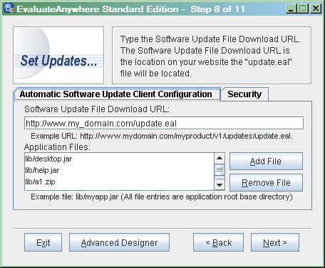
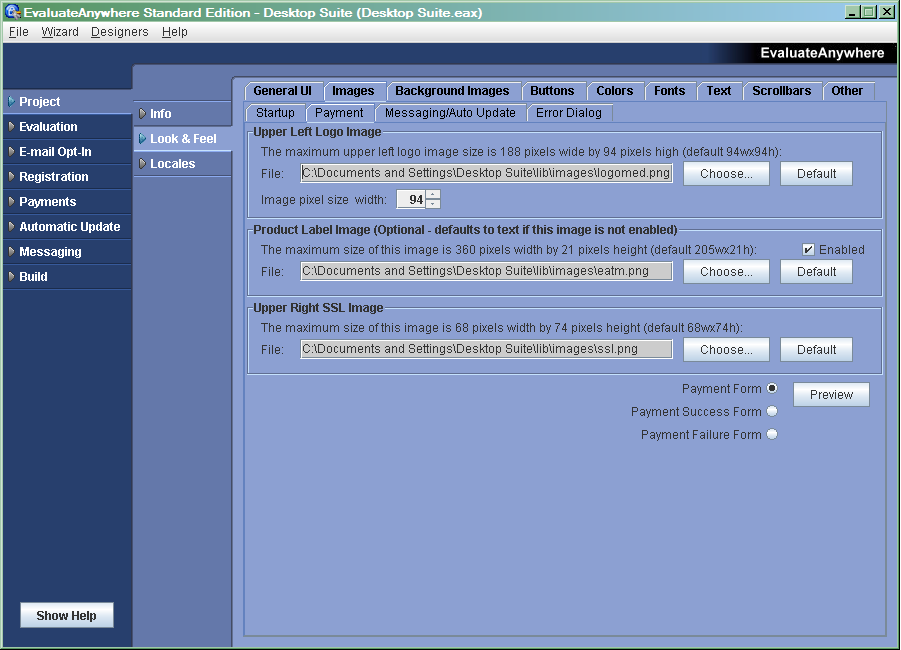
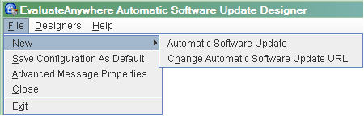
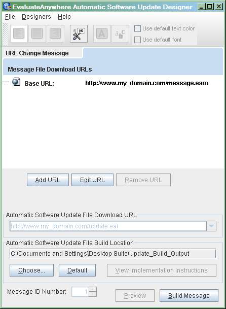

EvaluateAnywhere™
1.0 Reference Guide
Web Address: http://www.evaluateanywhere.com
Information in this document is subject to change without notice. Usage of the EvaluateAnywhere™ Software (includes this documentation) is restricted in accordance with the EvaluateAnywhere™ license agreement. Unless otherwise specified, the example companies, products, domain names, E-mail addresses and events depicted herein are fictitious, and no association with any real company, product, domain name, E-mail address, or event is intended or should be inferred. No part of this document may be reproduced, stored electronically, made available in a document retrieval system , or transmitted in any form or by any means (electronic, mechanical, or otherwise), or for any purpose, without the express written permission of Trinity Software, LLC.
It is the EvaluateAnywhere™ user's responsibility to ensure the suitability of EvaluateAnywhere™ before using it. In no circumstances will Trinity Software, LLC be responsible for any loss or damage of data or programs as a result of using EvaluateAnywhere™. Your use of EvaluateAnywhere™ implies acceptance of these terms.
Trinity Software, LLC may have copyrights, trademarks, patents, patent applications, or other intellectual property rights covering subject matter in this document. Except as expressly provided in any written license agreement from Trinity Software, LLC, the furnishing of this document does not give you any license to these copyrights, trademarks, patents, or other intellectual property.
Copyright ©2003-2005 Trinity Software, LLC. All rights reserved.
EvaluateAnywhere™, Trinity Software, LLC, the Trinity Software logo, and evaluateanywhere.com are trademarks or registered trademarks of Trinity Software, LLC.
Microsoft is a registered trademark and Windows, Windows 95, Windows 98, Windows ME, Windows NT, Windows 2000, Windows XP and their respective logos are registered trademarks of the Microsoft Corporation.
Java and all Java-based marks are trademarks, or registered trademarks of Sun Microsystems, Inc.
Printed in the United States of America
Table of Contents
Introduction 5
System Requirements 6
System Requirements (Distribution Client) 6
EvaluateAnywhere Project Wizard 7
New Project Panel 7
Open Project Panel 8
Set Info Panel 9
Set Features Panel 10
Evaluation Set Timer Panel 12
E-mail Opt-In Set Provider Panel 13
E-mail Opt-In GetResponse Provider Configuration Panel 14
Payment Processing Set Provider Panel 15
Payment Processing Skipjack Provider Configuration Panel 16
Automatic Software Update Configuration Panel 17
Messaging Configuration Panel 20
Specify Your Application's Main Class Panel 22
Build Project Panel 23
Build Summary Panel 24
Advanced Designer 27
Info Task 27
Look & Feel Task 29
Locales Task 83
Evaluation Feature 84
Timed 84
E-mail Opt-In Feature 86
HTML Form 86
User Interface 88
Actions 90
Registration Feature 91
Configuration 91
Registration Code UI 93
User Interface 93
Actions 95
Registration Code Success UI 96
User Interface 96
Actions 97
Registration Code Failed UI 98
User Interface 98
Payments Feature 99
Properties 99
HTML Form 101
Payment 101
Response 105
User Interface 109
Payment 109
Success 112
Failure 114
Actions 116
Automatic Update Feature 117
Properties 118
Platforms 120
Java 120
Mac OS X 121
Windows 122
UNIX 123
Actions 124
Security 126
Messaging Feature 127
Properties 127
Actions 129
Security 130
Build Task 131
Automatic Software Update Designer 134
Automatic Software Update Message 134
Automatic Software Update URL Change Message 140
Message Designer 144
Messaging Message 144
Messaging URL Change Message 149
Distribution Client API 153
Support 154
Technical Support 154
Peer Support 154
User Feedback 154
Introduction
EvaluateAnywhere™ is a 100% Java based multi-platform software product. EvaluateAnywhere™ assists developers, and software build specialists, integrate product evaluation code into your Java product with no programming or programming knowledge through an easy to use GUI interface. EvaluateAnywhere™ integrates functionalities of payment processing payment forms, product registration, web based E-mail opt-in functionality, automatic software updates, and application messaging directly into the evaluation software. Once the purchaser of your software product pays through the online payment form, the product automatically removes instantiation of the trial components, allowing the software distributor to avoid another costly software download. Additional advantages include reduced software charge backs, because if the customer trys out the software for the free trial period, and does not like it they do not have to buy. Its a win, win situation, only the happy customers will purchase your product, and charge backs will be substantially reduced. Additionally, your software will not include numerous links to web pages, thus giving your product a more professional appearance, and reducing the number of screens, and steps your customer must go through to pay for your product increases your sales significantly. Through web based sales the chances of making a sale can be reduced between 50% to 400% simply by requiring additional click through pages. The opt-in functionality allows you to increase your products opt-in percentages by allowing the customer to first see the goods before they opt-in to download the software they do not know if they will ever get. Email opt-ins can increase sales 400% to 1000%, through follow-up response. Lower product deployment, and Technical Support costs, speed up software update delivery time, and increase customer satisfaction with EvaluateAnywhere™'s Automatic Software Update, and Software Messaging components. Send product enhancements, bug fixes, product announcements, and messages to product users worldwide in multiple languages, or specific language groups. Automatic Software Update, and Message files support Java Code Signing. Signing EvaluateAnywhere™ Automatic Software Update, and Message files with a Sun Java Signing Digital ID will prevent outside parties from tampering with your code without your knowledge, and protect your customers against the risks that go with software downloads by authenticating the source and integrity of your downloadable content (with a corresponding software application java security policy). Trinity Software, LLC built EvaluateAnywhere™ with the intention that a user can implement and deploy a Trial version of their software in minutes, instead of days, or weeks.
EvaluateAnywhere™ easily integrates into Third Party SetUp products.
System Requirements
EvaluateAnywhere™ requires at least 128 MB free RAM for the designer. The minimum supported display resolution is 1024 x 768 resolution, running 256 colors. The EvaluateAnywhere™ Designer requires JRE 5.0, or a greater is installed. The EvaluateAnywhere™ Designer should run on all Microsoft Windows, Solaris, and Linux JRE 5.0 supported operating environments.
System Requirements (Distribution Client)
The EvaluateAnywhere™ Distribution Client requires at least 32 MB free RAM. The minimum supported display resolution is 800 x 600 resolution, running 256 colors. The EvaluateAnywhere™ Distribution Client requires JRE1.4.0_04 or later, JRE 1.4.2 or later, or JRE 5.0, or later to run the EvaluateAnywhere™ Distribution Client. The EvaluateAnywhere™ Distribution Client should run on all Microsoft Windows, Solaris, and Linux JRE 1.4.0_04, JRE 1.4.2, or JRE 5.0 supported operating environments. All other operating environments are unsupported, however, in theory the EvaluateAnywhere™ Distribution Client should run in any operating environment supporting JRE 1.4.0_04, JRE 1.4.2, or JRE 5.0.
EvaluateAnywhere™ Project Wizard
Deploy a Trial version of your software in minutes with the EvaluateAnywhere™ Project Wizard. The EvaluateAnywhere™ Project Wizard can create a simple EvaluateAnywhere™ Distribution Client in 6 to 13 steps, depending on the features that are chosen to be distributed in the EvaluateAnywhere™ Distribution Client.
The New Project Panel is step 1 in creating a simple EvaluateAnywhere™ Distribution Client. The New Project Panel is for creating a new project, or opening an existing EvaluateAnywhere™ project.
EvaluateAnywhere™
Project Wizard - New Project Panel
New Project Panel Options
Create New Project
Select this option to create a new EvaluateAnywhere™ project. This is the currently selected panel.
Open Existing Project
Select this option to open an EvaluateAnywhere™ project. Opens the Open Project Panel.
New Project
Click the "Save As..." button and specify a file name for your EvaluateAnywhere™ project. Click the “Next Button” to go to the “Set Product Information” step, or click the “Advanced Designer Button” to launch the new project in the Advanced Designer.
Project File Name: The project filename.
Save As Button: Specify the filename of the new project, by clicking the “Save As...” button.
Exit Button
Click the Exit button to exit the EvaluateAnywhere™ application.
Advanced Designer Button
Click the Advanced Designer button to switch to the Advanced Designer.
About Button
Click the About button to find out more about EvaluateAnywhere™.
Next Button
Click the Next button to go to the “Set Product Information” step.
The Open Project Panel is step 1 in opening an existing EvaluateAnywhere™ project.
EvaluateAnywhere™
Project Wizard - Open Project Panel
Open Project Panel Options
Create New Project
Select this option to create a new EvaluateAnywhere™ project. Opens the New Project Panel.
Open Existing Project
Select this option to open an EvaluateAnywhere™ project. This is the currently selected panel.
Open Recent Project
Select a project from the list of recent projects, or click "Open Other..." to browse for other projects.
Project List: A list of recently opened EvaluateAnywhere™ projects.
Open Other Button: Click to open an EvaluateAnywhere™ project, that is not in the “Open Recent Project” list.
Exit Button
Click the Exit button to exit the EvaluateAnywhere™ application.
Advanced Designer Button
Click the Advanced Designer button to switch to the Advanced Designer.
About Button
Click the About button to find out more about EvaluateAnywhere™.
Next Button
Click the Next button to go to the “Set Product Information” step.
The Set Info Panel is for setting product information for your EvaluateAnywhere™ project.
EvaluateAnywhere™
Project Wizard - Set Info Panel
Set Info Panel Options
Product Information
Vendor Name: Type in the vendor name of your product.
Product Name: Type in the name of your product.
Version: Type in the version of your product.
Copyright: Type in copyright year(s) of your product.
Product URL: Type in a URL here for your product's web page.
Product Info URL: Type in a URL here, for information about your product.
Exit Button
Click the Exit button to exit the EvaluateAnywhere™ application.
Advanced Designer Button
Click the Advanced Designer button to switch to the Advanced Designer.
Back Button
Click the Back button to go back to the “Open Project” step.
Next Button
Click the Next button to go to the “Set Features” step.
The Set Features Panel is for selecting the features to use in the EvaluateAnywhere™ project. The following steps will be for the selected features.
EvaluateAnywhere™
Project Wizard - Set Features Panel
Set Features Panel Options
Product Information
Enable Timed Evaluation Support: Timed Software Evaluation, try the product, before you buy functionality. Check the “Enable Timed Evaluation Support” checkbox to enable expiration processing functionality. Uncheck the “Enable Timed Evaluation Support” checkbox to disable the expiration processing functionality. The default value of the “Enable Timed Evaluation Support” checkbox is checked (enabled = true).
Enable E-mail Opt-In Support: Integrate web based E-mail Opt-In support, for automated E-mail marketing. Check the “Enable E-mail Opt-In Support” checkbox to enable E-mail Opt-In functionality. Uncheck the “Enable E-mail Opt-In Support” checkbox to disable the E-mail Opt-In functionality. The default value of the “Enable E-mail Opt-In Support” checkbox is checked (enabled = true).
Enable Registration Code Support: Integrate software evaluation with unlock registration/activation code support. Check the “Enable Registration Code Support” checkbox to enable Registration Code functionality. Uncheck the “Enable Registration Code Support” checkbox to disable the Registration Code functionality. The default value of the “Enable Registration Code Support” checkbox is checked (enabled = true).
Enable Payment Processing Support: Integrate payment processing forms into your software product. Check the “Enable Payment Processing Support” checkbox to enable Payment Processing functionality. Uncheck the “Enable Payment Processing Support” checkbox to disable the Payment Processing functionality. The default value of the “Enable Payment Processing Support” checkbox is checked (enabled = true).
Enable Automatic Software Update Support: Send product enhancements and bug fixes automatically to product users worldwide. Check the “Enable Automatic Software Update Support” checkbox to enable automatic software update functionality. Uncheck the “Enable Automatic Software Update Support” checkbox to disable the automatic software update functionality. The default value of the “Enable Automatic Software Update Support” checkbox is checked (enabled = true).
Enable Messaging Support: Support sending messages to application users worldwide, in multiple languages. Check the “Enable Messaging Support” checkbox to enable messaging functionality. Uncheck the “Enable Messaging Support” checkbox to disable the messaging functionality. The default value of the “Enable Messaging Support” checkbox is checked (enabled = true).
Exit Button
Click the Exit button to exit the EvaluateAnywhere™ application.
Advanced Designer Button
Click the Advanced Designer button to switch to the Advanced Designer.
Back Button
Click the Back button to go back to the “Set Product Information” step.
Next Button
Click to go to the next step.
The Evaluation Set Timer Panel is used to implement timed expiration processing of the application (try the product, before you buy functionality). Specify the allotted time until an application evaluation expires, and if the application is disabled upon evaluation expiration.
EvaluateAnywhere™
Project Wizard - Evaluation Set Timer Panel
Evaluation Set Timer Panel Options
Timed Evaluation Expiration Processing Configuration
Evaluation Days: Type in the time till expiration in days, hours, minutes, and seconds (numeric values only).
Disable Expired Software: Check the “Disable Expired Software” checkbox to disable software on expiration. Uncheck the “Disable Expired Software” checkbox to allow the software to run after the expiration period is reached. The default value of the “Disable Expired Software” checkbox is checked (disable software at expiration = true). The disabled software will be re-enabled upon successful payment via the EvaluateAnywhere™ Distribution Client payment processing form, or upon successful entry of a registration unlock code.
Exit Button
Click the Exit button to exit the EvaluateAnywhere™ application.
Advanced Designer Button
Click the Advanced Designer button to switch to the Advanced Designer.
Back Button
Click the Back button to go back to the previous step.
Next Button
Click to go to the next step.
The E-mail Opt-In Set Provider Panel is used to select an Opt-In Autoresponder Preferred Provider from the Providers list, or select "Unlisted Provider" from the Providers list to configure a Provider not in the list.
EvaluateAnywhere™
Project Wizard - E-mail Opt-In Set Provider Panel
E-mail Opt-In Set Provider Panel Options
Opt-In Autoresponder Providers
Privacy Policy E-mail: Type in the E-mail address product users can contact you for privacy policy inquiries.
Provider List: Select your Opt-In Autoresponder from the Opt-In Autoresponders list. Preferred Providers include:
AWeber (web address: http://www.aweber.com), and GetResponse (web address: http://getresponse.com) AutoResponder service providers. Get your FREE GetResponse account NOW! Select GetResponse, and click the "Create New Account" button in the next step.
Exit Button
Click the Exit button to exit the EvaluateAnywhere™ application.
Advanced Designer Button
Click the Advanced Designer button to switch to the Advanced Designer.
Back Button
Click the Back button to go back to the previous step.
Next Button
Click to go to the selected provider step.
The E-mail Opt-In GetResponse Provider Configuration Panel is used to specify your GetResponse Autoresponder configuration information.
EvaluateAnywhere™
Project Wizard - E-mail Opt-In GetResponse Provider Configuration
Panel
E-mail Opt-In GetResponse Provider Configuration Panel Options
GetResponse Autoresponder Configuration
Smart Responder name: Type the GetResponse Smart Autoresponder name.
Incorporate the Prospect Tracking feature: Select “Yes” to incorporate the Prospect Tracking feature.
Tracking Number (0 to 999): Select a Prospect Tracking Number, if Yes is selected in the Incorporate the Prospect Tracking feature.
Would you like to add a “misc” value?: The “misc” value is a deprecated feature.
“misc” value: The “misc” value is a deprecated feature.
Exit Button
Click the Exit button to exit the EvaluateAnywhere™ application.
Advanced Designer Button
Click the Advanced Designer button to switch to the Advanced Designer.
Back Button
Click the Back button to go back to the previous step.
Next Button
Click to go to the next step.
The Payment Processing Set Provider Panel is used to select a Payment Processing Gateway Preferred Provider from the Providers list, or a Payment Processing Web Page, or select "Unlisted Provider" from the Providers list to configure a Provider not in the list.
EvaluateAnywhere™
Project Wizard - Payment Processing Set Provider Panel
Payment Processing Set Provider Panel Options
Payment Processing Providers
Purchase Support E-mail: Type in the E-mail address product users can contact you for product support inquiries.
Provider List: Select your Opt-In Autoresponder from the Opt-In Autoresponders list. Preferred Providers include:
Skipjack (web address: http://www.skipjack.com), and goEmerchant (web address: http://goemerchant.com) Payment Processing Gateway service providers (goEmerchant is a preferred provider, however, support was not included in the EvaluateAnywhere™ 1.0 release Payment Processing Configuration Wizard). goEmerchant's EZPayment gateway was successfully tested with EvaluateAnywhere™ 1.0, using a custom go-thru web page.
Exit Button
Click the Exit button to exit the EvaluateAnywhere™ application.
Advanced Designer Button
Click the Advanced Designer button to switch to the Advanced Designer.
Back Button
Click the Back button to go back to the previous step.
Next Button
Click to go to the selected provider step.
The Skipjack Payment Processing Configuration Panel is used to specify your Skipjack configuration information.
EvaluateAnywhere™
Project Wizard - Payment Processing Skipjack Provider Configuration
Panel
Skipjack Payment Processing Configuration Panel Options
Skipjack Payment Processing Configuration
HTML Processing Serial Number: Specify the Skipjack account HTML Processing Serial number.
Product Purchase Price: Type the product purchase price with no dollar symbol.
Credit Card Verification Code Enabled (CVV2)?: Select Yes to enable credit card verification code support (CVV2).
Exit Button
Click the Exit button to exit the EvaluateAnywhere™ application.
Advanced Designer Button
Click the Advanced Designer button to switch to the Advanced Designer.
Back Button
Click the Back button to go back to the previous step.
Next Button
Click to go to the next step.
The Automatic Software Update Configuration Panel is used to configure the Automatic Software Update feature.

EvaluateAnywhere™
Project Wizard - Automatic Software Update Configuration Panel
Automatic Software Update Configuration Panel Options
Automatic Software Update Client Configuration
Software Update File Download URL: Type the Software Update File Download URL. The Software Update File Download URL is the location on your website the "update.eal" file will be located. Example URL: http://www.mydomain.com/myproduct/v1/updates/update.eal
Application Files (Classpath): Files added to the System/Application Classpath cannot be updated with the automatic update feature. EvaluateAnywhere™ Designer Automatic Update feature provides the ability to add items to the Application Classpath, that are updatable via the “Application Files (Classpath)”. “Application Files” are specified from the application root folder (typically filename, or my_dir/filename).
Add File Button: Click the “Add File Button” to add an updatable application file to the Application Classpath. Application Files” are specified via the application root folder base (typically filename, or my_dir/filename).
Auto Update - Properties Add File Window
Remove File Button: Click the Application Files (Classpath) list item to select the file to remove, and click the “Remove File Button” to remove the selected file from the Application Classpath.
Security
Select the appropriate security mode for the EvaluateAnywhere™ Distribution Client. The “Unsecure Mode (Test Mode)” allows unsigned (.eal) Jar files to be loaded via a software automatic update file. The Unsecure Mode was labeled as Test Mode to convey the security risk of deploying an automatic software update without a digital signature. Unsecure Mode may be an appropriate solution in a secure (closed network) environment, where hackers compromising the network server supporting the Automatic Software Update file is not a concern. The Secure Mode should be selected for all internet based distribution locations. The “Secure Mode” requires a Java Digital Signature for Jar Code Signing Identity Validation of all Automatic Software Updates downloaded in “Secure Mode”. The default Security Mode is “Secure Mode” to ensure an EvaluateAnywhere™ Distribution Client is not distributed in “Unsecure Mode” by mistake. It is important for implementors of the EvaluateAnywhere™ Distribution Client Automatic Software Update feature to remember to select the X500 Principal of a Jar file signed with the Java Digital Signature that will be used for Automatic Software Updates, or the Automatic Software Updates functionality will not read any software update file.
EvaluateAnywhere™ Project Wizard - Automatic Software Update Security Panel
Unsecure Mode (Test Mode), or Secure Mode (Requires configuration via the “Security” tab): Select the appropriate security mode for the EvaluateAnywhere™ Distribution Client. The “Unsecure Mode (Test Mode)” allows unsigned (.eal) Jar files to be loaded via a software automatic update file. The Unsecure Mode was labeled as Test Mode to convey the security risk of deploying an automatic software update without a digital signature. Unsecure Mode may be an appropriate solution in a secure (closed network) environment, where hackers compromising the network server supporting the Automatic Software Update file is not a concern. The Secure Mode should be selected for all internet based distribution locations. The “Secure Mode” requires a Java Digital Signature for Jar Code Signing Identity Validation of all Automatic Software Updates downloaded in “Secure Mode”. The default Security Mode is “Secure Mode” to ensure an EvaluateAnywhere™ Distribution Client is not distributed in “Unsecure Mode” by mistake. It is important for implementors of the EvaluateAnywhere™ Distribution Client Automatic Software Update feature to remember to select the X500 Principal of a Jar file signed with the Java Digital Signature that will be used for Automatic Software Updates, or the Automatic Software Updates functionality will not read any software update file.
Java Code Signing Validation Settings / Find Issuer X500 Principal Button: Type in the X500 Principal representing the issuer distinguished name, or click the "Find Issuer X500 Principal..." button to select a Jar file that was already signed with the digital signature that will be used for automatic software updates, and select the X500 Principal (Issuer Distinguished Name), to be used for identity validation. The X500 Principal is required if Automatic Software Update Java Code Signing is enabled. If the X500 Principal is not specified, software update files will be ignored by the EvaluateAnywhere™ Distribution Client.
Exit Button
Click the Exit button to exit the EvaluateAnywhere™ application.
Advanced Designer Button
Click the Advanced Designer button to switch to the Advanced Designer.
Back Button
Click the Back button to go back to the previous step.
Next Button
Click to go to the next step.
The Messaging Configuration Panel is used to configure the Messaging feature.
EvaluateAnywhere™
Project Wizard - Messaging Configuration Panel
Messaging Configuration Panel Options
Message Client Configuration
Message File Download URL: Type the Message File Download URL. The Message File Download URL is the location on your website the "message.eam" file will be located. Example URL: http://www.yourdomain.com/my_product/v1/messages/message.eam
Security
Select the appropriate security mode for the EvaluateAnywhere™ Distribution Client. The “Unsecure Mode (Test Mode)” allows unsigned (.eam) Jar files to be loaded via a message file. The Unsecure Mode was labeled as Test Mode to convey the security risk of deploying a message without a digital signature. Unsecure Mode may be an appropriate solution in a secure (closed network) environment, where hackers compromising the network server supporting the Message file is not a concern. The Secure Mode should be selected for all internet based distribution locations. The “Secure Mode” requires a Java Digital Signature for Jar Code Signing Identity Validation of all Messages downloaded in “Secure Mode”. The default Security Mode is “Secure Mode” to ensure an EvaluateAnywhere™ Distribution Client is not distributed in “Unsecure Mode” by mistake. It is important for implementors of the EvaluateAnywhere™ Distribution Client Messaging feature to remember to select the X500 Principal of a Jar file signed with the Java Digital Signature that will be used for Messages, or the Messaging functionality will not read any message file.
EvaluateAnywhere™
Project Wizard - Messaging Security Panel
Unsecure Mode (Test Mode), or Secure Mode (Requires configuration via the “Security” tab): Select the appropriate security mode for the EvaluateAnywhere™ Distribution Client. The “Unsecure Mode (Test Mode)” allows unsigned (.eam) Jar files to be loaded via a message file. The Unsecure Mode was labeled as Test Mode to convey the security risk of deploying a message without a digital signature. Unsecure Mode may be an appropriate solution in a secure (closed network) environment, where hackers compromising the network server supporting the Message file is not a concern. The Secure Mode should be selected for all internet based distribution locations. The “Secure Mode” requires a Java Digital Signature for Jar Code Signing Identity Validation of all Messages downloaded in “Secure Mode”. The default Security Mode is “Secure Mode” to ensure an EvaluateAnywhere™ Distribution Client is not distributed in “Unsecure Mode” by mistake. It is important for implementors of the EvaluateAnywhere™ Distribution Client Messaging feature to remember to select the X500 Principal of a Jar file signed with the Java Digital Signature that will be used for Messages, or the Messaging functionality will not read any message file.
Java Code Signing Validation Settings / Find Issuer X500 Principal Button: Type in the X500 Principal representing the issuer distinguished name, or click the "Find Issuer X500 Principal..." button to select a Jar file that was already signed with the digital signature that will be used for messages, and select the X500 Principal (Issuer Distinguished Name), to be used for identity validation. The X500 Principal is required if Messaging Java Code Signing is enabled. If the X500 Principal is not specified, message files will be ignored by the EvaluateAnywhere™ Distribution Client.
Exit Button
Click the Exit button to exit the EvaluateAnywhere™ application.
Advanced Designer Button
Click the Advanced Designer button to switch to the Advanced Designer.
Back Button
Click the Back button to go back to the previous step.
Next Button
Click to go to the next step.
The Specify Your Application's Main Class Panel is used to specify the name of the Java application main class.
EvaluateAnywhere™
Project Wizard - Specify Your Application's Main Class Panel
Specify Your Application's Main Class Panel Options
Specify Your Main Class
Main Class (Complete Package Name): Specify the complete Java main class package name. The main class is the class that starts the Java application (example: complete.package.MainClass).
Find Main Class Button: Select the Jar file containing the application main class in the file chooser, then select the application's main class in the main class chooser.
Exit Button
Click the Exit button to exit the EvaluateAnywhere™ application.
Advanced Designer Button
Click the Advanced Designer button to switch to the Advanced Designer.
Back Button
Click the Back button to go back to the previous step.
Next Button
Click to go to the next step.
The Build Project Panel is used to build the EvaluateAnywhere™ Distribution Client.
EvaluateAnywhere™
Project Wizard - Build Project Panel
Build Project Panel Options
Build Output Location
The Build Products are located at: The directory your build output (EvaluateAnywhere™ Distribution Client files) will be saved when the project is built. The textfield is read only. The build output location can be modified via the Advanced Designer Project Info task, “Build Location”.
The Saved Project is located at: The location your project file will be saved.
Exit Button
Click the Exit button to exit the EvaluateAnywhere™ application.
Advanced Designer Button
Click the Advanced Designer button to switch to the Advanced Designer.
Back Button
Click the Back button to go back to the previous step.
Build Button
Click to build the EvaluateAnywhere™ Project, and continue to the “Build Summary” step if the Project Build is successful.
The Build Summary Panel is used to display build results, launch application integration instructions, and try the build.
EvaluateAnywhere™
Project Wizard - Build Summary Panel
Build Summary Panel Options
Build Summary
Click here to view Application Integration Instructions: Click the “View Application Integration Instructions link” to view the EvaluateAnywhere™ Distribution Client application integration instructions in your web browser. The implementation instructions are included with a every build, in the build output directory. The implementation instructions file name is README.html. README.html can be viewed in a web browser.
Exit Button
Click the Exit button to exit the EvaluateAnywhere™ application.
Advanced Designer Button
Click the Advanced Designer button to switch to the Advanced Designer.
Back Button
Click the Back button to the “Build Project” step.
Try Button
Click the “Try Button” to try the EvaluateAnywhere™ Distribution Client build. Note: Due to classpath discrepancies the EvaluateAnywhere™ Distribution Client Startup Window “Try Button” will not start launch the application from the EvaluateAnywhere™ Project Wizard. Only the EvaluateAnywhere™ Distribution Client will be run. Follow the implementation Instructions to test the application launching portion of the EvaluateAnywhere™ Distribution Client.
Advanced Designer
The Advanced Designer is for customizing your EvaluateAnywhere™ Distribution Client packages. You can assign, and configure different Features, design the Graphical User Interface Look & Feel, specify User Interface Strings, configure Localizations, define and configure web based service providers, build your Distribution Client, and much more.
The EvaluateAnywhere™ Advanced Designer breaks down the distribution client creation process into tasks, and feature component technology which can be activated by clicking on the list located on the left side of the Advanced Designer window screen.
Project Task
The Project task is where general project settings are defined.
The Project Info task, is used to define basic product information (vendor name, product name, product version, product copyright date, java application's main class name, product information URL, product URL, privacy policy E-mail address, and customer support E-mail address) about the product that will implement the EvaluateAnywhere™ technology, and the EvaluateAnywhere™ project, and build output location.
The Project Look & Feel task used to design, and configure the EvaluateAnywhere™ Distribution Client Graphical User Interface. The Look & Feel task can be used to configure EvaluateAnywhere™ Distribution Client Graphical User Interface. The Project Look & Feel task supports configuration of Java LookAndFeel, EvaluateAnywhere graphical user interface layout model, custom configuration of the EvaluateAnywhere™ Distribution Client Images (includes splash image, and logo images), Background Images, Buttons (includes support for image buttons), Colors, Fonts, Scrollbars, Custom Borders, startup window actions, and text strings. An Information window can be added via the Project Look & Feel task. The Information window is a multi-purpose information window that can also be used as a product license window. To enable the information window select the Look & Feel -> Buttons -> General tab, and enable the Information Window button. To configure the displayed text in Information window, select the Look & Feel -> Text -> Information Dialog tab, and configure the Information Text, and the Information window title.
The Project Locales task is used to define the locales that will be distributed with the EvaluateAnywhere™ Distribution Client. The EvaluateAnywhere™ Standard Edition comes with 3 pre-translated locales (English, Spanish, and Catalon). The pre-translated locales simply need to be enabled to distribute the EvaluateAnywhere™ Distribution Client with those languages. If a non-translated locale must be distributed with the EvaluateAnywhere™ Distribution Client, the locale can be added using the Project Locales task, and a translation template will be created, that must be translated from the english language, to the language that will be distributed in the EvaluateAnywhere™ Distribution Client. The EvaluateAnywhere™ Distribution Client detects the operating system language settings and then choses the closest supported language included in the EvaluateAnywhere™ Distribution Client. If only one language is included in the EvaluateAnywhere™ Distribution Client that will be the locale that is displayed.
Info Task
The Project Info task, is used to define basic product information (vendor name, product name, product version, product copyright date, java application's main class name, product information URL, product URL, privacy policy E-mail address, and customer support E-mail address) about the product that will implement the EvaluateAnywhere™ technology, and the EvaluateAnywhere™ project, and build output location.
Project
- Info Panel
Info Task Options
Product Information
Vendor Name: Type in the vendor name of your product.
Product Name: Type in the name of your product.
Version: Type in the version of your product.
Copyright: Type in copyright year(s) of your product.
Java Main Class: Specify the complete Java main class package name. The main class is the class that starts the Java application (example: complete.package.MainClass).
Product Info URL: Type in a URL here, for information about your product.
Product URL: Type in a URL here for your product's web page.
Privacy Policy E-mail: Type in the E-mail address product users can contact you for privacy policy inquiries.
Support E-mail: Type in the E-mail address product users can contact you for product support inquiries.
Project Locations
Save Location: The location your project file will be saved.
Build Location: The directory your build output (EvaluateAnywhere™ Distribution Client files) will be saved when the project is built.
Last Saved: The time when your project was last saved.
Last Built: The time when your project was last built.
Look & Feel Task
The Project Look & Feel task used to design, and configure the EvaluateAnywhere™ Distribution Client Graphical User Interface. The Look & Feel task can be used to configure EvaluateAnywhere™ Distribution Client Graphical User Interface. The Project Look & Feel task supports configuration of Java LookAndFeel, EvaluateAnywhere graphical user interface layout model, custom configuration of the EvaluateAnywhere™ Distribution Client Images (includes splash image, and logo images), Background Images, Buttons (includes support for image buttons), Colors, Fonts, Scrollbars, Custom Borders, startup window actions, and text strings. An Information window can be added via the Project Look & Feel task. The Information window is a multi-purpose information window that can also be used as a product license window. To enable the information window select the Look & Feel -> Buttons -> General tab, and enable the Information Window button. To configure the displayed text in Information window, select the Look & Feel -> Text -> Information Dialog tab, and configure the Information Text, and the Information window title.
Project
- Look & Feel - General UI Tab
Look & Feel Task Options
General UI Tab
User Interface Modes
Specify the Distribution Client User Interface mode. Available User Interface modes are Swing.
GUI (Graphical User Interface) Look & Feel
Specify a Java Swing Look & Feel. Completely characterizes a look and feel from the point of view of the Java swing pluggable look and feel components. Defaults to System Default Look & Feel.
System
Default: The EvaluateAnywhere™
Swing mode Distribution Client will default the Graphical User
Interface to native systems look and feel if there is
one, otherwise the name of the default cross platform LookAndFeel
class will be used.
Other: Specify any Java Look & Feel, with the Other Look & Feel option selected. Type the Look & Feel Class name in the L&F Class name Text box. The default Other Look & Feel class name is Java's Metal Look & Feel (class name: javax.swing.plaf.metal.MetalLookAndFeel).
Startup Window GUI (Graphical User Interface) Model
The Startup Window GUI Model specifies the layout model of the Distribution Client Startup Window. The Startup Window is displayed by the Distribution Client if any of the following features are enabled in the Distribution Client; Evaluation (Expiration Processing), Payment Processing, or Registration Code Support.
Vertical Button Bar Model: The vertical button bar model places the Startup Window Button Bar in a vertical (up/down) layout on the the right side of the startup window, with the product's splash screen image on the left side of the window.
Horizontal Button Bar Model: The horizontal button bar model places the Startup Window Button Bar in a horizontal (left/right) layout on the the bottom side of the startup window, with the product's splash screen image on the top side of the window.
Note: The Horizontal Button Bar Model is not distributed in EvaluateAnywhere™ 1.0, and the option is disabled. Plans are in process to distribute the Horizontal Button Bar model via an EvaluateAnywhere™ software update, when it is available. At that time the Horizontal Button Bar option will be enabled.
Preview Button
Click the Preview button to view the Startup Window layout.
Images Tab
Project - Look & Feel - Images - Startup Tab
Images - Startup Tab
Startup Window Splash Image
The startup window splash image default size is 512 pixels width, by 318 pixels height.
File: Type in the file path here, of the splash window splash image.
Choose... Button: Click the “Choose...” button to open the file chooser window that can be used to specify the location of the splash image file path.
Default Button: Click the “Default” button to set the splash image file path to the default EvaluateAnywhere™ splash image.
Use default image canvas background color: Check the “Use default image canvas background color” checkbox to use the default Java Look & Feel panel background color. To choose a color click the color button (the button on the right side of the “Use default image canvas background color” checkbox that contains a color swatch image(button only displayed if checkbox is unchecked)).
Color Button: The color button is the button on the right side of the “Use default image canvas background color” checkbox that contains a color swatch image (button only displayed if checkbox is unchecked). The splash image color button launches the Color Chooser. Use the Color Chooser to choose the splash image background color. The splash image background color, includes a small area surrounding the background image.
Image pixel size width: Click the up arrow to increment the pixel size width, and click the down arrow to decrement the pixel size width. The default splash image pixel width is 512 pixels wide.
Image pixel size height: Click the up arrow to increment the pixel size height, and click the down arrow to decrement the pixel size height. The default splash image pixel height is 318 pixels high.
Button Bar Image Button
The “Button Bar Image Button” image is located in the upper right portion of the of the startup window (Vertical Button Bar Model only), located directly above the startup window buttons. This image is optional, and can be enabled or disabled. Typically, the “Button Bar Image Button” image will be used to display a company logo. The “Button Bar Image Button” image supports actions. The supported action types include “Disabled”, “Load Web Page”, or “Java Action”. The maximum image size of the “Button Bar Image Button” image is 105 pixels width, by 105 pixels height. Images that are smaller than the 105 pixels width, by 105 pixels height will be centered in the “Button Bar Image Button” image layout area. An additional setting for the “Button Bar Image Button” image called the “Startup Window Button Bar Height Pad” can be configured via the “Buttons” - “Startup Window” tab. The “Startup Window Button Bar Height Pad” can configure the pixel gap between the buttons, and the “Button Bar Image Button” image. Note: The Horizontal Button Bar Model does not implement the “Button Bar Image Button” image.
Enabled: Check the “Enabled” checkbox to display a “Button Bar Image Button” image. Uncheck the “Enabled” checkbox to disable the button bar image button. The default value of the “Enabled” checkbox is checked (enabled = true).
File: Type in the file path of “Button Bar Image Button” image here, or use the File Chooser, by clicking the “Choose...” button, or “Default” button to update the file path displayed in the File text field.
Choose... Button: Click the “Choose...” button to open the file chooser window that can be used to specify the location of the “Button Bar Image Button” image file path.
Default Button: Click the “Default” button to set the “Button Bar Image Button” image file path to the default EvaluateAnywhere™ “Button Bar Image Button” image.
Use default image canvas background color: Check the “Use default image canvas background color” checkbox to use the default Java Look & Feel panel background color. To choose a color click the color button (the button on the right side of the “Use default image canvas background color” checkbox that contains a color swatch image (button only displayed if checkbox is unchecked)).
Color Button: The color button is the button on the right side of the “Use default image canvas background color” checkbox that contains a color swatch image (button only displayed if checkbox is unchecked). The “Button Bar Image Button” image color button launches the Color Chooser. Use the Color Chooser to choose the “Button Bar Image Button” image background color. The “Button Bar Image Button” image background color, includes a small area surrounding the background image.
Stretch image to fit: Stretch the “Button Bar Image Button” image to fit the 105 pixels width, by 105 pixels height (end to end).
Align image to top: Aligns the “Button Bar Image Button” image to the top of the Button Bar.
Action Type: Click the drop down list to select an action type. The supported action types include “Disabled”, “Load Web Page”, or “Java Action”.
Disabled: Action support is disabled.
Load Web Page: Launches a web page URL that is specified in the Action text field.
Java Action: Instantiates a Java class specified in the Action text field that contains no
input parameters in the Java class constructor.
Action: Specify the action, associated with the selected “Action Type”. If “Disabled” Action Type is selected, no text should be entered in the “Action” text field. If “Load Web Page” Action Type is selected, the web page URL should be entered in the “Action” text field (example: http://www.evaluateanywhere.com). If “Java Action” Action Type is selected, specify the full Java class package name in the “Action” text field (example: com.mycompany.MyActionClass).
Progress Bar Image Button
The “Progress Bar Image Button” image is displayed in the lower left hand corner of the startup window (Vertical Button Bar Model only), and is located directly to the left of the Progress Bar. By default the “Progress Bar Image Button” image is disabled, and not displayed. The “Progress Bar Image Button” image height decreases by about half the length if Evaluation - Expiration Processing is not enabled. The “Progress Bar Image Button” image supports actions. The supported action types include “Disabled”, “Load Web Page”, or “Java Action”. The maximum image size of the “Progress Bar Image Button” image is 105 pixels width, by 105 pixels height. Images that are smaller than the 105 pixels width, by 105 pixels height will be centered in the “Progress Bar Image Button” image layout area. Note: The Horizontal Button Bar Model does not implement the “Progress Bar Image Button” image.
Enabled: Check the “Enabled” checkbox to display a “Progress Bar Image Button” image. Uncheck the “Enabled” checkbox to disable the button bar image button. The default value of the “Enabled” checkbox is checked (enabled = true).
File: Type in the file path of “Progress Bar Image Button” image here, or use the File Chooser, by clicking the “Choose...” button, or “Default” button to update the file path displayed in the File text field.
Choose... Button: Click the “Choose...” button to open the file chooser window that can be used to specify the location of the “Progress Bar Image Button” image file path.
Default Button: Click the “Default” button to set the “Progress Bar Image Button” image file path to the default EvaluateAnywhere™ “Progress Bar Image Button” image.
Use default image canvas background color: Check the “Use default image canvas background color” checkbox to use the default Java Look & Feel panel background color. To choose a color click the color button (the button on the right side of the “Use default image canvas background color” checkbox that contains a color swatch image (button only displayed if checkbox is unchecked)).
Color Button: The color button is the button on the right side of the “Use default image canvas background color” checkbox that contains a color swatch image (button only displayed if checkbox is unchecked). The “Progress Bar Image Button” image color button launches the Color Chooser. Use the Color Chooser to choose the “Progress Bar Image Button” image background color. The “Progress Bar Image Button” image background color, includes a small area surrounding the background image.
Stretch image to fit: Stretch the “Progress Bar Image Button” image to fit the 105 pixels width, by 105 pixels height (end to end).
Action Type: Click the drop down list to select an action type. The supported action types include “Disabled”, “Load Web Page”, or “Java Action”.
Disabled: Action support is disabled.
Load Web Page: Launches a web page URL that is specified in the Action text field.
Java Action: Instantiates a Java class specified in the Action text field that contains no
input parameters in the Java class constructor.
Action: Specify the action, associated with the selected “Action Type”. If “Disabled” Action Type is selected, no text should be entered in the “Action” text field. If “Load Web Page” Action Type is selected, the web page URL should be entered in the “Action” text field (example: http://www.evaluateanywhere.com). If “Java Action” Action Type is selected, specify the full Java class package name in the “Action” text field (example: com.mycompany.MyActionClass).
Preview Button
Click the Preview button to view the Startup Window.

Project
- Look & Feel - Images - Payment Tab
Images - Payment Tab
Upper Left Logo Image
The “Upper Left Logo Image” is located in the upper left portion of the of the payment window. Typically, the “Upper Left Logo Image” will be used to display a company logo image (the same image displayed in the startup window “Button Bar Image Button” image only smaller at a size of 94 pixels width, by 94 pixels height. The The “Upper Left Logo Image” width can be resized. The maximum suggested width is 188 pixels width.
File: Type in the file path of “Upper Left Logo Image” here, or use the File Chooser, by clicking the “Choose...” button, or “Default” button to update the file path displayed in the File text field.
Choose... Button: Click the “Choose...” button to open the file chooser window that can be used to specify the location of the “Upper Left Logo Image” image file path.
Default Button: Click the “Default” button to set the “Upper Left Logo Image” file path to the default EvaluateAnywhere™ “Upper Left Logo Image”.
Image pixel size width: Click the up arrow to increment the pixel size width, and click the down arrow to decrement the pixel size width. The default “Upper Left Logo Image” pixel width is 94 pixels wide.
Product Label Image (Optional - defaults to text if this image is not enabled)
The “Product Label Image” is implemented to allow a product to be purchased to display its product name or trademarked product name to be displayed via an image, instead of through text. If the “Product Label Image” is Enabled the product identifier will be the specified image. If the of the “Product Label Image” is not enabled the Product Name can be configured via the Payments Feature menu item on the left side of the Advanced Designer window, in the User Interface section via the “Product Name” User Interface String. The maximum image size of the “Product Label Image” is 360 pixels width, by 21 pixels height.
Enabled: If the “Product Label Image” is “Enabled” the product identifier will be the specified image. If the of the “Product Label Image” is not enabled the Product Name can be configured via the Payments Feature menu item on the left side of the Advanced Designer window, in the User Interface section, via the “Product Name” User Interface String.. The default value of the “Enabled” checkbox is not checked (enabled = false). The default User Interface String is the product name.
File: Type in the file path of “Product Label Image” here, or use the File Chooser, by clicking the “Choose...” button, or “Default” button to update the file path displayed in the File text field.
Choose... Button: Click the “Choose...” button to open the file chooser window that can be used to specify the location of the “Product Label Image” image file path.
Default Button: Click the “Default” button to set the “Product Label Image” file path to the default EvaluateAnywhere™ “Product Label Image”.
Upper Right SSL Image
The “Upper Right SSL Image” is to be used to display an image to a potential purchaser of the product being evaluated, that the connection to the payment processing server is secure. The maximum image size of the “Product Label Image” is 68 pixels width, by 74 pixels height.
File: Type in the file path of “Upper Right SSL Image” here, or use the File Chooser, by clicking the “Choose...” button, or “Default” button to update the file path displayed in the File text field.
Choose... Button: Click the “Choose...” button to open the file chooser window that can be used to specify the location of the “Upper Right SSL Image” image file path.
Default Button: Click the “Default” button to set the “Upper Right SSL Image” file path to the default EvaluateAnywhere™ “Upper Right SSL Image”.
Preview Button
Select the Payment Form, Payment Success Form, or Payment Failure Form, and then click the Preview button to view a preview of the selected form window.
Project
- Look & Feel - Images - Messaging/Auto Update Tab
Images - Messaging/Auto Update Tab
Messaging and Automatic Update Window Header Image
The “Messaging and Automatic Update Header Image” is implemented to allow a software product's branding to be displayed. If a Payments - “Payment Label Image” is enabled, the “Messaging and Automatic Update Header Image” will very likely use the same image. The maximum image size of the “Product Label Image” is 360 pixels width, by 21 pixels height. If an image will not be displayed simply leave the “File” text field empty.
File: Type in the file path of “Messaging and Automatic Update Header Image” here, or use the File Chooser, by clicking the “Choose...” button, or “Default” button to update the file path displayed in the File text field.
Choose... Button: Click the “Choose...” button to open the file chooser window that can be used to specify the location of the “Messaging and Automatic Update Header Image” image file path.
Default Button: Click the “Default” button to set the “Messaging and Automatic Update Header Image” file path to the default EvaluateAnywhere™ “Messaging and Automatic Update Header Image”.
Preview Button
Select the Message Form, or Automatic Update Form, and then click the Preview button to view a preview of the selected form window.
Project
- Look & Feel - Images - Error Dialog Tab
Images - Error Dialog Tab
Error Dialog Header Image
The “Error Dialog Header Image” is implemented to allow a software product's branding to be displayed. If a Payments - “Payment Label Image” is enabled, the “Error Dialog Header Image” will very likely use the same image. The maximum image size of the “Error Dialog Header Image” is 360 pixels width, by 21 pixels height. If an image will not be displayed simply leave the “File” text field empty.
File: Type in the file path of “Error Dialog Header Image” here, or use the File Chooser, by clicking the “Choose...” button, or “Default” button to update the file path displayed in the File text field.
Choose... Button: Click the “Choose...” button to open the file chooser window that can be used to specify the location of the “Error Dialog Header Image” image file path.
Default Button: Click the “Default” button to set the “Error Dialog Header Image” file path to the default EvaluateAnywhere™ “Error Dialog Header Image”.
Preview Button
Click the Preview button to view the Error Dialog Window.
Background Images Tab
Project
- Look & Feel - Background Images - Payment Tab
Background Images - Payment Tab
Payment Processing Window Background Image
The “Payment Processing Window Background Image” is a decorative image that can be displayed in the background of the Payment window (in the data entry portion of the window (center layout)). The “Payment Processing Window Background Image” preferred image size depends if the payment processing variable for telephone field being enabled or disabled. If the Payments -> HTML Form Input -> Telephone Input is enabled the preferred image size of the “Payment Processing Window Background Image” is 547 pixels width, by 441 pixels height. If the Payments -> HTML Form Input -> Telephone Input is not enabled the preferred image size of the “Payment Processing Window Background Image” is 547 pixels width, by 412 pixels height. If an image will not be displayed simply leave the “File” text field empty.
File: Type in the file path of “Payment Processing Window Background Image” here, or use the File Chooser, by clicking the “Choose...” button, or “Default” button to update the file path displayed in the File text field.
Choose... Button: Click the “Choose...” button to open the file chooser window that can be used to specify the location of the “Payment Processing Window Background Image” image file path.
Default Button: Click the “Default” button to set the “Payment Processing Window Background Image” file path to the default EvaluateAnywhere™ “Payment Processing Window Background Image”.
Payment Authorization Success Window Background Image
The “Payment Authorization Success Window Background Image” is a decorative image that can be displayed in the background of the Payment Authorization Success window (center layout - under the header area in the window). The “Payment Authorization Success Window Background Image” preferred image size is 500 pixels width, by 288 pixels height. If an image will not be displayed simply leave the “File” text field empty.
File: Type in the file path of “Payment Authorization Success Window Background Image” here, or use the File Chooser, by clicking the “Choose...” button, or “Default” button to update the file path displayed in the File text field.
Choose... Button: Click the “Choose...” button to open the file chooser window that can be used to specify the location of the “Payment Authorization Success Window Background Image” image file path.
Default Button: Click the “Default” button to set the “Payment Authorization Success Window Background Image” file path to the default EvaluateAnywhere™ “Payment Authorization Success Window Background Image”.
Payment Authorization Failure Window Background Image
The “Payment Authorization Failure Window Background Image” is a decorative image that can be displayed in the background of the Payment Authorization Failure window (center layout - under the header area, and to the left of the “Try Again” button area, in the payment authorization failure window). The “Payment Authorization Failure Window Background Image” preferred image size is 350 pixels width, by 158 pixels height. If an image will not be displayed simply leave the “File” text field empty.
File: Type in the file path of “Payment Authorization Failure Window Background Image” here, or use the File Chooser, by clicking the “Choose...” button, or “Default” button to update the file path displayed in the File text field.
Choose... Button: Click the “Choose...” button to open the file chooser window that can be used to specify the location of the “Payment Authorization Failure Window Background Image” image file path.
Default Button: Click the “Default” button to set the “Payment Authorization Failure Window Background Image” file path to the default EvaluateAnywhere™ “Payment Authorization Failure Window Background Image”.
Preview Button
Select the Payment Form, Payment Success Form, or Payment Failure Form, and then click the Preview button to view a preview of the selected form window.
Project
- Look & Feel - Background Images - Messaging/Auto Update Tab
Background Images - Messaging/Auto Update Tab
Messaging and Automatic Update Window Background Image
The “Messaging and Automatic Update Window Background Image” is a decorative image that can be displayed in the background of the Messaging, and Automatic Software Update windows (center layout - under the header image area (if header image is enabled)). The “Messaging and Automatic Update Window Background Image” preferred image size is 320 pixels width, by 140 pixels height. If an image will not be displayed simply leave the “File” text field empty.
File: Type in the file path of “Messaging and Automatic Update Window Background Image” here, or use the File Chooser, by clicking the “Choose...” button, or “Default” button to update the file path displayed in the File text field.
Choose... Button: Click the “Choose...” button to open the file chooser window that can be used to specify the location of the “Messaging and Automatic Update Window Background Image” image file path.
Default Button: Click the “Default” button to set the “Messaging and Automatic Update Window Background Image” file path to the default EvaluateAnywhere™ “Messaging and Automatic Update Window Background Image”.
Preview Button
Select the Message Form, or Automatic Update Form, and then click the Preview button to view a preview of the selected form window.

Project
- Look & Feel - Background Images - Error Dialog Tab
Background Images - Error Dialog Tab
Error Dialog Background Image
The “Error Dialog Background Image” is a decorative image that can be displayed in the background of the Error Dialog window (center layout - under the header image area (if header image is enabled)). The “Error Dialog Background Image” preferred image size is 320 pixels width, by 140 pixels height. If an image will not be displayed simply leave the “File” text field empty.
File: Type in the file path of “Error Dialog Background Image” here, or use the File Chooser, by clicking the “Choose...” button, or “Default” button to update the file path displayed in the File text field.
Choose... Button: Click the “Choose...” button to open the file chooser window that can be used to specify the location of the “Error Dialog Background Image” image file path.
Default Button: Click the “Default” button to set the “Error Dialog Background Image” file path to the default EvaluateAnywhere™ “Error Dialog Background Image”.
Preview Button
Click the Preview button to view the Error Dialog Window.
Buttons Tab
Project
- Look & Feel - Buttons - General Tab
Buttons - General Tab
Common Button Text Color
The common button text color is the button text color of the Distribution Client buttons, with the exception of the startup window, and secondary payment processing method option buttons that allow different button text colors to be specified.
Use default common button text color: Check the “Use default common button text color” checkbox to use the default common button text color. To choose a color click the color button (the button on the right side of the “Use default common button text color” checkbox that contains a color swatch image (button only displayed if checkbox is unchecked)).
Color Button: The color button is the button on the right side of the “Use default common button text color” checkbox that contains a color swatch image (button only displayed if checkbox is unchecked). The common button text color button launches the Color Chooser. Use the Color Chooser to choose the common button text color.
Common Button Text Font
The common button text font is the button text font of the Distribution Client buttons, with the exception of the startup window, and secondary payment processing method option buttons that allow different button text fonts to be specified.
Use default common button text font: Check the “Use default common button text font” checkbox to use the default common button text font. To choose a font click the “Set Font...” button).
Set Font... Button: The “Set Font...” button launches the Font Chooser. Use the Font Chooser to choose the common button text font. The “Set Font...” button is located on the right side of the “Use default common button text font” checkbox.
Secondary Payment Processing Method Option Button Text Color (Optional only on enabled)
The “Secondary Payment Processing Method Option Button” text color is the button text color of the secondary payment processing button (located on the bottom of the payments form (if enabled)).
Use default button text color: Check the “Use default button text color” checkbox to use the default button text color. To choose a color click the color button (the button on the right side of the “Use default button text color” checkbox that contains a color swatch image (button only displayed if checkbox is unchecked)).
Color Button: The color button is the button on the right side of the “Use default button text color” checkbox that contains a color swatch image (button only displayed if checkbox is unchecked). The color button launches the Color Chooser. Use the Color Chooser to choose the button text color.
Secondary Payment Processing Method Option Button Text Font (Optional only on enabled)
The “Secondary Payment Processing Method Option Button Text Font” is the button text font of the secondary payment processing button (located on the bottom of the payments form (if enabled)).
Use default button text font: Check the “Use default button text font” checkbox to use the default button text font. To choose a font click the “Set Font...” button).
Set Font... Button: The “Set Font...” button launches the Font Chooser. Use the Font Chooser to choose the button text font. The “Set Font...” button is located on the right side of the “Use default button text font” checkbox.
Startup Window Button Text Color
The “Startup Window Button Text Color” is the button text color of all the buttons located in the Button Bar area of the startup window.
Use default startup window button text color: Check the “Use default startup window button text color” checkbox to use the default startup window button text color. To choose a color click the color button (the button on the right side of the “Use default startup window button text color” checkbox that contains a color swatch image (button only displayed if checkbox is unchecked)).
Color Button: The color button is the button on the right side of the “Use default startup window button text color” checkbox that contains a color swatch image (button only displayed if checkbox is unchecked). The color button launches the Color Chooser. Use the Color Chooser to choose the button text color.
Startup Window Button Font
The “Startup Window Button Font” is the button text font of all the buttons located in the Button Bar area of the startup window.
Use default startup window button text font: Check the “Use default startup window button text font” checkbox to use the default button text font. To choose a font click the “Set Font...” button).
Set Font... Button: The “Set Font...” button launches the Font Chooser. Use the Font Chooser to choose the startup window buttons text font. The “Set Font...” button is located on the right side of the “Use default startup window button text font” checkbox.
Startup Window Button Bar Height Pad
The “Startup Window Button Bar Height Pad” can configure the pixel gap between the startup window Button Bar buttons, and the “Button Bar Image Button” image. Note: The Horizontal Button Bar Model does not implement the “Button Bar Image Button” image, and therefore does not implement the “Startup Window Button Bar Height Pad”.
Startup Window button bar height pad: Click the up arrow to increment the “Startup Window Button Bar Height Pad” pixel size, and click the down arrow to decrement the “Startup Window Button Bar Height Pad” pixel size width. The default “Startup Window Button Bar Height Pad” value is 20.
Preview Button
Click the Preview button to view the Startup Window.
Project
- Look & Feel - Buttons - Image Buttons Tab
Buttons - Image Buttons Tab
Image Buttons Configuration
The default button appearance in the Swing Java Look & Feel may not always meet the decorative requirements of the Graphical User Interface for the EvaluateAnywhere™ Distribution Client, therefore EvaluateAnywhere™ Distribution Clients can implement Image Buttons. Image Buttons are a set of 3 images that correspond to a button state. The Image Buttons states are the normal button state, the on click button state, and the in focus button state appearances. The suggested image button size is 94 pixels width, by 31 pixels height.
Image Buttons Enabled: Check the “Image Buttons Enabled” checkbox to use Image Buttons, uncheck the “Image Buttons Enabled” checkbox to use the Default Swing Java Look & Feel Button appearance.
Images pixel width: Click the up arrow to increment the pixel size width, and click the down arrow to decrement the pixel size width. The default image button pixel width is 94 pixels wide.
Images pixel height: Click the up arrow to increment the pixel size height, and click the down arrow to decrement the pixel size height. The default image button pixel height is 31 pixels high.
Image Button File: Type in the file path of “Image Button File” image here, or use the File Chooser, by clicking the “Choose...” button, or “Default” button to update the file path displayed in the File text field.
Image Button File Choose... Button: Click the “Choose...” button to open the file chooser window that can be used to specify the location of the “Image Button File” image file path.
Image Button File Default Button: Click the “Default” button to set the default image button image file path.
Image Button On Click File: Type in the file path of “Image Button On Click File” image here, or use the File Chooser, by clicking the “Choose...” button, or “Default” button to update the file path displayed in the File text field.
Image Button On Click File Choose... Button: Click the “Choose...” button to open the file chooser window that can be used to specify the location of the “Image Button On Click File” image file path.
Image Button On Click File Default Button: Click the “Default” button to set the default on click image button image file path.
Image Button In Focus File: Type in the file path of “Image Button In Focus File” image here, or use the File Chooser, by clicking the “Choose...” button, or “Default” button to update the file path displayed in the File text field.
Image Button In Focus File Choose... Button: Click the “Choose...” button to open the file chooser window that can be used to specify the location of the “Image Button In Focus File” image file path.
Image Button In Focus File Default Button: Click the “Default” button to set the default in focus image button image file path.
Payment Processing Continue Image Button Configuration
The Payment Processing Continue Image Button is a different size that the default image buttons due to the length of the button text. The suggested image button size is 123 pixels width, by 31 pixels height. The Payment Processing Continue Image Button images are required, if both Payment Processing, and Image Buttons functionality are enabled.
Images pixel width: Click the up arrow to increment the pixel size width, and click the down arrow to decrement the pixel size width. The default “Payment Processing Continue Image Button” pixel width is 123 pixels wide.
Images pixel height: Click the up arrow to increment the pixel size height, and click the down arrow to decrement the pixel size height. The default “Payment Processing Continue Image Button” pixel height is 31 pixels high.
Image Button File: Type in the file path of “Image Button File” image here, or use the File Chooser, by clicking the “Choose...” button, or “Default” button to update the file path displayed in the File text field.
Image Button File Choose... Button: Click the “Choose...” button to open the file chooser window that can be used to specify the location of the “Image Button File” image file path.
Image Button File Default Button: Click the “Default” button to set the default image button image file path.
Image Button On Click File: Type in the file path of “Image Button On Click File” image here, or use the File Chooser, by clicking the “Choose...” button, or “Default” button to update the file path displayed in the File text field.
Image Button On Click File Choose... Button: Click the “Choose...” button to open the file chooser window that can be used to specify the location of the “Image Button On Click File” image file path.
Image Button On Click File Default Button: Click the “Default” button to set the default on click image button image file path.
Image Button In Focus File: Type in the file path of “Image Button In Focus File” image here, or use the File Chooser, by clicking the “Choose...” button, or “Default” button to update the file path displayed in the File text field.
Image Button In Focus File Choose... Button: Click the “Choose...” button to open the file chooser window that can be used to specify the location of the “Image Button In Focus File” image file path.
Image Button In Focus File Default Button: Click the “Default” button to set the default in focus image button image file path.
Secondary Payment Processing Option Image Button Configuration (Optional only on enabled)
The “Secondary Payment Processing Option Image Button” is classified as an image button due to its implementation of the image button state model. The Secondary Payment Processing Option Image Button is closely related to the background image in size. The suggested image button size is 536 pixels width, by 34 pixels height. The “Secondary Payment Processing Option Image Button” supports actions. The supported action types include “Disabled”, “Load Web Page”, or “Java Action”. The Secondary Payment Processing Option Image Button images is optional, and can be enabled if Payment Processing support is enabled.
Enabled: Check the “Enabled” checkbox to enable, and display a “Secondary Payment Processing Option Image Button”. Uncheck the “Enabled” checkbox to disable the “Secondary Payment Processing Option Image Button”. The default value of the “Enabled” checkbox is checked (enabled = true).
Use default text background color: Check the “Use default text background color” checkbox to use the default text background color. To choose a color click the color button (the button on the right side of the “Use default text background color” checkbox that contains a color swatch image (button only displayed if checkbox is unchecked)).
Color Button: The color button is the button on the right side of the “Use default text background color” checkbox that contains a color swatch image (button only displayed if checkbox is unchecked). The color button launches the Color Chooser. Use the Color Chooser to choose the text background color.
Images pixel width: Click the up arrow to increment the pixel size width, and click the down arrow to decrement the pixel size width. The default “Secondary Payment Processing Option Image Button” pixel width is 536 pixels wide.
Images pixel height: Click the up arrow to increment the pixel size height, and click the down arrow to decrement the pixel size height. The default “Secondary Payment Processing Option Image Button” pixel height is 34 pixels high.
Image Button File: Type in the file path of “Image Button File” image here, or use the File Chooser, by clicking the “Choose...” button, or “Default” button to update the file path displayed in the File text field.
Image Button File Choose... Button: Click the “Choose...” button to open the file chooser window that can be used to specify the location of the “Image Button File” image file path.
Image Button File Default Button: Click the “Default” button to set the default image button image file path.
Image Button On Click File: Type in the file path of “Image Button On Click File” image here, or use the File Chooser, by clicking the “Choose...” button, or “Default” button to update the file path displayed in the File text field.
Image Button On Click File Choose... Button: Click the “Choose...” button to open the file chooser window that can be used to specify the location of the “Image Button On Click File” image file path.
Image Button On Click File Default Button: Click the “Default” button to set the default on click image button image file path.
Image Button In Focus File: Type in the file path of “Image Button In Focus File” image here, or use the File Chooser, by clicking the “Choose...” button, or “Default” button to update the file path displayed in the File text field.
Image Button In Focus File Choose... Button: Click the “Choose...” button to open the file chooser window that can be used to specify the location of the “Image Button In Focus File” image file path.
Image Button In Focus File Default Button: Click the “Default” button to set the default in focus image button image file path.
Action Type: Click the drop down list to select an action type. The supported action types include “Disabled”, “Load Web Page”, or “Java Action”.
Disabled: Action support is disabled.
Load Web Page: Launches a web page URL that is specified in the Action text field.
Java Action: Instantiates a Java class specified in the Action text field that contains no
input parameters in the Java class constructor.
Action: Specify the action, associated with the selected “Action Type”. If “Disabled” Action Type is selected, no text should be entered in the “Action” text field. If “Load Web Page” Action Type is selected, the web page URL should be entered in the “Action” text field (example: http://www.evaluateanywhere.com). If “Java Action” Action Type is selected, specify the full Java class package name in the “Action” text field (example: com.mycompany.MyActionClass).
Messaging & Auto Update Image Button Background Color
The Messaging & Auto Update Image Button Background Color is necessary to match the color of the background image, to the color of the button image background color.
Use default text background color: Check the “Use default text background color” checkbox to use the default text background color. To choose a color click the color button (the button on the right side of the “Use default text background color” checkbox that contains a color swatch image (button only displayed if checkbox is unchecked)).
Color Button: The color button is the button on the right side of the “Use default text background color” checkbox that contains a color swatch image (button only displayed if checkbox is unchecked). The color button launches the Color Chooser. Use the Color Chooser to choose the text background color.
Preview Button
Select the Payment Window, or Startup Window, and then click the Preview button to view a preview of the selected form window.
Project
- Look & Feel - Buttons - Startup Button Settings Tab
Buttons - Startup Button Settings Tab
Try Button
The “Try” button on the startup window starts the software application that is being evaluated. The Try button supports loading a web page, or launching the evaluation application, if Java Application is selected (a custom Java Action may not be specified on this button).
Enabled: Check the “Enabled” checkbox to enable, and display the “Try Button”. Uncheck the “Enabled” checkbox to disable/hide the “Try Button”. The default value of the “Enabled” checkbox is checked (enabled = true).
Button Text: Type in the button text here. The default button text value is “Try”.
Button Mnemonic: Type in the button single letter mnemonic here. The default button mnemonic is “T”. If a mnemonic will not be displayed/implemented simply leave the “Button Mnemonic” text field empty.
Action Type: Click the drop down list to select an action type. The supported action types include “Disabled”, “Load Web Page”, or “Java Action”.
Disabled: Action support is disabled.
Load Web Page: Launches a web page URL that is specified in the Action text field.
Java Action: Launch software action.
Action: Specify the action, associated with the selected “Action Type”. If “Disabled” Action Type is selected, no text should be entered in the “Action” text field. If “Load Web Page” Action Type is selected, the web page URL should be entered in the “Action” text field (example: http://www.evaluateanywhere.com). If “Java Action” is selected, Launch Java Action will be implemented.
Buy Button
The “Buy” button on the startup window launches the product payment window. The “Buy” button supports loading a web page, or launching the Java based Payment window.
Enabled: Check the “Enabled” checkbox to enable, and display the “Buy Button”. Uncheck the “Enabled” checkbox to disable/hide the “Buy Button”. The default value of the “Enabled” checkbox is checked (enabled = true).
Button Text: Type in the button text here. The default button text value is “Try”.
Button Mnemonic: Type in the button single letter mnemonic here. The default button mnemonic is “T”. If a mnemonic will not be displayed/implemented simply leave the “Button Mnemonic” text field empty.
Action Type: Click the drop down list to select an action type. The supported action types include “Disabled”, “Load Web Page”, or “Java Action”.
Disabled: Action support is disabled.
Load Web Page: Launches a web page URL that is specified in the Action text field.
Java Action: Buy Software Action.
Action: Specify the action, associated with the selected “Action Type”. If “Disabled” Action Type is selected, no text should be entered in the “Action” text field. If “Load Web Page” Action Type is selected, the web page URL should be entered in the “Action” text field (example: http://www.evaluateanywhere.com). If “Java Action” is selected, the Buy Software Action will be implemented.
Registration Code Button
The “Registration Code Button” on the startup window launches the product registration code window. The “Registration Code Button” supports loading a web page, or launching the registration code window.
Enabled: Check the “Enabled” checkbox to enable, and display the “Registration Code Button”. Uncheck the “Enabled” checkbox to disable/hide the “Registration Code Button”. The default value of the “Enabled” checkbox is checked (enabled = true).
Button Text: Type in the button text here. The default button text value is “Activate”.
Button Mnemonic: Type in the button single letter mnemonic here. The default button mnemonic is “A”. If a mnemonic will not be displayed/implemented simply leave the “Button Mnemonic” text field empty.
Action Type: Click the drop down list to select an action type. The supported action types include “Disabled”, “Load Web Page”, or “Java Action”.
Disabled: Action support is disabled.
Load Web Page: Launches a web page URL that is specified in the Action text field.
Java Action: Enter Registration Code Action.
Action: Specify the action, associated with the selected “Action Type”. If “Disabled” Action Type is selected, no text should be entered in the “Action” text field. If “Load Web Page” Action Type is selected, the web page URL should be entered in the “Action” text field (example: http://www.evaluateanywhere.com). If “Java Action” is selected, the Enter Registration Code Action will be implemented.
Information Button
The “Information Button” on the startup window launches the information window. The “Information Button” supports loading a web page, or launching the information window. This button is disabled/hidden by default.
Enabled: Check the “Enabled” checkbox to enable, and display the “Information Button”. Uncheck the “Enabled” checkbox to disable/hide the “Information Button”. The default value of the “Enabled” checkbox is checked (enabled = true).
Button Text: Type in the button text here. The default button text value is “Information”.
Button Mnemonic: Type in the button single letter mnemonic here. The default button mnemonic is “I”. If a mnemonic will not be displayed/implemented simply leave the “Button Mnemonic” text field empty.
Action Type: Click the drop down list to select an action type. The supported action types include “Disabled”, “Load Web Page”, or “Java Action”.
Disabled: Action support is disabled.
Load Web Page: Launches a web page URL that is specified in the Action text field.
Java Action: Display Information Dialog Action.
Action: Specify the action, associated with the selected “Action Type”. If “Disabled” Action Type is selected, no text should be entered in the “Action” text field. If “Load Web Page” Action Type is selected, the web page URL should be entered in the “Action” text field (example: http://www.evaluateanywhere.com). If “Java Action” is selected, the Display Information Dialog Action will be implemented.
Exit Button
The “Exit Button” on the startup window quits the application.
Enabled: Check the “Enabled” checkbox to enable, and display the “Exit Button”. Uncheck the “Enabled” checkbox to disable/hide the “Exit Button”. The default value of the “Enabled” checkbox is checked (enabled = true).
Button Text: Type in the button text here. The default button text value is “Quit”.
Button Mnemonic: Type in the button single letter mnemonic here. The default button mnemonic is “Q”. If a mnemonic will not be displayed/implemented simply leave the “Button Mnemonic” text field empty.
Preview Button
Click the Preview button to view the Startup Window.
Project
- Look & Feel - Buttons - OK Button Settings Tab
Buttons - OK Button Settings Tab
OK Button
The “OK Button” settings allow the OK Button text, and mnemonic to be configured across the Distribution Client user interface.
Button Text: Type in the button text here. The default button text value is “OK”.
Button Mnemonic: Type in the button single letter mnemonic here. The default button mnemonic is “O”. If a mnemonic will not be displayed/implemented simply leave the “Button Mnemonic” text field empty.
Preview Button
Click the Preview button to view the Error Dialog Window that contains an OK button, for OK button settings preview.
Colors Tab
Project
- Look & Feel - Colors - Startup Tab
Colors - Startup Tab
Button Bar Text Color
Use default button bar text color: Check the “Use default button bar text color” checkbox to use the default button bar text color. To choose a color click the color button (the button on the right side of the “Use default button bar text color” checkbox that contains a color swatch image (button only displayed if checkbox is unchecked)).
Color Button: The color button is the button on the right side of the “Use default button bar text color” checkbox that contains a color swatch image (button only displayed if checkbox is unchecked). The color button launches the Color Chooser. Use the Color Chooser to choose the button bar text color.
Button Bar Background Color
Use default button bar background color: Check the “Use default button bar background color” checkbox to use the default button bar background color. To choose a color click the color button (the button on the right side of the “Use default button bar background color” checkbox that contains a color swatch image (button only displayed if checkbox is unchecked)).
Color Button: The color button is the button on the right side of the “Use default button bar background color” checkbox that contains a color swatch image (button only displayed if checkbox is unchecked). The color button launches the Color Chooser. Use the Color Chooser to choose the button bar background color.
Progress Panel Text Color
Use default progress panel text color: Check the “Use default progress panel text color” checkbox to use the default progress panel text color. To choose a color click the color button (the button on the right side of the “Use default progress panel text color” checkbox that contains a color swatch image (button only displayed if checkbox is unchecked)).
Color Button: The color button is the button on the right side of the “Use default progress panel text color” checkbox that contains a color swatch image (button only displayed if checkbox is unchecked). The color button launches the Color Chooser. Use the Color Chooser to choose the progress panel text color.
Progress Panel Left Border Color
Use default progress panel left border color: Check the “Use default progress panel left border color” checkbox to use the default progress panel left border color. To choose a color click the color button (the button on the right side of the “Use default progress panel left border color” checkbox that contains a color swatch image (button only displayed if checkbox is unchecked)).
Color Button: The color button is the button on the right side of the “Use default progress panel left border color” checkbox that contains a color swatch image (button only displayed if checkbox is unchecked). The color button launches the Color Chooser. Use the Color Chooser to choose the progress panel left border color.
Progress Bar Fill Color
Use default progress bar fill color: Check the “Use default progress bar fill color” checkbox to use the default progress bar fill color. To choose a color click the color button (the button on the right side of the “Use default progress bar fill color” checkbox that contains a color swatch image (button only displayed if checkbox is unchecked)).
Color Button: The color button is the button on the right side of the “Use default progress bar fill color” checkbox that contains a color swatch image (button only displayed if checkbox is unchecked). The color button launches the Color Chooser. Use the Color Chooser to choose the progress bar fill color.
Progress Bar Background Color
Use default progress bar background color: Check the “Use default progress bar background color” checkbox to use the default progress bar background color. To choose a color click the color button (the button on the right side of the “Use default progress bar background color” checkbox that contains a color swatch image (button only displayed if checkbox is unchecked)).
Color Button: The color button is the button on the right side of the “Use default progress bar background color” checkbox that contains a color swatch image (button only displayed if checkbox is unchecked). The color button launches the Color Chooser. Use the Color Chooser to choose the progress bar background color.
Progress Bar Highlight Border Color
Use default progress bar highlight border color: Check the “Use default progress bar highlight border color” checkbox to use the default progress bar highlight border color. To choose a color click the color button (the button on the right side of the “Use default progress bar highlight border color” checkbox that contains a color swatch image (button only displayed if checkbox is unchecked)).
Color Button: The color button is the button on the right side of the “Use default progress bar highlight border color” checkbox that contains a color swatch image (button only displayed if checkbox is unchecked). The color button launches the Color Chooser. Use the Color Chooser to choose the progress bar highlight border color.
Progress Bar Shadow Border Color
Use default progress bar shadow border color: Check the “Use default progress bar shadow border color” checkbox to use the default progress bar shadow border color. To choose a color click the color button (the button on the right side of the “Use default progress bar shadow border color” checkbox that contains a color swatch image (button only displayed if checkbox is unchecked)).
Color Button: The color button is the button on the right side of the “Use default progress bar shadow border color” checkbox that contains a color swatch image (button only displayed if checkbox is unchecked). The color button launches the Color Chooser. Use the Color Chooser to choose the progress bar shadow border color.
Preview Button
Click the Preview button to view the Startup Window.

Project - Look & Feel - Colors - Payment Tab
Colors - Payment Tab
Label Text Color
Use default label text color: Check the “Use default label text color” checkbox to use the default label text color. To choose a color click the color button (the button on the right side of the “Use default label text color” checkbox that contains a color swatch image (button only displayed if checkbox is unchecked)).
Color Button: The color button is the button on the right side of the “Use default label text color” checkbox that contains a color swatch image (button only displayed if checkbox is unchecked). The color button launches the Color Chooser. Use the Color Chooser to choose the label text color.
Payment Header Product Identification Text Color
Use default text color: Check the “Use default text color” checkbox to use the default text color. To choose a color click the color button (the button on the right side of the “Use default text color” checkbox that contains a color swatch image (button only displayed if checkbox is unchecked)).
Color Button: The color button is the button on the right side of the “Use default text color” checkbox that contains a color swatch image (button only displayed if checkbox is unchecked). The color button launches the Color Chooser. Use the Color Chooser to choose the payment header product information text color.
Background Color
Use default background color: Check the “Use default background color” checkbox to use the default background color. To choose a color click the color button (the button on the right side of the “Use default background color” checkbox that contains a color swatch image (button only displayed if checkbox is unchecked)).
Color Button: The color button is the button on the right side of the “Use default background color” checkbox that contains a color swatch image (button only displayed if checkbox is unchecked). The color button launches the Color Chooser. Use the Color Chooser to choose the payment, payment authorization success, and payment authorization failure window background color.
Authorization Success Message Background Color
Use default success message background color: Check the “Use default success message background color” checkbox to use the default success message background color. To choose a color click the color button (the button on the right side of the “Use default success message background color” checkbox that contains a color swatch image (button only displayed if checkbox is unchecked)).
Color Button: The color button is the button on the right side of the “Use default success message background color” checkbox that contains a color swatch image (button only displayed if checkbox is unchecked). The color button launches the Color Chooser. Use the Color Chooser to choose the success message background color (the message background is the area behind the text message).
Authorization Failure Message Background Color
Use default failure message background color: Check the “Use default failure message background color” checkbox to use the default failure message background color. To choose a color click the color button (the button on the right side of the “Use default failure message background color” checkbox that contains a color swatch image (button only displayed if checkbox is unchecked)).
Color Button: The color button is the button on the right side of the “Use default failure message background color” checkbox that contains a color swatch image (button only displayed if checkbox is unchecked). The color button launches the Color Chooser. Use the Color Chooser to choose the failure message background color (the message background is the area behind the text message).
Preview Button
Select the Payment Form, Payment Success Form, or Payment Failure Form, and then click the Preview button to view a preview of the selected form window.
Project - Look & Feel - Colors - Refund Policy Tab
Colors - Refund Policy Tab
Background Color
Use default refund window background color: Check the “Use default refund window background color” checkbox to use the default refund window background color. To choose a color click the color button (the button on the right side of the “Use default refund window background color” checkbox that contains a color swatch image (button only displayed if checkbox is unchecked)).
Color Button: The color button is the button on the right side of the “Use default refund window background color” checkbox that contains a color swatch image (button only displayed if checkbox is unchecked). The color button launches the Color Chooser. Use the Color Chooser to choose the refund window background color.
Refund Policy Message Background Color
Use default message background color: Check the “Use default message background color” checkbox to use the default message background color. To choose a color click the color button (the button on the right side of the “Use default message background color” checkbox that contains a color swatch image (button only displayed if checkbox is unchecked)).
Color Button: The color button is the button on the right side of the “Use default message background color” checkbox that contains a color swatch image (button only displayed if checkbox is unchecked). The color button launches the Color Chooser. Use the Color Chooser to choose the refund message background color (the message background is the area behind the text message).
Text Color
Use default refund window text color: Check the “Use default refund window text color” checkbox to use the default refund window text color. To choose a color click the color button (the button on the right side of the “Use default refund window text color” checkbox that contains a color swatch image (button only displayed if checkbox is unchecked)).
Color Button: The color button is the button on the right side of the “Use default refund window text color” checkbox that contains a color swatch image (button only displayed if checkbox is unchecked). The color button launches the Color Chooser. Use the Color Chooser to choose the refund window text color.
Preview Button
Click the Preview button to view the refund window.
Project
- Look & Feel - Colors - Registration Tab
Colors - Registration Tab
Background Color
Use default registration window background color: Check the “Use default registration window background color” checkbox to use the default registration window background color. To choose a color click the color button (the button on the right side of the “Use default registration window background color” checkbox that contains a color swatch image (button only displayed if checkbox is unchecked)).
Color Button: The color button is the button on the right side of the “Use default registration window background color” checkbox that contains a color swatch image (button only displayed if checkbox is unchecked). The color button launches the Color Chooser. Use the Color Chooser to choose the registration, registration success, and registration failure form window background color.
Text Color
Use default registration window text color: Check the “Use default registration window text color” checkbox to use the default registration window text color. To choose a color click the color button (the button on the right side of the “Use default registration window text color” checkbox that contains a color swatch image (button only displayed if checkbox is unchecked)).
Color Button: The color button is the button on the right side of the “Use default registration window text color” checkbox that contains a color swatch image (button only displayed if checkbox is unchecked). The color button launches the Color Chooser. Use the Color Chooser to choose the registration, registration success, and registration failure form window text color.
Preview Button
Select the Registration Form, Registration Success Form, or Registration Failure Form, and then click the Preview button to view a preview of the selected form window.
Project - Look & Feel - Colors - Opt-In Tab
Colors - Opt-In Tab
Background Color
Use default opt-in window background color: Check the “Use default opt-in window background color” checkbox to use the default opt-in window background color. To choose a color click the color button (the button on the right side of the “Use default opt-in window background color” checkbox that contains a color swatch image (button only displayed if checkbox is unchecked)).
Color Button: The color button is the button on the right side of the “Use default opt-in window background color” checkbox that contains a color swatch image (button only displayed if checkbox is unchecked). The color button launches the Color Chooser. Use the Color Chooser to choose the E-mail Opt-In window background color.
Privacy Policy Text Link Color
Use default privacy policy text link color: Check the “Use default privacy policy text link color” checkbox to use the default privacy policy text link color. To choose a color click the color button (the button on the right side of the “Use default privacy policy text link color” checkbox that contains a color swatch image (button only displayed if checkbox is unchecked)).
Color Button: The color button is the button on the right side of the “Use default privacy policy text link color” checkbox that contains a color swatch image (button only displayed if checkbox is unchecked). The color button launches the Color Chooser. Use the Color Chooser to choose the privacy policy text link color.
Text Color
Use default opt-in window text color: Check the “Use default opt-in window text color” checkbox to use the default opt-in window text color. To choose a color click the color button (the button on the right side of the “Use default opt-in window text color” checkbox that contains a color swatch image (button only displayed if checkbox is unchecked)).
Color Button: The color button is the button on the right side of the “Use default opt-in window text color” checkbox that contains a color swatch image (button only displayed if checkbox is unchecked). The color button launches the Color Chooser. Use the Color Chooser to choose the E-mail Opt-In window text color.
Preview Button
Click the Preview button to view the E-mail Opt-In window.
Project
- Look & Feel - Colors - Privacy Policy Tab
Colors - Privacy Policy Tab
Background Color
Use default privacy policy window background color: Check the “Use default privacy policy window background color” checkbox to use the default privacy policy window background color. To choose a color click the color button (the button on the right side of the “Use default privacy policy window background color” checkbox that contains a color swatch image (button only displayed if checkbox is unchecked)).
Color Button: The color button is the button on the right side of the “Use default privacy policy window background color” checkbox that contains a color swatch image (button only displayed if checkbox is unchecked). The color button launches the Color Chooser. Use the Color Chooser to choose the privacy policy window background color.
Privacy Policy Message Background Color
Use default message background color: Check the “Use default message background color” checkbox to use the default message background color. To choose a color click the color button (the button on the right side of the “Use default message background color” checkbox that contains a color swatch image (button only displayed if checkbox is unchecked)).
Color Button: The color button is the button on the right side of the “Use default message background color” checkbox that contains a color swatch image (button only displayed if checkbox is unchecked). The color button launches the Color Chooser. Use the Color Chooser to choose the privacy policy message background color (the message background is the area behind the text message).
Text Color
Use default privacy policy window text color: Check the “Use default privacy policy window text color” checkbox to use the default privacy policy window text color. To choose a color click the color button (the button on the right side of the “Use default privacy policy window text color” checkbox that contains a color swatch image (button only displayed if checkbox is unchecked)).
Color Button: The color button is the button on the right side of the “Use default privacy policy window text color” checkbox that contains a color swatch image (button only displayed if checkbox is unchecked). The color button launches the Color Chooser. Use the Color Chooser to choose the privacy policy window text color.
Preview Button
Click the Preview button to view the privacy policy window.
Project - Look & Feel - Colors - Messaging/Auto Update Tab
Colors - Messaging/Auto Update Tab
Background Color
Use default messaging/update window background color: Check the “Use default messaging/update window background color” checkbox to use the default messaging/update window background color. To choose a color click the color button (the button on the right side of the “Use default messaging/update window background color” checkbox that contains a color swatch image (button only displayed if checkbox is unchecked)).
Color Button: The color button is the button on the right side of the “Use default messaging/update window background color” checkbox that contains a color swatch image (button only displayed if checkbox is unchecked). The color button launches the Color Chooser. Use the Color Chooser to choose the messaging/update window background color.
Message/Background Image Background Color
Use default message background color: Check the “Use default message background color” checkbox to use the default message background color. To choose a color click the color button (the button on the right side of the “Use default message background color” checkbox that contains a color swatch image (button only displayed if checkbox is unchecked)).
Color Button: The color button is the button on the right side of the “Use default message background color” checkbox that contains a color swatch image (button only displayed if checkbox is unchecked). The color button launches the Color Chooser. Use the Color Chooser to choose the automatic software update, and messaging message background color (the message background is the area behind the text message).
Preview Button
Select the Message Form, or Automatic Update Form, and then click the Preview button to view a preview of the selected form window.
Project
- Look & Feel - Colors - Information Dialog Tab
Colors - Information Dialog Tab
Background Color
Use default information window background color: Check the “Use default information window background color” checkbox to use the default information window background color. To choose a color click the color button (the button on the right side of the “Use default information window background color” checkbox that contains a color swatch image (button only displayed if checkbox is unchecked)).
Color Button: The color button is the button on the right side of the “Use default information window background color” checkbox that contains a color swatch image (button only displayed if checkbox is unchecked). The color button launches the Color Chooser. Use the Color Chooser to choose the information window background color.
Message/Background Image Background Color
Use default information message background color: Check the “Use default information message background color” checkbox to use the default information message background color. To choose a color click the color button (the button on the right side of the “Use default information message background color” checkbox that contains a color swatch image (button only displayed if checkbox is unchecked)).
Color Button: The color button is the button on the right side of the “Use default information message background color” checkbox that contains a color swatch image (button only displayed if checkbox is unchecked). The color button launches the Color Chooser. Use the Color Chooser to choose the information message background color (the message background is the area behind the text message).
Text Color
Use default information window text color: Check the “Use default information window text color” checkbox to use the default information window text color. To choose a color click the color button (the button on the right side of the “Use default information window text color” checkbox that contains a color swatch image (button only displayed if checkbox is unchecked)).
Color Button: The color button is the button on the right side of the “Use default information window text color” checkbox that contains a color swatch image (button only displayed if checkbox is unchecked). The color button launches the Color Chooser. Use the Color Chooser to choose the information window text color.
Preview Button
Click the Preview button to view the information dialog window.
Project - Look & Feel - Colors - Error Dialog Tab
Colors - Error Dialog Tab
Background Color
Use default error window background color: Check the “Use default error window background color” checkbox to use the default error window background color. To choose a color click the color button (the button on the right side of the “Use default error window background color” checkbox that contains a color swatch image (button only displayed if checkbox is unchecked)).
Color Button: The color button is the button on the right side of the “Use default error window background color” checkbox that contains a color swatch image (button only displayed if checkbox is unchecked). The color button launches the Color Chooser. Use the Color Chooser to choose the error window background color.
Message/Background Image Background Color
Use default error message background color: Check the “Use default error message background color” checkbox to use the default error message background color. To choose a color click the color button (the button on the right side of the “Use default error message background color” checkbox that contains a color swatch image (button only displayed if checkbox is unchecked)).
Color Button: The color button is the button on the right side of the “Use default error message background color” checkbox that contains a color swatch image (button only displayed if checkbox is unchecked). The color button launches the Color Chooser. Use the Color Chooser to choose the error message background color (the message background is the area behind the text message).
Text Color
Use default information window text color: Check the “Use default error window text color” checkbox to use the default error window text color. To choose a color click the color button (the button on the right side of the “Use default error window text color” checkbox that contains a color swatch image (button only displayed if checkbox is unchecked)).
Color Button: The color button is the button on the right side of the “Use default error window text color” checkbox that contains a color swatch image (button only displayed if checkbox is unchecked). The color button launches the Color Chooser. Use the Color Chooser to choose the error window text color.
Preview Button
Click the Preview button to view the error dialog window.
Fonts Tab
Project
- Look & Feel - Fonts - Startup Tab
Fonts - Startup Tab
Button Bar Font
The “Button Bar Font” is the button text font of all the buttons located in the Button Bar area of the startup window.
Use default button bar font: Check the “Use default button bar font” checkbox to use the default button bar font. To choose a font click the “Set Font...” button.
Set Font... Button: The “Set Font...” button launches the Font Chooser. Use the Font Chooser to choose the startup window button bar font. The “Set Font...” button is located on the right side of the “Use default button bar font” checkbox.
Progress Panel Font
The “Progress Panel Font” is the time left text font of the text displayed in the progress panel area of the startup window.
Use default progress panel font: Check the “Use default progress panel font” checkbox to use the default progress panel font. To choose a font click the “Set Font...” button.
Set Font... Button: The “Set Font...” button launches the Font Chooser. Use the Font Chooser to choose the startup window progress panel font. The “Set Font...” button is located on the right side of the “Use default progress panel font” checkbox.
Preview Button
Click the Preview button to view the Startup Window.
Project
- Look & Feel - Fonts - Payment Tab
Fonts - Payment Tab
Product Label Text Font
The “Product Label Text Font” is the font of the product identifier text displayed in the payment window header area.
Use default product label text font: Check the “Use default product label text font” checkbox to use the default product label text font. To choose a font click the “Set Font...” button.
Set Font... Button: The “Set Font...” button launches the Font Chooser. Use the Font Chooser to choose the product label text font. The “Set Font...” button is located on the right side of the “Use default product label text font” checkbox.
Header Label Text Font
The “Header Label Text Font” is the font of the product pricing information text displayed in the payment window header area.
Use default header label text font: Check the “Use default header label text font” checkbox to use the default header label text font. To choose a font click the “Set Font...” button.
Set Font... Button: The “Set Font...” button launches the Font Chooser. Use the Font Chooser to choose the header label text font. The “Set Font...” button is located on the right side of the “Use default header label text font” checkbox.
Label Text Font
The “Label Text Font” is the font used for text field labels located in the payment window data entry area.
Use default label text font: Check the “Use default label text font” checkbox to use the default label text font. To choose a font click the “Set Font...” button.
Set Font... Button: The “Set Font...” button launches the Font Chooser. Use the Font Chooser to choose the label text font. The “Set Font...” button is located on the right side of the “Use default label text font” checkbox.
Success/Failure Header Label Text Font
The “Success/Failure Header Label Text Font” is the font used for header text displayed in the payment success, and payment failure windows.
Use default header label text font: Check the “Use default header label text font” checkbox to use the default header label text font. To choose a font click the “Set Font...” button.
Set Font... Button: The “Set Font...” button launches the Font Chooser. Use the Font Chooser to choose the success, and failure window header label text font. The “Set Font...” button is located on the right side of the “Use default header label text font” checkbox.
Success/Failure Label Header Text Font
The “Success/Failure Label Header Text Font” is the font used for authorization success/failure label header, located directly below the payment success, and payment failure window header.
Use default label header text font: Check the “Use default label header text font” checkbox to use the default label header text font. To choose a font click the “Set Font...” button.
Set Font... Button: The “Set Font...” button launches the Font Chooser. Use the Font Chooser to choose the success, and failure window label header text font. The “Set Font...” button is located on the right side of the “Use default label header text font” checkbox.
Success/Failure Label Text Font
The “Success/Failure Text Font” is the font used for text field labels located in the success, and failure payment authorization window data entry areas.
Use default label text font: Check the “Use default label text font” checkbox to use the default label text font. To choose a font click the “Set Font...” button.
Set Font... Button: The “Set Font...” button launches the Font Chooser. Use the Font Chooser to choose the label text font. The “Set Font...” button is located on the right side of the “Use default label text font” checkbox.
Preview Button
Select the Payment Form, Payment Success Form, or Payment Failure Form, and then click the Preview button to view a preview of the selected form window.
Project
- Look & Feel - Fonts - Refund Policy Tab
Fonts - Refund Policy Tab
Text Font
The “Text Font” is the font of the text displayed in the refund policy window.
Use default text font: Check the “Use default text font” checkbox to use the default text font. To choose a font click the “Set Font...” button.
Set Font... Button: The “Set Font...” button launches the Font Chooser. Use the Font Chooser to choose the text font. The “Set Font...” button is located on the right side of the “Use default text font” checkbox.
Preview Button
Click the Preview button to view the refund window.

Project
- Look & Feel - Fonts - Registration Tab
Fonts - Registration Tab
Registration Code Label Font
The “Registration Code Label Font” is the font of the used for the registration code text field label on the registration code window.
Use default registration code label font: Check the “Use default registration code label font” checkbox to use the default registration code label font. To choose a font click the “Set Font...” button.
Set Font... Button: The “Set Font...” button launches the Font Chooser. Use the Font Chooser to choose the registration code label font. The “Set Font...” button is located on the right side of the “Use default registration code label font” checkbox.
Description Font
The “Description Font” is the font of the registration window description area in the registration code window.
Use default description font: Check the “Use default description font” checkbox to use the default description font. To choose a font click the “Set Font...” button.
Set Font... Button: The “Set Font...” button launches the Font Chooser. Use the Font Chooser to choose the description font. The “Set Font...” button is located on the right side of the “Use default description font” checkbox.
Preview Button
Select the Registration Form, Registration Success Form, or Registration Failure Form, and then click the Preview button to view a preview of the selected form window.
Project
- Look & Feel - Fonts - Opt-In Tab
Fonts - Opt-In Tab
Name/E-mail Label Font
The “Name/E-mail Label Font” is the font of the used for the E-mail Opt-In Name/E-mail text field label on the E-mail Opt-In window.
Use default Name/E-mail label font: Check the “Use default Name/E-mail label font” checkbox to use the default Name/E-mail label font. To choose a font click the “Set Font...” button.
Set Font... Button: The “Set Font...” button launches the Font Chooser. Use the Font Chooser to choose the Name/E-mail label font. The “Set Font...” button is located on the right side of the “Use default Name/E-mail label font” checkbox.
Description Font
The “Description Font” is the font of the E-mail Opt-In window description area in the E-mail Opt-In window.
Use default description font: Check the “Use default description font” checkbox to use the default description font. To choose a font click the “Set Font...” button.
Set Font... Button: The “Set Font...” button launches the Font Chooser. Use the Font Chooser to choose the description font. The “Set Font...” button is located on the right side of the “Use default description font” checkbox.
Privacy Policy Text Link Font
The “Privacy Policy Text Link Font” is the font of the privacy policy text link on the E-mail Opt-In window (not applicable if image buttons are enabled).
Use default text link font: Check the “Use default text link font” checkbox to use the default text link font. To choose a font click the “Set Font...” button.
Set Font... Button: The “Set Font...” button launches the Font Chooser. Use the Font Chooser to choose the text link font. The “Set Font...” button is located on the right side of the “Use default text link font” checkbox.
Text Field (Data Input) Font
The “Text Field (Data Input) Font” is the font of the text field text on the E-mail Opt-In window.
Use default text field font: Check the “Use default text field font” checkbox to use the default text field font. To choose a font click the “Set Font...” button.
Set Font... Button: The “Set Font...” button launches the Font Chooser. Use the Font Chooser to choose the text field font. The “Set Font...” button is located on the right side of the “Use default text field font” checkbox.
Preview Button
Click the Preview button to view the E-mail Opt-In window.
Project
- Look & Feel - Fonts - Privacy Policy Tab
Fonts - Privacy Policy Tab
Text Font
The “Text Font” is the font of the text displayed in the privacy policy window.
Use default text font: Check the “Use default text font” checkbox to use the default text font. To choose a font click the “Set Font...” button.
Set Font... Button: The “Set Font...” button launches the Font Chooser. Use the Font Chooser to choose the text font. The “Set Font...” button is located on the right side of the “Use default text font” checkbox.
Preview Button
Click the Preview button to view the privacy policy window.
Project
- Look & Feel - Fonts - Information Dialog Tab
Fonts - Information Dialog Tab
Text Font
The “Text Font” is the font of the text displayed in the information dialog window.
Use default information dialog text font: Check the “Use default information dialog text font” checkbox to use the default text font. To choose a font click the “Set Font...” button.
Set Font... Button: The “Set Font...” button launches the Font Chooser. Use the Font Chooser to choose the information dialog text font. The “Set Font...” button is located on the right side of the “Use default information dialog text font” checkbox.
Preview Button
Click the Preview button to view the information dialog window.
Project
- Look & Feel - Fonts - Error Dialog Tab
Fonts - Error Dialog Tab
Text Font
The “Text Font” is the font of the text displayed in the error dialog window.
Use default error dialog text font: Check the “Use default error dialog text font” checkbox to use the default text font. To choose a font click the “Set Font...” button.
Set Font... Button: The “Set Font...” button launches the Font Chooser. Use the Font Chooser to choose the error dialog text font. The “Set Font...” button is located on the right side of the “Use default error dialog text font” checkbox.
Preview Button
Click the Preview button to view the error dialog window.
Text Tab
Project
- Look & Feel - Text - Startup Window Tab
Text - Startup Window Tab
Startup Window Title Text
Type in the startup window title text here. The default text value is “PRODUCT_NAME - Software Evaluation”.
Days Left Text
Type in the startup window progress panel days left text here. The default text value is “days_left days remaining”.
Expired Text
Type in the startup window progress panel expired text here. The default text value is “Trial Expired”.
Image Missing Text
Type in the startup window image missing text here. The default text value is “Image goes here”. This is an error message that is displayed when required images are missing
Preview Button
Click the Preview button to view the Startup Window.
Project
- Look & Feel - Text - Information Dialog Tab
Text - Information Dialog Tab
Information Window Title Text
Type in the information dialog window title text here. The default text value is “About PRODUCT_NAME”.
Information Window Text Message
Type in the information dialog window text message here. The default text value is “Product information goes here.”.
Preview Button
Click the Preview button to view the information dialog window.
Project
- Look & Feel - Scrollbars Tab
Scrollbars Tab
Custom Scrollbars Configuration
Custom Scrollbars Enabled: Check the “Custom Scrollbars Enabled” checkbox to display custom scrollbars, instead of the default Java Swing Look & Feel scrollbars. Uncheck the “Custom Scrollbars Enabled” checkbox to use the default Java Swing Look & Feel scrollbars. The default value of the “Custom Scrollbars Enabled” checkbox is checked (enabled = false).
Scrollbar Thumb Image File: Type in the file path of “Scrollbar Thumb Image File” image here, or use the File Chooser, by clicking the “Choose...” button, or “Default” button to update the file path displayed in the File text field.
Scrollbar Thumb Image File Choose... Button: Click the “Choose...” button to open the file chooser window that can be used to specify the location of the “Scrollbar Thumb Image File” path.
Scrollbar Thumb Image File Default Button: Click the “Default” button to set the default scrollbar thumb image file path.
Message Scrollbar Thumb Image File: Type in the file path of “Message Scrollbar Thumb Image File” image here, or use the File Chooser, by clicking the “Choose...” button, or “Default” button to update the file path displayed in the File text field.
Message Scrollbar Thumb Image File Choose... Button: Click the “Choose...” button to open the file chooser window that can be used to specify the location of the “Message Scrollbar Thumb Image File” path.
Message Scrollbar Thumb Image File Default Button: Click the “Default” button to set the default message scrollbar thumb image file path.
Use default scrollbar background color: Check the “Use default scrollbar background color” checkbox to use the default scrollbar background color. To choose a color click the color button (the button on the right side of the “Use default scrollbar background color” checkbox that contains a color swatch image (button only displayed if checkbox is unchecked)).
Use default scrollbar background color - Color Button: The color button is the button on the right side of the “Use default scrollbar background color” checkbox that contains a color swatch image (button only displayed if checkbox is unchecked). The color button launches the Color Chooser. Use the Color Chooser to choose the scrollbar background color.
Use default scrollbar foreground color: Check the “Use default scrollbar foreground color” checkbox to use the default scrollbar foreground color. To choose a color click the color button (the button on the right side of the “Use default scrollbar foreground color” checkbox that contains a color swatch image (button only displayed if checkbox is unchecked)).
Use default scrollbar foreground color - Color Button: The color button is the button on the right side of the “Use default scrollbar foreground color” checkbox that contains a color swatch image (button only displayed if checkbox is unchecked). The color button launches the Color Chooser. Use the Color Chooser to choose the scrollbar foreground color.
Use default scrollbar arrow button background color: Check the “Use default scrollbar arrow button background color” checkbox to use the default scrollbar arrow button background color. To choose a color click the color button (the button on the right side of the “Use default scrollbar arrow button background color” checkbox that contains a color swatch image (button only displayed if checkbox is unchecked)).
Use default scrollbar arrow button background color - Color Button: The color button is the button on the right side of the “Use default scrollbar arrow button background color” checkbox that contains a color swatch image (button only displayed if checkbox is unchecked). The color button launches the Color Chooser. Use the Color Chooser to choose the scrollbar arrow button background color.
Use default scrollbar arrow button shadow color: Check the “Use default scrollbar arrow button shadow color” checkbox to use the default scrollbar arrow button shadow color. To choose a color click the color button (the button on the right side of the “Use default scrollbar arrow button shadow color” checkbox that contains a color swatch image (button only displayed if checkbox is unchecked)).
Use default scrollbar arrow button shadow color - Color Button: The color button is the button on the right side of the “Use default scrollbar arrow button shadow color” checkbox that contains a color swatch image (button only displayed if checkbox is unchecked). The color button launches the Color Chooser. Use the Color Chooser to choose the scrollbar arrow button shadow color.
Use default scrollbar arrow button dark shadow color: Check the “Use default scrollbar arrow button dark shadow color” checkbox to use the default scrollbar arrow button dark shadow color. To choose a color click the color button (the button on the right side of the “Use default scrollbar arrow button dark shadow color” checkbox that contains a color swatch image (button only displayed if checkbox is unchecked)).
Use default scrollbar arrow button dark shadow color - Color Button: The color button is the button on the right side of the “Use default scrollbar arrow button dark shadow color” checkbox that contains a color swatch image (button only displayed if checkbox is unchecked). The color button launches the Color Chooser. Use the Color Chooser to choose the scrollbar arrow button dark shadow color.
Use default scrollbar arrow button light highlight color: Check the “Use default scrollbar arrow button light highlight color” checkbox to use the default scrollbar arrow button light highlight color. To choose a color click the color button (the button on the right side of the “Use default scrollbar arrow button light highlight color” checkbox that contains a color swatch image (button only displayed if checkbox is unchecked)).
Use default scrollbar arrow button light highlight color - Color Button: The color button is the button on the right side of the “Use default scrollbar arrow button light highlight color” checkbox that contains a color swatch image (button only displayed if checkbox is unchecked). The color button launches the Color Chooser. Use the Color Chooser to choose the scrollbar arrow button light highlight color.
Use default scrollbar track color: Check the “Use default scrollbar track color” checkbox to use the default scrollbar track color. To choose a color click the color button (the button on the right side of the “Use default scrollbar track color” checkbox that contains a color swatch image (button only displayed if checkbox is unchecked)).
Use default scrollbar track color - Color Button: The color button is the button on the right side of the “Use default scrollbar track color” checkbox that contains a color swatch image (button only displayed if checkbox is unchecked). The color button launches the Color Chooser. Use the Color Chooser to choose the scrollbar track color.
Use default scrollbar track highlight color: Check the “Use default scrollbar track highlight color” checkbox to use the default scrollbar track highlight color. To choose a color click the color button (the button on the right side of the “Use default scrollbar track highlight color” checkbox that contains a color swatch image (button only displayed if checkbox is unchecked)).
Use default scrollbar track highlight color - Color Button: The color button is the button on the right side of the “Use default scrollbar track highlight color” checkbox that contains a color swatch image (button only displayed if checkbox is unchecked). The color button launches the Color Chooser. Use the Color Chooser to choose the scrollbar track highlight color.
Preview Button
Select the Information Window Scrollbar, or Message Window Scrollbar, and then click the Preview button to view a preview of the selected window with a scrollbar.
Project
- Look & Feel - Other Tab
Other Tab
Progress Bar Cell Spacing
Progress Bar Cell Spacing: Click the up arrow to increment the progress bar incremental gap (This is the progress bar fill appearance), and click the down arrow to decrement the incremental gap. The default progress bat incremental gap is 0 (solid fill).
Startup Window Button Color (does not apply to image buttons)
Use default startup window button color: Check the “Use default startup window button color” checkbox to use the default startup window button color. To choose a color click the color button (the button on the right side of the “Use default startup window button color” checkbox that contains a color swatch image (button only displayed if checkbox is unchecked)).
Color Button: The color button is the button on the right side of the “Use default startup window button color” checkbox that contains a color swatch image (button only displayed if checkbox is unchecked). The color button launches the Color Chooser. Use the Color Chooser to choose the startup window button color.
Startup Window Panel Separator Highlight Border Color
Use default startup window panel separator highlight border color: Check the “Use default startup window panel separator highlight border color” checkbox to use the default startup window panel separator highlight border color. To choose a color click the color button (the button on the right side of the “Use default startup window panel separator highlight border color” checkbox that contains a color swatch image (button only displayed if checkbox is unchecked)).
Color Button: The color button is the button on the right side of the “Use default startup window panel separator highlight border color” checkbox that contains a color swatch image (button only displayed if checkbox is unchecked). The color button launches the Color Chooser. Use the Color Chooser to choose the startup window panel separator highlight border color.
Startup Window Panel Separator Shadow Border Color
Use default startup window panel separator shadow border color: Check the “Use default startup window panel separator shadow border color” checkbox to use the default startup window panel separator shadow border color. To choose a color click the color button (the button on the right side of the “Use default startup window panel separator shadow border color” checkbox that contains a color swatch image (button only displayed if checkbox is unchecked)).
Color Button: The color button is the button on the right side of the “Use default startup window panel separator shadow border color” checkbox that contains a color swatch image (button only displayed if checkbox is unchecked). The color button launches the Color Chooser. Use the Color Chooser to choose the startup window panel separator shadow border color.
Custom Textfield Border Configuration
Custom Textfield Border Enabled: Check the “Custom Textfield Border Enabled” checkbox to display custom textfield borders on all textfield components with the exception of the payments window (no custom textfield border on payments window), instead of the default Java Swing Look & Feel textfield border. Uncheck the “Custom Textfield Border Enabled” checkbox to use the default Java Swing Look & Feel scrollbars. The default value of the “Custom Textfield Border Enabled” checkbox is checked (enabled = false).
Use default textfield exterior border color: Check the “Use default textfield exterior border color” checkbox to use the default textfield exterior border color. To choose a color click the color button (the button on the right side of the “Use default textfield exterior border color” checkbox that contains a color swatch image (button only displayed if checkbox is unchecked)).
Use default textfield exterior border color - Color Button: The color button is the button on the right side of the “Use default textfield exterior border color” checkbox that contains a color swatch image (button only displayed if checkbox is unchecked). The color button launches the Color Chooser. Use the Color Chooser to choose the textfield exterior border color.
Use default textfield highlight border color 1: Check the “Use default textfield highlight border color 1” checkbox to use the default textfield highlight border color 1. To choose a color click the color button (the button on the right side of the “Use default textfield highlight border color 1” checkbox that contains a color swatch image (button only displayed if checkbox is unchecked)).
Use default textfield highlight border color 1 - Color Button: The color button is the button on the right side of the “Use default textfield highlight border color 1” checkbox that contains a color swatch image (button only displayed if checkbox is unchecked). The color button launches the Color Chooser. Use the Color Chooser to choose the textfield highlight border color 1.
Use default textfield highlight border color 2: Check the “Use default textfield highlight border color 2” checkbox to use the default textfield highlight border color 2. To choose a color click the color button (the button on the right side of the “Use default textfield highlight border color 2” checkbox that contains a color swatch image (button only displayed if checkbox is unchecked)).
Use default textfield highlight border color 2 - Color Button: The color button is the button on the right side of the “Use default textfield highlight border color 2” checkbox that contains a color swatch image (button only displayed if checkbox is unchecked). The color button launches the Color Chooser. Use the Color Chooser to choose the textfield highlight border color 2.
Use default textfield shadow border color 1: Check the “Use default textfield shadow border color 1” checkbox to use the default textfield shadow border color 1. To choose a color click the color button (the button on the right side of the “Use default textfield shadow border color 1” checkbox that contains a color swatch image (button only displayed if checkbox is unchecked)).
Use default textfield shadow border color 1 - Color Button: The color button is the button on the right side of the “Use default textfield shadow border color 1” checkbox that contains a color swatch image (button only displayed if checkbox is unchecked). The color button launches the Color Chooser. Use the Color Chooser to choose the textfield shadow border color 1.
Use default textfield shadow border color 2: Check the “Use default textfield shadow border color 2” checkbox to use the default textfield shadow border color 2. To choose a color click the color button (the button on the right side of the “Use default textfield shadow border color 2” checkbox that contains a color swatch image (button only displayed if checkbox is unchecked)).
Use default textfield shadow border color 2 - Color Button: The color button is the button on the right side of the “Use default textfield shadow border color 2” checkbox that contains a color swatch image (button only displayed if checkbox is unchecked). The color button launches the Color Chooser. Use the Color Chooser to choose the textfield shadow border color 2.
Preview Button
Select the Startup Window, or Registration Window (Custom Border), and then click the Preview button to view a preview of the selected window.
Locales Task
The Project Locales task is used to define the locales that will be distributed with the EvaluateAnywhere™ Distribution Client. The EvaluateAnywhere™ Standard Edition comes with 3 pre-translated locales (English, Spanish, and Catalon). The pre-translated locales simply need to be enabled to distribute the EvaluateAnywhere™ Distribution Client with those languages. If a non-translated locale must be distributed with the EvaluateAnywhere™ Distribution Client, the locale can be added using the Project Locales task, and a translation template will be created, that must be translated from the english language, to the language that will be distributed in the EvaluateAnywhere™ Distribution Client. The EvaluateAnywhere™ Distribution Client detects the operating system language settings and then choses the closest supported language included in the EvaluateAnywhere™ Distribution Client. If only one language is included in the EvaluateAnywhere™ Distribution Client that will be the locale that is displayed.
Project
- Locales Panel
Locales Task Options
Configure Languages
Locale List: This lists all available locales.
Enabled: Select the locales that will be distributed with the distribution client.
Pre-Translated: The pre-translated section specifies whether or not the associated language comes translated with EvaluateAnywhere™, or whether the implementor must translate a template to the specified language (Yes for translation exists, No if translation must be performed).
Add Locale Button: Add a locale to the project (locales will need to be translated). Once the locale is added to the project the untranslated template is created and located in the <Project Root Directory>/locales subdirectory. Once a language file is translated, run the Java native2ascii tool on the translated file to complete the translation file.
Remove Locale Button: Remove a locale from the project locales list (only supports languages with the pre-translation value of No).
Timed
The Timed Evaluation feature is used to implement timed expiration processing of the application (try the product, before you buy functionality). Specify the allotted time until an application evaluation expires, and if the application is disabled upon evaluation expiration.
Evaluation
- Timed Panel
Evaluation Type
Enable Evaluation Expiration Support: Check the “Enable Evaluation Expiration Support” checkbox to enable expiration processing functionality. Uncheck the “Enable Evaluation Expiration Support” checkbox to disable the expiration processing functionality. The default value of the “Enable Evaluation Expiration Support” checkbox is checked (enabled = true).
Timed Evaluation: The Timed Evaluation model basis the evaluation expiration on the specified time till expiration in days, hours, minutes, and seconds. The Evaluation Expiration Model is the only expiration model included with EvaluateAnywhere™ 1.0.
Evaluation
Evaluation Days: Type in the time till expiration in days, hours, minutes, and seconds (numeric values only).
Expired
Disable Expired Software: Check the “Disable Expired Software” checkbox to disable software on expiration. Uncheck the “Disable Expired Software” checkbox to allow the software to run after the expiration period is reached. The default value of the “Disable Expired Software” checkbox is checked (disable software at expiration = true). The disabled software will be re-enabled upon successful payment via the EvaluateAnywhere™ Distribution Client payment processing form, or upon successful entry of a registration unlock code.
Integrate web based E-mail Opt-In support, for automated E-mail marketing. The E-mail Opt-In panels are used to configure the E-mail Opt-In functionality in the EvaluateAnyhwhere Distribution Client.
Enable E-mail Opt-In Support
Check the “Enable E-mail Opt-In Support” checkbox to enable E-mail Opt-In functionality. Uncheck the “Enable E-mail Opt-In Support” checkbox to disable the E-mail Opt-In functionality. The default value of the “Enable E-mail Opt-In Support” checkbox is checked (enabled = true).
HTML Form
The E-mail Opt-In HTML Form panel is used to design the HTTP request method.
E-mail
Opt-In - HTML Form Panel
HTML Form Inputs
Person's Name Input Name Attribute: Type in the HTML Form Input name attribute for the person's name data. The input value is entered by the user via the Opt-In window in the EvaluateAnywhere™ Distribution Client.
E-mail Address Input Name Attribute: Type in the HTML Form Input name attribute for the E-mail Address data. The input value is entered via the Opt-In window in the EvaluateAnywhere™ Distribution Client.
Add Input Button
Click the “Add Input Button” to add an HTML Form Hidden Input element, and then select the HTML Form Input. Type the new input name attribute, and input name value.
Edit Input Button
Select the HTML Form Input to edit with a click on the HTML Form Input Text, located in the HTML Form Inputs column. Click the “Edit Input Button” to edit the selected HTML Form Input element. The data in the “Input Name”, and “Input Value” column text fields can be modified. Note: “Person's Name Input Name Attribute”, and “E-mail Address Input Name Attribute” only allow editing of the Input Name Attribute. The “Name Value” of “Person's Name Input Name Attribute”, and “E-mail Address Input Name Attribute” HTML Form Input values are Name, and E-mail Address specified by the person that Opt's In via the E-mail Opt-In window.
Remove Input Button
Select the HTML Form Input to remove with a click on the HTML Form Input Text, located in the HTML Form Inputs column. Click the “Remove Input Button” to remove the selected HTML Form Input element. Note: “Person's Name Input Name Attribute”, and “E-mail Address Input Name Attribute” are required HTML Form Inputs of the E-mail Opt-In window, and cannot be removed.
Preview Button
Click the “Preview Button” to view the E-mail Opt-In window.
Configuration Wizard Button
Click the “Configuration Wizard Button” to launch the E-mail Opt-In Configuration Wizard. The Configuration Wizard automatically configures HTML Form Inputs for EvaluateAnywhere™ Preferred Providers of web based E-mail Opt-In/AutoResponder service providers. In EvaluateAnywhere™ 1.0, Preferred Providers include:
AWeber (web address: http://www.aweber.com), and GetResponse (web address: http://getresponse.com) AutoResponder service providers.
HTML Form Action URL
A URL that defines where to send the data (via HTTP request) when the “Continue” button is pushed on the EvaluateAnywhere™ Distribution Client E-mail Opt-In window.
HTTP Request Method
The HTTP method for sending data to the action URL. Default is POST.
GET: This method sends the form contents in the URL: URL?name=value&name=value.
POST: This method sends the form contents in the body of the request.
Enable Privacy Policy Support
Check the “Enable Privacy Policy Support” checkbox to enable Privacy Policy functionality. Uncheck the “Enable Privacy Policy Support” checkbox to disable the Privacy Policy functionality. The default value of the “Enable Privacy Policy Support” checkbox is checked (enabled = true). If Privacy Policy Support is enabled a Privacy Policy button, or text hyperlink will be displayed. The button, or hyperlink will link to the Privacy Policy window, or if specified a web page that contains the Privacy Policy.
Learn more about E-mail Opt-Ins
A web page hyperlink to a E-mail Opt-In / AutoResponder service provider that can provide more information about E-mail Opt-In / AutoResponder service.
Find a Provider
Click the “Find a Provider” hyperlink to launch the Find a Provider window for EvaluateAnywhere™ Preferred Providers of E-mail Opt-In service / AutoResponder service. The “Find a Provider” window links to Preferred Provider web pages, for customers that would like to research E-mail Opt-In service providers on their own. The “Find a Provider” wizard also supports configuration a Preferred Provider after a provider is chosen.
User Interface
The E-mail Opt-In User Interface panel is used to modify user interface text strings that are displayed in the EvaluateAnywhere™ 1.0 Distribution Client.

E-mail
Opt-In - User Interface Panel
User Interface Strings
Title: Type in the E-mail Opt-In window display title.
Short Description: Type in a short E-mail Opt-In window description.
Your Name Label: Type in the “Your Name” label text for the E-mail Opt-In window.
Your E-mail Label: Type in the “E-mail Address” label text for the E-mail Opt-In window.
Continue Button Text: Type in the “Continue Button Text” here. The default “Continue Button Text” value is “Continue >>”.
Continue Button Mnemonic: Type in the “Continue Button Mnemonic” single letter mnemonic here. The default “Continue Button Mnemonic” is “C”. If a mnemonic will not be displayed/implemented simply make the “Continue Button Mnemonic” value empty.
Cancel Button Text: Type in the “Cancel Button Text” here. The default “Cancel Button Text” text value is “Cancel”.
Cancel Button Mnemonic: Type in the “Cancel Button Mnemonic” single letter mnemonic here. The default “Cancel Button Mnemonic” is “C”. If a mnemonic will not be displayed/implemented simply make the “Cancel Button Mnemonic” value empty.
Privacy Policy Label: Type in the “Privacy Policy Label” here. The default “Privacy Policy Label” text value is “Privacy Policy”.
Privacy Policy Mnemonic: Type in the “Privacy Policy Mnemonic” single letter mnemonic here. The default “Privacy Policy Mnemonic” is “P”. If a mnemonic will not be displayed/implemented simply make the “Privacy Policy Mnemonic” value empty.
Enter Name Message: Type in the “Enter Name Message” here. The “Enter Name Message” is displayed if the E-mail Opt-In Window Continue Button is pressed before the Person's Name is entered. The default “Enter Name Message” text value is “Please Enter Your Name.”.
Enter Valid E-mail Address Message: Type in the “Enter Valid E-mail Address Message” here. The “Enter Valid E-mail Address Message” is displayed if the E-mail Opt-In Window Continue Button is pressed, and the E-mail Address given is not a valid E-mail Address. The default “Enter Valid E-mail Address Message” text value is “Please Enter a Valid E-mail Address.”.
Enter E-mail Address Message: Type in the “Enter E-mail Address Message” here. The “Enter E-mail Address Message” is displayed if the E-mail Opt-In Window Continue Button is pressed before the E-mail Address is entered. The default “Enter E-mail Address Message” text value is “Please Enter Your E-mail Address.”.
Privacy Policy Title: Type in the Privacy Policy window display title.
Privacy Policy: Type in the Privacy Policy window Privacy Policy text.
Preview Button
Click the “Preview Button” to view the E-mail Opt-In window.
Configuration Wizard
Click the “Configuration Wizard” button to launch the E-mail Opt-In Configuration Wizard. The Configuration Wizard automatically configures HTML Form Inputs for EvaluateAnywhere™ Preferred Providers of web based E-mail Opt-In/AutoResponder service providers. In EvaluateAnywhere™ 1.0, Preferred Providers include:
AWeber (web address: http://www.aweber.com), and GetResponse (web address: http://getresponse.com) AutoResponder service providers.
Actions
The E-mail Opt-In Actions panel is for displaying E-mail Opt-In Action Mappings. The only modifiable Action Mappings are “Load Privacy Policy GUI Action”, and “Load Privacy Policy GUI Action Type”.
E-mail
Opt-In - Actions Panel
Action Mappings
Load Privacy Policy GUI Action Type: Click the drop down list to select an action type. The supported action types include “Disabled”, “Load Web Page”, or “Java Action”.
Disabled: Action support is disabled.
Load Web Page: Launches a web page URL that is specified in the Action text field.
Java Action: Launches the EvaluateAnywhere™ 1.0 Distribution Client Privacy Policy window.
Load Privacy Policy GUI Action: Specify the action, associated with the selected “Action Type”. If “Disabled” Action Type is selected, no text should be entered in the “Action” text field. If “Load Web Page” Action Type is selected, the web page URL should be entered in the “Action” text field (example: http://www.evaluateanywhere.com). If “Java Action” Action Type is selected, the full Java class package name in the “Action” text field will be displayed for launching the EvaluateAnywhere™ 1.0 Distribution Client Privacy Policy window.
Cancel Action: The E-mail Opt-In “Cancel Action” is the action to be performed on click of the E-mail Opt-In window “Cancel” button. This value is read-only.
Continue Action: The E-mail Opt-In “Continue Action” is the action to be performed on click of the E-mail Opt-In window “Continue” button. This value is read-only.
Load Opt-In GUI Action: The E-mail Opt-In “Load Opt-In GUI Action” is the action that loads the E-mail Opt-In window. This value is read-only.
Preview Button
Click the “Preview Button” to view the E-mail Opt-In window.
Configuration Wizard Button
Click the “Configuration Wizard Button” to launch the E-mail Opt-In Configuration Wizard. The Configuration Wizard automatically configures HTML Form Inputs for EvaluateAnywhere™ Preferred Providers of web based E-mail Opt-In/AutoResponder service providers. In EvaluateAnywhere™ 1.0, Preferred Providers include:
AWeber (web address: http://www.aweber.com), and GetResponse (web address: http://getresponse.com) AutoResponder service providers.
Integrate software evaluation with unlock registration/activation code support. The Registration Code Feature is used to unlock an EvaluateAnywhere™ Distribution Client's evaluation mode, into the full use mode.
Enable Registration Code Support
Check the “Enable Registration Code Support” checkbox to enable Registration Code functionality. Uncheck the “Enable Registration Code Support” checkbox to disable the Registration Code functionality. The default value of the “Enable Registration Code Support” checkbox is checked (enabled = true).
Configuration
The Registration Configuration panel is for configuration of the Master Software Evaluation Unlock Code, additional unlock codes (optional), and maximum registration attempts before product lockout of the EvaluateAnywhere™ Distribution Client.
Registration - Configuration Panel
Registration Code Configuration
The “Registration Code Configuration” List Column contains the Registration Unlock Codes for the EvaluateAnywhere™ Distribution Client.
Master Software Evaluation Unlock Code: Every evaluation that implements the Registration Code feature must contain at least one evaluation unlock code. The first registration unlock code is referred to as the “Master Software Evaluation Unlock Code”.
Software Evaluation Unlock Code #: Every additional evaluation unlock code that is added to the EvaluateAnywhere™ Distribution Client is referenced iteratively as “Software Evaluation Unlock Code #”. The # symbol represents the numeric iteration beginning at 0, and iterating by 1, for each additional evaluation unlock code that is added to the EvaluateAnywhere™ Distribution Client.
Add Unlock Code Button
Click the “Add Unlock Code Button” to add a randomly generated Software Evaluation Unlock Code to the EvaluateAnywhere™ Distribution Client.
Remove Unlock Code Button
Click the Software Evaluation Unlock Code in the “Registration Code Configuration” list column, that will be removed. Click the “Remove Unlock Code Button” to remove the selected Software Evaluation Unlock Code. Note: “Master Software Evaluation Unlock Code” cannot be removed.
The Registration Code can be set below.
The Registration Code configuration area.
Software Evaluation Unlock Code: The selected Software Evaluation Unlock Code in the “Registration Code Configuration” list column, in the “Registration Code Configuration” list. To modify the selected registration code edit the code in the “Software Evaluation Unlock Code” textfield, to the desired registration code. A registration code can be any code that does not contain special characters or line returns (alphanumeric characters are safe to use in registration codes).
Generate Button: Click the “Generate” button to randomly generate a new evaluation unlock code for the selected Software Evaluation Unlock Code.
Apply Button: Click the “Apply” button to apply changes to the modified evaluation unlock code to the “Registration Code Configuration” List display. Modifications to Software Evaluation Unlock Codes will be implemented, however the changes will not be immediately updated in the Graphical User Interface unless the “Apply” button is clicked.
Maximum Registration Attempts Lockout: Select the maximum number of registration attempts until lockout of the EvaluateAnywhere™ Distribution Client. A registration attempt is the the entry of an invalid evaluation unlock code. The purpose of this feature is to protect against brute force attacks, that attempt to generate one evaluation code after another until a functional code is discovered. The default value of 20 attempts, is generous in ensuring that accidental invalid code entry, and even the casual user just trying a couple of codes by the chance they might unlock the product will not be locked out. The theory here is that some users might try to unlock the EvaluateAnywhere™ Distribution Client by entering a couple of random codes, but will then buy the product when they realize it will be more trouble than it is worth. 20 Registration attempts until lockout will ensure only hackers that are attempting a brute force attack will lose the ability to unlock the EvaluateAnywhere™ Distribution Client via the Graphical User Interface.
Preview Button
Click the “Preview Button” to view the Registration Code window.
Registration Code UI
User Interface
The
Registration Code UI (User Interface) panel is used to modify user
interface text strings that are displayed in the EvaluateAnywhere™
1.0 Distribution Client.
Registration Code UI - User Interface Panel
User Interface Strings
Registration Title: Type in the Registration Code window display title.
Registration Code Label: Type in the Registration Code textfield label for the Registration Code window.
Registration Paid Label Mnemonic: Type in the “Registration Paid Label Mnemonic” single letter mnemonic here. The default “Registration Paid Label Mnemonic” is “t”. If a mnemonic will not be displayed/implemented simply make the “Registration Paid Label Mnemonic” value empty.
Registration Paid Label: Type in the Registration Code window description for the “Registration Paid Label”.
Registration Register Button Text: Type in the “Registration Register Button Text” here. The default “Registration Register Button Text” value is “Activate”.
Registration Register Button Mnemonic: Type in the “Registration Register Button Mnemonic” single letter mnemonic here. The default “Registration Register Button Mnemonic” is “A”. If a mnemonic will not be displayed/implemented simply make the “Registration Register Button Mnemonic” value empty.
Registration Cancel Button Text: Type in the “Registration Cancel Button Text” here. The default “Registration Cancel Button Text” value is “Cancel”.
Registration Cancel Button Mnemonic: Type in the “Registration Cancel Button Mnemonic” single letter mnemonic here. The default “Registration Cancel Button Mnemonic” is “C”. If a mnemonic will not be displayed/implemented simply make the “Registration Cancel Button Mnemonic” value empty.
Preview Button
Click the “Preview Button” to view the Registration Code window.
Actions
The Registration Code UI (User Interface) Actions panel is for displaying Registration Code window related Action Mappings. All Registration Code UI (User Interface) Actions are read-only.
Registration
Code UI - Actions Panel
Action Mappings
Load Registration Code UI Action: The “Load Registration Code UI Action” is the action that loads the Registration Code window. This value is read-only.
Registration Success UI Action: The “Registration Success UI Action” is the action that loads the Registration Code Success window if the correct Registration Code was entered in the Registration Code window. This value is read-only.
Registration Failed UI Action: The “Registration Failed UI Action” is the action that loads the Registration Code Failed window if an invalid Registration Code was entered in the Registration Code window. This value is read-only.
Preview Button
Click the “Preview Button” to view the Registration Code window.
Registration Code Success UI
User Interface
The Registration Code Success UI (User Interface) panel is used to modify user interface text strings that are displayed in the EvaluateAnywhere™ 1.0 Distribution Client.
Registration
Code Success UI - User Interface Panel
User Interface Strings
Registration Succeeded Title: Type in the Registration Code Success window display title.
Registration Succeeded Header Label: Type in the Registration Code Success window header label.
Registration Succeeded Description: Type in the “Registration Succeeded Description” for the Registration Code Success window.
Registration Succeeded Button Text: Type in the “Registration Succeeded Button Text” here. The default “Registration Succeeded Button Text” value is “Done”.
Registration Succeeded Button Mnemonic: Type in the “Registration Succeeded Button Mnemonic” single letter mnemonic here. The default “Registration Succeeded Button Mnemonic” is “D”. If a mnemonic will not be displayed/implemented simply make the “Registration Succeeded Button Mnemonic” value empty.
Preview Button
Click the “Preview Button” to view the Registration Code Success window.
Actions
The Registration Code Success UI (User Interface) Actions panel is for displaying Registration Code Success window related Action Mappings. All Registration Code Success UI (User Interface) Actions are read-only.
Registration
Code Success UI - Actions Panel
Action Mappings
Registration Succeeded Action: The Registration Succeeded window “Registration Succeeded Action” is performed on click of the Registration Succeeded window “Done” button. The “Registration Succeeded Action” will either exit the application, or load the application, depending on the “Exit application on registration success” string boolean value.
Exit application on registration success: The “Exit application on registration success” will either exit the application, or load the application, depending on the string boolean value. Set the “Exit application on registration success” to false and load the application upon successful application registration, or set the “Exit application on registration success” value to true, if the application should be restarted before loading the application the first time, and the application will exit on successful registration.
Exit application on registration success message: The “Exit application on registration success message” will be presented via the user interface to alert the customer the application will be exited if the “Exit application on registration success” string boolean value is true. The default “Exit application on registration success message” text value is “Exiting Application. Please Restart application to use registered version.”.
Preview
Click the “Preview Button” to view the Registration Code Success window.
Registration Code Failed UI
User Interface
The Registration Code Failed UI (User Interface) panel is used to modify user interface text strings that are displayed in the EvaluateAnywhere™ 1.0 Distribution Client.
Registration
Code Failed UI - User Interface Panel
User Interface Strings
Registration Failed Title: Type in the Registration Code Failed window display title.
Registration Failed Message: Type in the “Registration Failed Message” for the Registration Code Failed window.
Registration Failed OK Button Text: Type in the “Registration Failed OK Button Text” here. The default “Registration Failed OK Button Text” value is “OK”.
Registration Failed OK Button Mnemonic: Type in the “Registration Failed OK Button Mnemonic” single letter mnemonic here. The default “Registration Failed OK Button Mnemonic” is “O”. If a mnemonic will not be displayed/implemented simply make the “Registration Failed OK Button Mnemonic” value empty.
Preview Button
Click the “Preview Button” to view the Registration Code Failed window.
The Payments Feature panels is used to integrate Payment Processing functionality directly into the EvaluateAnywhere™ Distribution Client.
Enable Payment Processing Support
Check the “Enable Payment Processing Support” checkbox to enable Payment Processing functionality. Uncheck the “Enable Payment Processing Support” checkbox to disable the Payment Processing functionality. The default value of the “Enable Payment Processing Support” checkbox is checked (enabled = true).
Properties
The Payments Properties panel is for configuration of the payment processing purchase transaction properties.
Payments
- Properties Panel
Payment Processing Properties
Merchant ID: Type in the “Merchant ID” of the payment processing gateway merchant account.
Product Price: Type in the price of the software product (the total amount to be billed to the purchaser), in the format accepted by the payment processing gateway.
Payment Attempts Before Lockdown: Select the maximum number of payment attempts until lockout of the EvaluateAnywhere™ Distribution Client. A payment attempt is the the submission of payment processing transaction to a server for transaction processing. The purpose of this feature is to reduce attempts by hackers to use stolen credit card number lists to perform multiple payment attempts. EvaluateAnywhere™ Distribution clients can reduce these types of transactions. The transaction return charges can be very costly, and a small reduction in these charges can increase profits, and reduce losses, by reducing the number of return charges, and charge back fees. The default value is 7 payment attempts until lockdown of payment processing functionality.
Order ID Leading ID (Order ID + generated portion): Type in the “Order ID Leading ID”. The Order ID Leading ID is appended to the first portion of the Order ID as an Order identifier. This alphanumeric string is often a product identifier. If an Order ID Leading ID is not desired in the Order ID string leave this value empty. Products that require a specific Order ID can implement the com.trinity.ea.idef.IOrderIDGenerator interface. Specify the IOrderIDGenerator package name in the Payments -> Actions panel via the Order ID Generator Action, and add the package to the EvaluateAnywhere™ DIstribution Client Jar file.
Credit Card Verification Code Enabled: The “Credit Card Verification Code Enabled” enable Credit Card Verification (CVV2) support if the string value is true, and disable Credit Card Verification (CVV2) support if the string boolean value is set to false. Enabling Credit Card Verification (CVV2) support will add a Credit Card Verification number textfield to the EvaluateAnywhere™ Distribution Client Payment Processing window, and append a CVV2 HTML Form Input to the HTTP transaction request.
Payment Methods Accepted: Type in the “Payment Methods Accepted”, comma separated with no spaces. The default payment methods accepted are “Visa,Mastercard,Discover,American Express”.
Payment Response URL: Type in the “Payment Response URL” if the HTTP Request uses a GET method with a Meta tag, refresh attribute response.
Secondary Payment Method Web Page URL: If the “Secondary Payment Method Web Page URL Enabled” string boolean value is set to true, type the “Secondary Payment Method Web Page URL” here.
Secondary Payment Method Web Page URL Enabled: The “Secondary Payment Method Web Page URL Enabled” supports a web page text link / image button, at the bottom of the Payment window if the string value is true, otherwise the “Secondary Payment Method Web Page URL Enabled” string value must be set to false.
Preview Button
Click the “Preview Button” to view the Payment window.
Configuration Wizard Button
Click the “Configuration Wizard Button” to launch the Payment Processing Configuration Wizard. The Configuration Wizard automatically configures HTML Form Inputs for EvaluateAnywhere™ Preferred Providers of web based Payment Processing Gateway service. In EvaluateAnywhere™ 1.0, Preferred Providers include:
Skipjack (web address: http://www.skipjack.com), and goEmerchant (web address: http://goemerchant.com) Payment Processing Gateway service providers (goEmerchant is a preferred provider, however, support was not included in the EvaluateAnywhere™ 1.0 release Payment Processing Configuration Wizard). goEmerchant's EZPayment gateway was successfully tested with EvaluateAnywhere™ 1.0, using a custom go-thru web page.
HTML Form
Payment
The Payments HTML Form panel is used to design the HTTP request method.
Payments
- HTML Form - Payment Panel
HTML Form Inputs
First Name Input Name Attribute: If “Separate First and Last Name Inputs Enabled” string boolean value is “true”, type in the HTML Form Input name attribute for the “First Name Input Name Attribute”. If “Separate First and Last Name Inputs Enabled” string boolean value is “false”, type in the HTML Form Input name attribute for the “Name on Card Input Name Attribute” for a person's full name. The input value is entered by the user via the Payment window in the EvaluateAnywhere™ Distribution Client.
Last Name Input Name Attribute: If “Separate First and Last Name Inputs Enabled” string boolean value is “true”, type in the HTML Form Input name attribute for the “Last Name Input Name Attribute”. The input value is entered by the user via the Payment window in the EvaluateAnywhere™ Distribution Client.
Street Address Input Name Attribute: Type in the HTML Form Input name attribute for the “Street Address Input Name Attribute”. The input value is entered by the user via the Payment window in the EvaluateAnywhere™ Distribution Client.
City Input Name Attribute: Type in the HTML Form Input name attribute for the “City Input Name Attribute”. The input value is entered by the user via the Payment window in the EvaluateAnywhere™ Distribution Client.
State Input Name Attribute: Type in the HTML Form Input name attribute for the “State Input Name Attribute”. The input value is entered by the user via the Payment window in the EvaluateAnywhere™ Distribution Client.
Zip Code Input Name Attribute: Type in the HTML Form Input name attribute for the “Zip Code Input Name Attribute”. The input value is entered by the user via the Payment window in the EvaluateAnywhere™ Distribution Client.
Country Input Name Attribute: Type in the HTML Form Input name attribute for the “Country Input Name Attribute”. The input value is entered by the user via the Payment window in the EvaluateAnywhere™ Distribution Client.
E-mail Address Input Name Attribute: Type in the HTML Form Input name attribute for the “E-mail Address Input Name Attribute”. The input value is entered by the user via the Payment window in the EvaluateAnywhere™ Distribution Client.
Payment Method Input Name Attribute: Type in the HTML Form Input name attribute for the “Payment Method Input Name Attribute”. The Payment Method could be referred to as the Credit Card Type Input Name Attribute. The input value is entered by the user via the Payment window in the EvaluateAnywhere™ Distribution Client.
Credit Card Number Block 1 Input Name Attribute: If “Credit Card is Single Input Name Attribute” string boolean value is “true”, type in the HTML Form Input name attribute for the Credit Card Number Input Name Attribute in the “Credit Card Number Block 1 Input Name Attribute”, and ignore Credit Card Number Block's 2, 3, and 4. If “Credit Card is Single Input Name Attribute” string boolean value is “false”, type in the HTML Form Input name attribute for the “Credit Card Number Block 1 Input Name Attribute”. The input value is entered by the user via the Payment window in the EvaluateAnywhere™ Distribution Client.
Credit Card Number Block 2 Input Name Attribute: If “Credit Card is Single Input Name Attribute” string boolean value is “false”, type in the HTML Form Input name attribute for the “Credit Card Number Block 2 Input Name Attribute”. The input value is entered by the user via the Payment window in the EvaluateAnywhere™ Distribution Client.
Credit Card Number Block 3 Input Name Attribute: If “Credit Card is Single Input Name Attribute” string boolean value is “false”, type in the HTML Form Input name attribute for the “Credit Card Number Block 3 Input Name Attribute”. The input value is entered by the user via the Payment window in the EvaluateAnywhere™ Distribution Client.
Credit Card Number Block 4 Input Name Attribute: If “Credit Card is Single Input Name Attribute” string boolean value is “false”, type in the HTML Form Input name attribute for the “Credit Card Number Block 4 Input Name Attribute”. The input value is entered by the user via the Payment window in the EvaluateAnywhere™ Distribution Client.
Credit Card Verification Code Input Name Attribute: If “Credit Card Verification Code Enabled” string boolean value is “true”, type in the HTML Form Input name attribute for the “Credit Card Verification Code Input Name Attribute”. The input value is entered by the user via the Payment window in the EvaluateAnywhere™ Distribution Client.
Expiration Month Input Name Attribute: Type in the HTML Form Input name attribute for the “Expiration Month Input Name Attribute”. The input value is entered by the user via the Payment window in the EvaluateAnywhere™ Distribution Client.
Expiration Year Input Name Attribute: Type in the HTML Form Input name attribute for the “Expiration Year Input Name Attribute”. The input value is entered by the user via the Payment window in the EvaluateAnywhere™ Distribution Client.
Merchant ID Input Name Attribute: Type in the HTML Form Input name attribute for the “Merchant ID Input Name Attribute”.
Order ID Input Name Attribute: Type in the HTML Form Input name attribute for the “Order ID Input Name Attribute”.
Name on Card Input Name Attribute: If “Full Name Input Enabled” string boolean value is “true”, type in the HTML Form Input name attribute for the “Name on Card Input Name Attribute”. The “Name on Card Input Name Attribute” is the person's full name Input name attribute. The input value is entered by the user via the Payment window in the EvaluateAnywhere™ Distribution Client.
Response URL Input Name Attribute: Type in the HTML Form Input name attribute for the “Response URL Input Name Attribute” if the HTTP Request uses a HTTP GET request method with a Meta tag, refresh attribute response.
Total Price Input Name Attribute: Type in the HTML Form Input name attribute for the “Total Price Input Name Attribute”. The “Total Price Input Name Attribute” is the input name attribute for the amount that will be charged to the customer's credit card.
Telephone Input Name Attribute: If the “Telephone Input Enabled” string boolean value is “true”, type in the HTML Form Input name attribute for the “Telephone Input Name Attribute”. The input value is entered by the user via the Payment window in the EvaluateAnywhere™ Distribution Client.
Telephone Input Enabled: If a telephone number must be collected as a part of the payment transaction, set the string boolean value for “Telephone Input Enabled” to “true”, if a telephone number will not be collected via the Payment window set the “Telephone Input Enabled” to “false”.
Credit Card is Single Input Name Attribute: If “Credit Card is Single Input Name Attribute” string boolean value is “true”, type in the HTML Form Input name attribute for the Credit Card Number Input Name Attribute in the “Credit Card Number Block 1 Input Name Attribute”, and ignore Credit Card Number Block's 2, 3, and 4. If “Credit Card is Single Input Name Attribute” string boolean value is “false”, type in the HTML Form Input name attribute for the “Credit Card Number Block 1 Input Name Attribute”.
Separate First and Last Name Inputs Enabled: If first and last name input attributes both are required in the HTML Form, set “Separate First and Last Name Inputs Enabled” string boolean value to “true”, and type in the HTML Form Input name attribute for the “First Name Input Name Attribute”, and the “Last Name Input Name Attribute”. If “Separate First and Last Name Inputs Enabled” are not enabled set the string boolean value to “false”.
Full Name Input Enabled: If the customer's first and last name must be in a single HTML Form Input name attribute, set “Full Name Input Enabled” string boolean value to “true”, and type in the HTML Form Input name attribute for the “Name on Card Input Name Attribute”. Otherwise, set the string boolean value of “Full Name Input Enabled” to “false”.
Add Input Button
Click the “Add Input Button” to add an HTML Form Hidden Input element, and then select the HTML Form Input. Type the new input name attribute, and input name value.
Edit Input Button
Select the HTML Form Input to edit with a click on the HTML Form Input Text, located in the HTML Form Inputs column. Click the “Edit Input Button” to edit the selected HTML Form Input element. The data in the “Input Name”, and “Input Value” column text fields can be modified. Note: Default HTML Form Inputs only allow editing of the Input Name Attribute.
Remove Input Button
Select the HTML Form Input to remove with a click on the HTML Form Input Text, located in the HTML Form Inputs column. Click the “Remove Input Button” to remove the selected HTML Form Input element. Note: Default HTML Form Inputs are required HTML Form Inputs of the Payment window, and cannot be removed.
Preview Button
Click the “Preview Button” to view the Payment window.
Configuration Wizard Button
Click the “Configuration Wizard Button” to launch the Payment Processing Configuration Wizard. The Configuration Wizard automatically configures HTML Form Inputs for EvaluateAnywhere™ Preferred Providers of web based Payment Processing Gateway service. In EvaluateAnywhere™ 1.0, Preferred Providers include:
Skipjack (web address: http://www.skipjack.com), and goEmerchant (web address: http://goemerchant.com) Payment Processing Gateway service providers (goEmerchant is a preferred provider, however, support was not included in the EvaluateAnywhere™ 1.0 release Payment Processing Configuration Wizard). goEmerchant's EZPayment gateway was successfully tested with EvaluateAnywhere™ 1.0, using a custom go-thru web page.
HTML Form Action URL
A URL that defines where to send the data (via HTTP request) when the “Continue” button is pushed on the EvaluateAnywhere™ Distribution Client Payment window.
HTTP Request Method
The HTTP method for sending data to the action URL. Default is POST.
GET: This method sends the form contents in the URL: URL?name=value&name=value.
POST: This method sends the form contents in the body of the request.
Enable Refund Policy Support
Check the “Enable Refund Policy Support” checkbox to enable Refund Policy functionality. Uncheck the “Enable Refund Policy Support” checkbox to disable the Refund Policy functionality. The default value of the “Enable Refund Policy Support” checkbox is checked (enabled = true). If Refund Policy Support is enabled a Refund Policy text hyperlink will be displayed. The hyperlink will link to the Refund Policy window, or if specified a web page that contains the Refund Policy.
Learn more about Payment Processing
A web page hyperlink to a Payment Processing Gateway service providers that can provide more information about Payment Processing services.
Find a Provider
Click the “Find a Provider” hyperlink to launch the Find a Provider window for EvaluateAnywhere™ Preferred Providers of Payment Processing Gateway services. The “Find a Provider” window links to Preferred Provider web pages, for customers that would like to research Payment Processing Gateway service providers on their own. The “Find a Provider” wizard also supports configuration of supported Preferred Providers after a provider is chosen.
Response
The Payments Response panel is to design the payment transaction authorization response of the Payments HTML Form panel. All of the response input name attributes are only applicable to the HTTP GET Request method with Meta tag, and refresh attribute implemented. The “Response Document Authorization Success Value”, and “Response Document Authorization Failure Value #” are required for authorization results processing.
Payments
- HTML Form - Response Panel
HTML Form Inputs
Authorization Response Input Name Attribute: The “Authorization Response Input Name Attribute” response input name attribute is only applicable to transactions that implement the HTTP GET Request method with Meta tag, and refresh attribute implemented.
E-mail Address Input Name Attribute: The “E-mail Address Input Name Attribute” response input name attribute is only applicable to transactions that implement the HTTP GET Request method with Meta tag, and refresh attribute implemented.
Total Price Input Name Attribute: The “Total Price Input Name Attribute” response input name attribute is only applicable to transactions that implement the HTTP GET Request method with Meta tag, and refresh attribute implemented.
Order ID Input Name Attribute: The “Order ID Input Name Attribute” response input name attribute is only applicable to transactions that implement the HTTP GET Request method with Meta tag, and refresh attribute implemented.
Name on Card Input Name Attribute: The “Name on Card Input Name Attribute” response input name attribute is only applicable to transactions that implement the HTTP GET Request method with Meta tag, and refresh attribute implemented.
Street Address Input Name Attribute: The “Street Address Input Name Attribute” response input name attribute is only applicable to transactions that implement the HTTP GET Request method with Meta tag, and refresh attribute implemented.
City Input Name Attribute: The “City Input Name Attribute” response input name attribute is only applicable to transactions that implement the HTTP GET Request method with Meta tag, and refresh attribute implemented.
State Input Name Attribute: The “State Input Name Attribute” response input name attribute is only applicable to transactions that implement the HTTP GET Request method with Meta tag, and refresh attribute implemented.
Zip Code Input Name Attribute: The “Zip Code Input Name Attribute” response input name attribute is only applicable to transactions that implement the HTTP GET Request method with Meta tag, and refresh attribute implemented.
Country Input Name Attribute: The “Country Input Name Attribute” response input name attribute is only applicable to transactions that implement the HTTP GET Request method with Meta tag, and refresh attribute implemented.
Credit Card Number Input Name Attribute: The “Credit Card Number Input Name Attribute” response input name attribute is only applicable to transactions that implement the HTTP GET Request method with Meta tag, and refresh attribute implemented.
Credit Card Type Input Name Attribute: The “Credit Card Type Input Name Attribute” response input name attribute is only applicable to transactions that implement the HTTP GET Request method with Meta tag, and refresh attribute implemented.
Response Document Authorization Success Value: The “Response Document Authorization Success Value” is a text string value, that is returned in the HTTP Request response data indicating a successful transaction. The User Interface String associated with an authorization success can be set via the Payments -> User Interface -> Success -> “Authorization Success Response Message”.
Response Document Authorization Failure Value #: The “Response Document Authorization Failure Value #” is the text string returned by the HTTP Request Response indicating a failure value. The data returned by the server is searched for an exact text match. If a match is found the payment transaction returns a failure of the value # type. The corresponding User Interface message with the specified authorization failure value # can be set via the Payments -> User Interface -> Failure -> “Generic Authorization Failure Response”, and “Response Document Authorization Failure Message #”.
Add Input Button
Click the “Add Input Button” to add an HTML Form Hidden Input element, and then select the HTML Form Input. Type the new input name attribute, and input name value.
Edit Input Button
Select the HTML Form Input to edit with a click on the HTML Form Input Text, located in the HTML Form Inputs column. Click the “Edit Input Button” to edit the selected HTML Form Input element. The data in the “Input Name”, and “Input Value” column text fields can be modified. Note: Default HTML Form Inputs only allow editing of the Input Name Attribute.
Remove Input Button
Select the HTML Form Input to remove with a click on the HTML Form Input Text, located in the HTML Form Inputs column. Click the “Remove Input Button” to remove the selected HTML Form Input element. Note: Default HTML Form Inputs are required HTML Form Inputs of the Payment window, and cannot be removed.
Preview Button
Click the “Preview Button” to view the Payment window.
Configuration Wizard Button
Click the “Configuration Wizard Button” to launch the Payment Processing Configuration Wizard. The Configuration Wizard automatically configures HTML Form Inputs for EvaluateAnywhere™ Preferred Providers of web based Payment Processing Gateway service. In EvaluateAnywhere™ 1.0, Preferred Providers include:
Skipjack (web address: http://www.skipjack.com), and goEmerchant (web address: http://goemerchant.com) Payment Processing Gateway service providers (goEmerchant is a preferred provider, however, support was not included in the EvaluateAnywhere™ 1.0 release Payment Processing Configuration Wizard). goEmerchant's EZPayment gateway was successfully tested with EvaluateAnywhere™ 1.0, using a custom go-thru web page.
HTML Form Action URL
A URL that defines where to send the data (via HTTP request) when the “Continue” button is pushed on the EvaluateAnywhere™ Distribution Client Payment window.
HTTP Request Method
The HTTP method for sending data to the action URL. Default is POST.
GET: This method sends the form contents in the URL: URL?name=value&name=value.
POST: This method sends the form contents in the body of the request.
Enable Refund Policy Support
Check the “Enable Refund Policy Support” checkbox to enable Refund Policy functionality. Uncheck the “Enable Refund Policy Support” checkbox to disable the Refund Policy functionality. The default value of the “Enable Refund Policy Support” checkbox is checked (enabled = true). If Refund Policy Support is enabled a Refund Policy text hyperlink will be displayed. The hyperlink will link to the Refund Policy window, or if specified a web page that contains the Refund Policy.
Learn more about Payment Processing
A web page hyperlink to a Payment Processing Gateway service providers that can provide more information about Payment Processing services.
Find a Provider
Click the “Find a Provider” hyperlink to launch the Find a Provider window for EvaluateAnywhere™ Preferred Providers of Payment Processing Gateway services. The “Find a Provider” window links to Preferred Provider web pages, for customers that would like to research Payment Processing Gateway service providers on their own. The “Find a Provider” wizard also supports configuration of supported Preferred Providers after a provider is chosen.
User Interface
Payment
The Payments User Interface Payment panel is used to modify user interface text strings that are displayed in the EvaluateAnywhere™ 1.0 Distribution Client.
Payments - User
Interface - Payment Panel
User Interface Strings
Title: Type in the payment window display title.
Product Label: Type in the “Product Label” for the payment window if “Product Label Image Enabled” string boolean value is false. If “Product Label Image Enabled” string boolean value is true, specify the image to be displayed URL location, or from the Project -> Look & Feel -> Images -> Payment tab click the “Choose” button to open the File Chooser Dialog, and select an image, and ensure the Enabled checkbox is checked (enabled - true).
Product Label Image Enabled: Set the “Product Label Image Enabled” string boolean value is false, if the Product Label will be text. Set the “Product Label Image Enabled” string boolean value to true, if the Product Label will display an image.
Price Label: Type in the “Price Label” is the line in the payment window header that specifies the product purchase price, and if applicable the product purchase currency.
Continue Button Text: Type in the “Continue Button Text” here. The default “Continue Button Text” value is “Continue >>”.
Continue Button Mnemonic: Type in the “Continue Button Mnemonic” single letter mnemonic here. The default “Continue Button Mnemonic” is “C”. If a mnemonic will not be displayed/implemented simply make the “Continue Button Mnemonic” value empty.
Cancel Button Text: Type in the “Cancel Button Text” here. The default “Cancel Button Text” value is “Cancel”.
Cancel Button Mnemonic: Type in the “Cancel Button Mnemonic” single letter mnemonic here. The default “Cancel Button Mnemonic” is “a”. If a mnemonic will not be displayed/implemented simply make the “Cancel Button Mnemonic” value empty.
Payment Instructions Line 1: Type in the “Payment Instructions Line 1” is billing information multi-line description located directly below the payment window header area.
Credit Card Verification Code Label: Type in the “Credit Card Verification Code Label” here. The default “Credit Card Verification Code Label” text value is “Verification Code”.
Refund Policy Label: Type in the “Refund Policy Label” here. The default “Refund Policy Label” text value is “Refund Policy”.
First Name Data Field Empty Message: Type in the “First Name Data Field Empty Message” here. The “First Name Data Field Empty Message” is displayed if the payment window if the “Continue Button” is pressed before the First Name is entered. The default “First Name Data Field Empty Message” text value is “Please Enter Your First Name.”.
Last Name Data Field Empty Message: Type in the “Last Name Data Field Empty Message” here. The “Last Name Data Field Empty Message” is displayed if the payment window if the “Continue Button” is pressed before the Last Name is entered. The default “Last Name Data Field Empty Message” text value is “Please Enter Your Last Name.”.
Not a valid E-mail Address Message: Type in the “Not a valid E-mail Address Message” here. The “Not a valid E-mail Address Message” is displayed if the payment window if the “Continue Button” is pressed, and an invalid E-mail Address is entered. The default “Not a valid E-mail Address Message” text value is “Please Enter a Valid E-mail Address.”.
E-mail Data Field Empty Message: Type in the “E-mail Data Field Empty Message” here. The “E-mail Data Field Empty Message” is displayed if the payment window if the “Continue Button” is pressed before the E-mail Address is entered. The default “E-mail Data Field Empty Message” text value is “Please Enter Your E-mail Address.”.
Street Address Data Field Empty Message: Type in the “Street Address Data Field Empty Message” here. The “Street Address Data Field Empty Message” is displayed if the payment window if the “Continue Button” is pressed before the Street Address is entered. The default “Street Address Data Field Empty Message” text value is “Please Enter Your Street Address.”.
City Data Field Empty Message: Type in the “City Data Field Empty Message” here. The “City Data Field Empty Message” is displayed if the payment window if the “Continue Button” is pressed before the City is entered. The default “City Data Field Empty Message” text value is “Please Enter Your Address City.”.
Zip Code Data Field Empty Message: Type in the “Zip Code Data Field Empty Message” here. The “Zip Code Data Field Empty Message” is displayed if the payment window if the “Continue Button” is pressed before the Zip Code is entered. The default “Zip Code Data Field Empty Message” text value is “Please Enter Your Zip Code.”.
Incomplete Credit Card Number Message: Type in the “Incomplete Credit Card Number Message” here. The “Incomplete Credit Card Number Message” is displayed if the payment window if the “Continue Button” is pressed before the Credit Card Number is entered. The default “Incomplete Credit Card Number Message” text value is “Please Enter Your Complete Credit Card Number.”.
Credit Card Verification Code Data Field Empty Message: Type in the “Credit Card Verification Code Data Field Empty Message” is displayed if the payment window if the “Continue Button” is pressed before the Credit Card Verification Code is entered. The default “Credit Card Verification Code Data Field Empty Message” text value is “Please Enter the Credit Card Verification Code (Usually on back of card).”.
Telephone Data Field Empty Message: Type in the “Telephone Data Field Empty Message” here. The “Telephone Data Field Empty Message” is displayed if the payment window if the “Continue Button” is pressed before the Telephone number is entered. The default “Telephone Data Field Empty Message” text value is “Please enter your telephone number.”.
First Name Label: Type in the “First Name Label” here. The default “First Name Label” text value is “First Name”.
Last Name Label: Type in the “Last Name Label” here. The default “Last Name Label” text value is “Last Name”.
E-mail Address Label: Type in the “E-mail Address Label” here. The default “E-mail Address Label” text value is “E-mail Address”.
Street Address Label: Type in the “Street Address Label” here. The default “Street Address Label” text value is “Address”.
City Label: Type in the “City Label” here. The default “City Label” text value is “City”.
State Label: Type in the “State Label” here. The default “State Label” text value is “State”.
Credit Card Expiration Date Label: Type in the “Credit Card Expiration Date Label” here. The default “Credit Card Expiration Date Label” text value is “Expiration MM/YY”.
Country Label: Type in the “Country Label” here. The default “Country Label” text value is “Country”.
Zip Code Label: Type in the “Zip Code Label” here. The default “Zip Code Label” text value is “Zip/Post Code”.
Payment Method Label: Type in the “Payment Method Label” here. The default “Payment Method Label” text value is “Payment Method”.
Credit Card Number Label: Type in the “Credit Card Number Label” here. The default “Credit Card Number Label” text value is “Card Number”.
Telephone Label: Type in the “Telephone Label” here. The default “Telephone Label” text value is “Telephone”.
INT for Orders Outside US Label: Type in the “INT for Orders Outside US Label” here. The default “INT for Orders Outside US Label” text value is “INT for orders outside U.S.”.
Refund Policy: Type in the Refund Policy window Refund Policy text.
Refund Policy Title: Type in the Refund Policy window display title.
SSL Enabled Text: Type in the “SSL Enabled Text” here. The default “SSL Enabled Text” text value is “SSL Enabled”.
Secondary Payment Method Button Text: Type in the “Secondary Payment Method Button Text” here.
Secondary Payment Method Button Mnemonic: Type in the “Secondary Payment Method Button Mnemonic” single letter mnemonic here. If a mnemonic will not be displayed/implemented simply make the “Secondary Payment Method Button Mnemonic” value empty.
Preview Button
Click the “Preview Button” to view the Payment window.
Configuration Wizard Button
Click the “Configuration Wizard Button” to launch the Payment Processing Configuration Wizard. The Configuration Wizard automatically configures HTML Form Inputs for EvaluateAnywhere™ Preferred Providers of web based Payment Processing Gateway service. In EvaluateAnywhere™ 1.0, Preferred Providers include:
Skipjack (web address: http://www.skipjack.com), and goEmerchant (web address: http://goemerchant.com) Payment Processing Gateway service providers (goEmerchant is a preferred provider, however, support was not included in the EvaluateAnywhere™ 1.0 release Payment Processing Configuration Wizard). goEmerchant's EZPayment gateway was successfully tested with EvaluateAnywhere™ 1.0, using a custom go-thru web page.
Success
The
Payments User Interface Success panel is used to modify user
interface text strings that are displayed in the Payment
Authorization Success window of the EvaluateAnywhere™ 1.0
Distribution Client.
Payments - User Interface - Success Panel
User Interface Strings
Title: Type in the payment authorization success window display title.
Header Description: Type in the payment authorization success window header description.
Order ID Label: Type in the “Order ID Label” here. The default “Order ID Label” text value is “Order ID”.
Full Name Label: Type in the “Full Name Label” here. The default “Full Name Label” text value is “Name on Card”.
E-mail Address Label: Type in the “E-mail Address Label” here. The default “E-mail Address Label” text value is “E-mail Address”.
Total Amount Billed Label: Type in the “Total Amount Billed Label” here. The default “Total Amount Billed Label” text value is “Amount Billed”.
Payment Success Message: Type in the “Payment Success Message” is the multil-line message on the authorization success window that gives information about the purchase, including E-mail contact information.
Finish Button Text: Type in the “Finish Button Text” here. The default “Finish Button Text” value is “Finish”.
Finish Button Mnemonic: Type in the “Finish Button Mnemonic” single letter mnemonic here. The default “Finish Button Mnemonic” is “F”. If a mnemonic will not be displayed/implemented simply make the “Finish Button Mnemonic” value empty.
Authorization Success Response Message: The “Authorization Success Response Message” is displayed in the payment success window if “Response Document Authorization Success Value” is located in the HTTP Request authorization response data.
Preview Button
Click the “Preview Button” to view the Payment Authorization Success window.
Configuration Wizard Button
Click the “Configuration Wizard Button” to launch the Payment Processing Configuration Wizard. The Configuration Wizard automatically configures HTML Form Inputs for EvaluateAnywhere™ Preferred Providers of web based Payment Processing Gateway service. In EvaluateAnywhere™ 1.0, Preferred Providers include:
Skipjack (web address: http://www.skipjack.com), and goEmerchant (web address: http://goemerchant.com) Payment Processing Gateway service providers (goEmerchant is a preferred provider, however, support was not included in the EvaluateAnywhere™ 1.0 release Payment Processing Configuration Wizard). goEmerchant's EZPayment gateway was successfully tested with EvaluateAnywhere™ 1.0, using a custom go-thru web page.
Failure
The Payments User Interface Failure panel is used to modify user interface text strings that are displayed in the Payment Authorization Failure window of the EvaluateAnywhere™ 1.0 Distribution Client.
Payments
- User Interface - Failure Panel
User Interface Strings
Title: Type in the payment authorization failure window display title.
Header Description: Type in the payment authorization failure window header description.
Order ID Label: Type in the “Order ID Label” here. The default “Order ID Label” text value is “Order ID”.
Full Name Label: Type in the “Full Name Label” here. The default “Full Name Label” text value is “Name on Card”.
E-mail Address Label: Type in the “E-mail Address Label” here. The default “E-mail Address Label” text value is “E-mail Address”.
Total Amount Billed Label: Type in the “Total Amount Billed Label” here. The default “Total Amount Billed Label” text value is “Amount Billed”.
Payment Failure Message: Type in the “Payment Failure Message” here. The default “Payment Failure Message” text value is “To retry your transaction click the Try Again button:”.
Try Again Button Text: Type in the “Try Again Button Text” here. The default “Try Again Button Text” value is “Try Again”.
Try Again Button Mnemonic: Type in the “Try Again Button Mnemonic” single letter mnemonic here. The default “Try Again Button Mnemonic” is “T”. If a mnemonic will not be displayed/implemented simply make the “Try Again Button Mnemonic” value empty.
Generic Authorization Failure Response Message: The “Generic Authorization Failure Response Message” is displayed in the payment authorization failure window if none of the “Response Document Authorization Failure Message #” is found, and a success value match is not found in the HTTP Request authorization response data.
Response Document Authorization Failure Message #: The “Response Document Authorization Failure Message #” is displayed in the payment authorization failure window if the corresponding “Response Document Authorization Failure Value #” is found in the HTTP Request authorization response data. These messages are used to display authorization failure messages that detail the causes for authorization failure, and they are supported in language/locale (translation) files.
Preview Button
Click the “Preview Button” to view the Payment Authorization Failure window.
Configuration Wizard Button
Click the “Configuration Wizard Button” to launch the Payment Processing Configuration Wizard. The Configuration Wizard automatically configures HTML Form Inputs for EvaluateAnywhere™ Preferred Providers of web based Payment Processing Gateway service. In EvaluateAnywhere™ 1.0, Preferred Providers include:
Skipjack (web address: http://www.skipjack.com), and goEmerchant (web address: http://goemerchant.com) Payment Processing Gateway service providers (goEmerchant is a preferred provider, however, support was not included in the EvaluateAnywhere™ 1.0 release Payment Processing Configuration Wizard). goEmerchant's EZPayment gateway was successfully tested with EvaluateAnywhere™ 1.0, using a custom go-thru web page.
Actions
The Payments Actions panel is for displaying Payment Processing Action Mappings. The only modifiable Action Mappings are “Load Refund Policy GUI Action”, “Load Refund Policy GUI Action Type”, and “Order ID Generator Action”.
Payments
- Actions Panel
Action Mappings
Load Refund Policy GUI Action Type: Click the drop down list to select an action type. The supported action types include “Disabled”, “Load Web Page”, or “Java Action”.
Disabled: Action support is disabled.
Load Web Page: Launches a web page URL that is specified in the Action text field.
Java Action: Launches the EvaluateAnywhere™ 1.0 Distribution Client Refund Policy window.
Load Refund Policy GUI Action: Specify the action, associated with the selected “Action Type”. If “Disabled” Action Type is selected, no text should be entered in the “Action” text field. If “Load Web Page” Action Type is selected, the web page URL should be entered in the “Action” text field (example: http://www.evaluateanywhere.com). If “Java Action” Action Type is selected, the full Java class package name in the “Action” text field will be displayed for launching the EvaluateAnywhere™ 1.0 Distribution Client Refund Policy window.
Receipt Finished Action: The payment authorization success window “Receipt Finished Action” is the action to be performed on click of the payment authorization success window “Finish” button. This value is read-only.
Receipt Failed Retry Action: The payment authorization failure window “Receipt Failed Retry Action” is the action to be performed on click of the payment authorization failure window “Try Again” button. This value is read-only.
Order ID Generator Action: Products that require a specific Order ID can implement the com.trinity.ea.idef.IOrderIDGenerator interface. Specify the IOrderIDGenerator package name in the “Order ID Generator Action”, and add the package to the EvaluateAnywhere™ DIstribution Client Jar file. The default “Order ID Generator Action” is “com.trinity.ea.actions.OrderIDGeneratorAction”.
Unknown Host Exception Action: The “Unknown Host Exception Action” is the action that is called on an EvaluateAnywhere™ Distribution Client if a network connection is attempted, and the host cannot be found. This action is located in the payment processing actions, due to payment processing being the most likely feature to encounter this error. If a host is not found the action launches a warning dialog, informing the user of the inability to find the host. This value is read-only.
Network Socket Exception Action: The “Network Socket Exception Action” is the action that is called on an EvaluateAnywhere™ Distribution Client if a network connection is attempted, and the EvaluateAnywhere™ Distribution Client cannot connect to the internet. This action is located in the payment processing actions, due to payment processing being the most likely feature to encounter this error. If a network socket cannot be created the action launches a warning dialog, informing the user of the inability to connect to the internet. This value is read-only.
Preview Button
Click the “Preview Button” to view the Payment Authorization Failure window.
Configuration Wizard Button
Click the “Configuration Wizard Button” to launch the Payment Processing Configuration Wizard. The Configuration Wizard automatically configures HTML Form Inputs for EvaluateAnywhere™ Preferred Providers of web based Payment Processing Gateway service. In EvaluateAnywhere™ 1.0, Preferred Providers include:
Skipjack (web address: http://www.skipjack.com), and goEmerchant (web address: http://goemerchant.com) Payment Processing Gateway service providers (goEmerchant is a preferred provider, however, support was not included in the EvaluateAnywhere™ 1.0 release Payment Processing Configuration Wizard). goEmerchant's EZPayment gateway was successfully tested with EvaluateAnywhere™ 1.0, using a custom go-thru web page.
Send product enhancements, and bug fixes automatically to product users worldwide. The Automatic Update panel is used to configure the automatic software update functionality in the EvaluateAnyhwhere Distribution Client.
Enable Automatic Software Update Support
Check the “Enable Automatic Software Update Support” checkbox to enable automatic software update functionality. Uncheck the “Enable Automatic Software Update Support” checkbox to disable the automatic software update functionality. The default value of the “Enable Automatic Software Update Support” checkbox is checked (enabled = true).
Properties
Auto
Update - Properties Panel
Software Update File Download URLs
The minimum URL requirement for Automatic Software Update functionality to work is a “Base URL”.
Base URL: Type the Software Update File Download URL. The “Base URL” is the primary URL that is checked for automatic updates. The Software Update File Download URL is the location on your website the "update.eal" file will be located. Example URL: http://www.mydomain.com/myproduct/v1/updates/update.eal
Alternate URL #: Type the Software Update File Download URL. The “Alternate URL #” is an alternate URL that is checked for automatic updates, if the preceding URL was not found. The Software Update File Download URL is the location on your website the "update.eal" file will be located. Example URL: http://www.mydomain.com/myproduct/v1/updates/update.eal
Allow URL changes via updates: Check the “Allow URL changes via updates”” checkbox to enable the download URLs to be changed via an automatic software update. Uncheck the “Allow URL changes via updates”” checkbox to disable the Allow URL changes via updates functionality. The default value of the “Allow URL changes via updates” checkbox is checked (enabled = true).
The maximum number of URLs to attempt downloading the update file: Click the up arrow to increment the maximum number of URLs, and click the down arrow to decrement the maximum number of URLs. The default maximum number of URLs is 3. The maximum number of URLs is important, because the more URLs that will be checked for an update, the more network bandwidth will be used up. Specify a realistic number that describes the maximum number of URLs that will be used at any given time. The maximum number of URLs can be more URLs than is defined at a given time, and later on a URL Change Update can add the additional URLs. Note: if the list of URLs exceeds the maximum number of URLs, only the URLs that do not exceed the maximum number of URLs will be implemented. The additional URLs that exceed the maximum number of URLs will be ignored.
Add URL Button: Click the “Add URL Button” to add an “Alternate URL” to the “Software Update File Download URLs” list.
Edit URL Button: Click the “Alternate URL” in the “Software Update File Download URLs” list column. Click the “Edit URL Button” to edit the selected “Alternate URL”.
Remove URL Button: Click the “Alternate URL” in the “Software Update File Download URLs” list column, that will be removed. Click the “Remove URL Button” to remove the selected “Alternate URL”. Note: “Base URL” cannot be removed.
Application Files (Classpath)
Files added to the System/Application Classpath cannot be updated with the automatic update feature. EvaluateAnywhere™ Designer Automatic Update feature provides the ability to add items to the Application Classpath, that are updatable via the “Application Files (Classpath)”. “Application Files” are specified from the application root folder (typically filename, or my_dir/filename).
Add File Button: Click the “Add File Button” to add an updatable application file to the Application Classpath. Application Files” are specified via the application root folder base (typically filename, or my_dir/filename).
Auto Update - Properties Add File Window
Remove File Button: Click the Application Files (Classpath) list item to select the file to remove, and click the “Remove File Button” to remove the selected file from the Application Classpath.
Automatic Software Update Options
Unsecure Mode (Test Mode), or Secure Mode (Requires configuration via the “Security” tab): Select the appropriate security mode for the EvaluateAnywhere™ Distribution Client. The “Unsecure Mode (Test Mode)” allows unsigned (.eal) Jar files to be loaded via a software automatic update file. The Unsecure Mode was labeled as Test Mode to convey the security risk of deploying an automatic software update without a digital signature. Unsecure Mode may be an appropriate solution in a secure (closed network) environment, where hackers compromising the network server supporting the Automatic Software Update file is not a concern. The Secure Mode should be selected for all internet based distribution locations. The “Secure Mode” requires a Java Digital Signature for Jar Code Signing Identity Validation of all Automatic Software Updates downloaded in “Secure Mode”. The default Security Mode is “Secure Mode” to ensure an EvaluateAnywhere™ Distribution Client is not distributed in “Unsecure Mode” by mistake. It is important for implementors of the EvaluateAnywhere™ Distribution Client Automatic Software Update feature to remember to select the X500 Principal of a Jar file signed with the Java Digital Signature that will be used for Automatic Software Updates, or the Automatic Software Updates functionality will not read any software update file.
Allow action execution in software updates: Check the “Allow action execution in software updates” checkbox to enable support of automatic software update action execution functionality. Uncheck the “Allow action execution in software updates” checkbox to disable the automatic software update functionality. The default value of the “Allow action execution in software updates” checkbox is checked (enabled = true). Note: The EvaluateAnywhere™ 1.0 Distribution Client does not include the action execution functionality. A future update release of the EvaluateAnywhere™ 1.0 Distribution Client that will include support for the action execution functionality. The purpose of including the option in the client now, is for existing Distribution Clients to be pre-configured for the functionality once it is released.
Allow server notification of update status: Check the “Allow server notification of update status” checkbox to enable server notification of an automatic software update status (success/failure results) functionality via a web server application. Uncheck the “Allow server notification of update status” checkbox to disable the automatic software update functionality. The default value of the “Allow server notification of update status” checkbox is unchecked (enabled = false). Note: The EvaluateAnywhere™ 1.0 Distribution Client does not include the server notification of update status functionality. A future update release of the EvaluateAnywhere™ 1.0 Distribution Client that will include support for the server notification of update status functionality. The purpose of including the option in the client now, is for existing Distribution Clients to be pre-configured for the functionality once it is released.
Platforms
Java
Auto Update - Platforms - Java Panel
Java Application Root Folder
Define Application Root Folder: Specify the "Application Root Folder" by the location of the EvaluateAnywhere™ Jar file, select a pre-defined folder, or select "System Property" to specify a developer defined System Property directory.
Java Download Folder
Define Download Folder: The "Download Folder" is the location new software updates are downloaded to. The "Download" Folder location must be different, than the "Work Folder" location.
Java Work Folder
Define Work Folder: The "Work Folder" is the location new software updates are moved to, and installed from, after the software update download is completed. The "Work Folder" location must be different, than the "Download Folder" location.
Java Run Folder
Define Run Folder: The "Run Folder" is the location software is run with automatic update support enabled. The run directory allows installed files to be overwritten with an automatic update while the application is running.
Mac OS X
Auto
Update - Platforms - Mac OS X Panel
Macintosh OS X Application Root Folder
Define Application Root Folder: Specify the "Application Root Folder" by the location of the EvaluateAnywhere™ Jar file, select a pre-defined folder, or select "System Property" to specify a developer defined System Property directory.
Macintosh OS X Download Folder
Define Download Folder: The "Download Folder" is the location new software updates are downloaded to. The "Download" Folder location must be different, than the "Work Folder" location.
Macintosh OS X Work Folder
Define Work Folder: The "Work Folder" is the location new software updates are moved to, and installed from, after the software update download is completed. The "Work Folder" location must be different, than the "Download Folder" location.
Macintosh OS X Run Folder
Define Run Folder: The "Run Folder" is the location software is run with automatic update support enabled. The run directory allows installed files to be overwritten with an automatic update while the application is running.
Windows
Auto
Update - Platforms - Windows Panel
Windows Application Root Folder
Define Application Root Folder: Specify the "Application Root Folder" by the location of the EvaluateAnywhere™ Jar file, select a pre-defined folder, or select "System Property" to specify a developer defined System Property directory.
Windows Download Folder
Define Download Folder: The "Download Folder" is the location new software updates are downloaded to. The "Download" Folder location must be different, than the "Work Folder" location.
Windows Work Folder
Define Work Folder: The "Work Folder" is the location new software updates are moved to, and installed from, after the software update download is completed. The "Work Folder" location must be different, than the "Download Folder" location.
Windows Run Folder
Define Run Folder: The "Run Folder" is the location software is run with automatic update support enabled. The run directory allows installed files to be overwritten with an automatic update while the application is running.
UNIX
Auto
Update - Platforms - UNIX Panel
UNIX Application Root Folder
Define Application Root Folder: Specify the "Application Root Folder" by the location of the EvaluateAnywhere™ Jar file, select a pre-defined folder, or select "System Property" to specify a developer defined System Property directory.
UNIX Download Folder
Define Download Folder: The "Download Folder" is the location new software updates are downloaded to. The "Download" Folder location must be different, than the "Work Folder" location.
UNIX Work Folder
Define Work Folder: The "Work Folder" is the location new software updates are moved to, and installed from, after the software update download is completed. The "Work Folder" location must be different, than the "Download Folder" location.
UNIX Run Folder
Define Run Folder: The "Run Folder" is the location software is run with automatic update support enabled. The run directory allows installed files to be overwritten with an automatic update while the application is running.
Actions
The Automatic Software Update Actions panel is for displaying Automatic Software Update Action Mappings. All Automatic Software Update Actions are read-only.
Auto
Update - Actions Panel
Action Mappings
Check for Updates UI Action: The EvaluateAnywhere™ 1.0 Distribution Client does not include the “Check for Updates UI Action”. A future update release of the EvaluateAnywhere™ 1.0 Distribution Client that will include support for the “Check for Updates UI Action” functionality. The purpose of including the option in the client now, is for existing EvaluateAnywhere™ Distribution Clients to be pre-configured for the functionality once it is released. The purpose of the “Check for Updates UI Action” will be to include a method in the EvaluateAnywhere™ Distribution Client API, that supports a “Check for updates” method.
Start Install UI Action: The “Start Install UI Action” is the action that loads the “Automatic Software Update Downloaded and Ready to Install window”. This value is read-only.
Install Action: The Automatic Software Update “Install Action” is the action that installs the latest downloaded software update. The action is performed on click of the “Automatic Software Update Downloaded and Ready to Install window” “OK” button. This value is read-only.
Skip Install Action: The Automatic Software Update “Skip Install Action” is the action that skips installing the latest downloaded software update, and proceeds to loading the application. The action is performed on click of the Automatic Software Update downloaded and ready to install window “Skip” button. This value is read-only.
Security
Auto
Update - Security Panel
Encryption Settings
Encryption Password Seed: The update.eal file is encrypted using password based encryption. It is then added to a Jar file. Each project implements a product specific “Encryption Password Seed”, and “Encryption Password Count”. The same ““Encryption Password Seed”, and “Encryption Password Count” combination defined in the EvaluateAnywhere™ Distribution Client must be used in the design of product software update download files.
Encryption Password Count: The update.eal file is encrypted using password based encryption. It is then added to a Jar file. Each project implements a product specific “Encryption Password Seed”, and “Encryption Password Count” number value between 0 to 999. The same “Encryption Password Seed”, and “Encryption Password Count” combination defined in the EvaluateAnywhere™ Distribution Client must be used in the design of product software update download files.
Java Code Signing Validation Settings (required to enable “Secure Mode”)
Type in the X500 Principal representing the issuer distinguished name, or click the "Find Issuer X500 Principal..." button to select a Jar file that was already signed with the digital signature that will be used for automatic software updates, and select the X500 Principal (Issuer Distinguished Name), to be used for identity validation. The X500 Principal is required if Automatic Software Update Java Code Signing is enabled. If the X500 Principal is not specified, software update files will be ignored by the EvaluateAnywhere™ Distribution Client.
Find Issuer X500 Principal Button: The update.eal file is encrypted using password
Support sending messages to application users worldwide in multiple languages. The Messaging Feature panels are used to configure the messaging functionality in the EvaluateAnyhwhere Distribution Client.
Enable Messaging Support
Check the “Enable Messaging Support” checkbox to enable messaging functionality. Uncheck the “Enable Messaging Support” checkbox to disable the messaging functionality. The default value of the “Enable Messaging Support” checkbox is checked (enabled = true).
Properties
Messaging
- Properties Panel
Messaging File Download URLs
The minimum URL requirement for Messaging functionality to work is a “Base URL”.
Base URL: Type the Message File Download URL. The “Base URL” is the primary URL that is checked for messages. The Messaging File Download URL is the location on your website the "message.eam" file will be located. Example URL: http://www.yourdomain.com/my_product/v1/messages/message.eam
Alternate URL #: Type the Message File Download URL. The “Alternate URL #” is an alternate URL that is checked for messages, if the preceding URL was not found. The Message File Download URL is the location on your website the "message.eam" file will be located. Example URL: http://www.yourdomain.com/my_product/v1/messages/message.eam
Allow URL changes via messages: Check the “Allow URL changes via messages”” checkbox to enable the download URLs to be changed via a message. Uncheck the “Allow URL changes via messages”” checkbox to disable the Allow URL changes via messages functionality. The default value of the “Allow URL changes via messages” checkbox is checked (enabled = true).
The maximum number of URLs to attempt downloading the message file: Click the up arrow to increment the maximum number of URLs, and click the down arrow to decrement the maximum number of URLs. The default maximum number of URLs is 3. The maximum number of URLs is important, because the more URLs that will be checked for a message, the more network bandwidth will be used up. Specify a realistic number that describes the maximum number of URLs that will be used at any given time. The maximum number of URLs can be more URLs than is defined at a given time, and later on a URL Change Message can add the additional URLs. Note: if the list of URLs exceeds the maximum number of URLs, only the URLs that do not exceed the maximum number of URLs will be implemented. The additional URLs that exceed the maximum number of URLs will be ignored.
Add URL Button: Click the “Add URL Button” to add an “Alternate URL” to the “Message File Download URLs” list.
Edit URL Button: Click the “Alternate URL” in the “Software Update File Download URLs” list column. Click the “Edit URL Button” to edit the selected “Alternate URL”.
Remove URL Button: Click the “Alternate URL” in the “Message File Download URLs” list column, that will be removed. Click the “Remove URL Button” to remove the selected “Alternate URL”. Note: “Base URL” cannot be removed.
Messaging Options
Unsecure Mode (Test Mode), or Secure Mode (Requires configuration via the “Security” tab): Select the appropriate security mode for the EvaluateAnywhere™ Distribution Client. The “Unsecure Mode (Test Mode)” allows unsigned (.eam) Jar files to be loaded via a message file. The Unsecure Mode was labeled as Test Mode to convey the security risk of deploying a message file without a digital signature. Unsecure Mode may be an appropriate solution in a secure (closed network) environment, where hackers compromising the network server supporting the Message file is not a concern. The Secure Mode should be selected for all internet based distribution locations. The “Secure Mode” requires a Java Digital Signature for Jar Code Signing Identity Validation of all Messages downloaded in “Secure Mode”. The default Security Mode is “Secure Mode” to ensure an EvaluateAnywhere™ Distribution Client is not distributed in “Unsecure Mode” by mistake. It is important for implementors of the EvaluateAnywhere™ Distribution Client Message feature to remember to select the X500 Principal of a Jar file signed with the Java Digital Signature that will be used for Messages, or the Messages functionality will not read any message file.
Allow action execution for custom messages: Check the “Allow action execution for custom messages” checkbox to enable support of message action execution functionality. Uncheck the “Allow action execution in messages” checkbox to disable the messaging functionality. The default value of the “Allow action execution for custom messages” checkbox is checked (enabled = true). Note: The EvaluateAnywhere™ 1.0 Distribution Client does not include the action execution functionality. A future update release of the EvaluateAnywhere™ 1.0 Distribution Client that will include support for the action execution functionality. The purpose of including the option in the client now, is for existing EvaluateAnywhere™ Distribution Clients to be pre-configured for the functionality once it is released.
Allow server notification of message delivery status: Check the “Allow server notification of message delivery status” checkbox to enable server notification of message delivery status (success/failure results) functionality via a web server application. Uncheck the “Allow server notification of message delivery status” checkbox to disable the messaging functionality. The default value of the “Allow server notification of message delivery status” checkbox is unchecked (enabled = false). Note: The EvaluateAnywhere™ 1.0 Distribution Client does not include the server notification of message delivery status functionality. A future update release of the EvaluateAnywhere™ 1.0 Distribution Client that will include support for the server notification of message delivery status functionality. The purpose of including the option in the client now, is for existing Distribution Clients to be pre-configured for the functionality once it is released.
Actions
The
Messaging Actions panel is for displaying Messaging Action Mappings.
All Messaging Actions are read-only.
Messaging - Actions Panel
Action Mappings
Display Message User Interface Action: The “Display Message User Interface Action” is the action that loads the message window. This value is read-only.
Custom Message User Interface Action: The EvaluateAnywhere™ 1.0 Distribution Client does not include the “Custom Message User Interface Action”. A future update release of the EvaluateAnywhere™ 1.0 Distribution Client that will include support for the “Custom Message User Interface Action” functionality. The purpose of including the option in the client now, is for existing EvaluateAnywhere™ Distribution Clients to be pre-configured for the functionality once it is released.
Message Finished User Interface Action: The EvaluateAnywhere™ 1.0 Distribution Client does not include the “Message Finished User Interface Action”. A future update release of the EvaluateAnywhere™ 1.0 Distribution Client that will include support for the “Message Finished User Interface Action” functionality. The purpose of including the option in the client now, is for existing EvaluateAnywhere™ Distribution Clients to be pre-configured for the functionality once it is released.
Security
Messaging - Security Panel
Encryption Settings
Encryption Password Seed: The message.eam file is encrypted using password based encryption. It is then added to a Jar file. Each project implements a product specific “Encryption Password Seed”, and “Encryption Password Count”. The same ““Encryption Password Seed”, and “Encryption Password Count” combination defined in the EvaluateAnywhere™ Distribution Client must be used in the design of product message files.
Encryption Password Count: The message.eam file is encrypted using password based encryption. It is then added to a Jar file. Each project implements a product specific “Encryption Password Seed”, and “Encryption Password Count” number value between 0 to 999. The same “Encryption Password Seed”, and “Encryption Password Count” combination defined in the EvaluateAnywhere™ Distribution Client must be used in the design of product message files.
Java Code Signing Validation Settings (required to enable “Secure Mode”)
Type in the X500 Principal representing the issuer distinguished name, or click the "Find Issuer X500 Principal..." button to select a Jar file that was already signed with the digital signature that will be used for messaging, and select the X500 Principal (Issuer Distinguished Name), to be used for identity validation. The X500 Principal is required if Messaging Java Code Signing is enabled. If the X500 Principal is not specified, message files will be ignored by the EvaluateAnywhere™ Distribution Client
The Build task panel is used to build the EvaluateAnywhere™ Distribution Client.
Build
Panel
Evaluation Instantiation
Option 1: Automatically start evaluation the first time the application is run.
The evaluation will be automatically instantiated the first time the application is started.
Option 2: Programmatically sign the evaluation with the application installation program. The StartTrial.class implementation instructions will be generated at build time. The application is disabled until the StartTrial.class instantiation method is executed. If this Evaluation Instantiation option is selected the easigner.jar will be created. The following is implementation instructions of the easigner.jar.
easigner.jar
- Place the easigner.jar in your install program. Do not install
easigner.jar. Once, the rules.eae file is copied to the
application root folder, call either of the following two
initialization methods in the class
"com.trinity.ea.rules.reader.StartTrial", located in the
easigner.jar, to initialize the software evaluation:
public
static boolean initializeTrialByFile(java.lang.String strRulesFile)
- Starts the evaluation process by signing the rules.eae file. Pass
in the rules.eae file pathname, as a String. Returns true on
success, or false on failure.
public static boolean
setInitializeTrialByURL(java.lang.String strRulesFileURL) -
Starts the evaluation process by signing the rules.eae file. Pass in
the rules.eae file URL, as a String. Returns true on success, or
false on failure.
Features
Enable Timed Evaluation Support: Timed Software Evaluation, try the product, before you buy functionality. Check the “Enable Timed Evaluation Support” checkbox to enable expiration processing functionality. Uncheck the “Enable Timed Evaluation Support” checkbox to disable the expiration processing functionality. The default value of the “Enable Timed Evaluation Support” checkbox is checked (enabled = true).
Enable E-mail Opt-In Support: Integrate web based E-mail Opt-In support, for automated E-mail marketing. Check the “Enable E-mail Opt-In Support” checkbox to enable E-mail Opt-In functionality. Uncheck the “Enable E-mail Opt-In Support” checkbox to disable the E-mail Opt-In functionality. The default value of the “Enable E-mail Opt-In Support” checkbox is checked (enabled = true).
Enable Registration Code Support: Integrate software evaluation with unlock registration/activation code support. Check the “Enable Registration Code Support” checkbox to enable Registration Code functionality. Uncheck the “Enable Registration Code Support” checkbox to disable the Registration Code functionality. The default value of the “Enable Registration Code Support” checkbox is checked (enabled = true).
Enable Payment Processing Support: Integrate payment processing forms into your software product. Check the “Enable Payment Processing Support” checkbox to enable Payment Processing functionality. Uncheck the “Enable Payment Processing Support” checkbox to disable the Payment Processing functionality. The default value of the “Enable Payment Processing Support” checkbox is checked (enabled = true).
Enable Automatic Software Update Support: Send product enhancements and bug fixes automatically to product users worldwide. Check the “Enable Automatic Software Update Support” checkbox to enable automatic software update functionality. Uncheck the “Enable Automatic Software Update Support” checkbox to disable the automatic software update functionality. The default value of the “Enable Automatic Software Update Support” checkbox is checked (enabled = true).
Enable Messaging Support: Support sending messages to application users worldwide, in multiple languages. Check the “Enable Messaging Support” checkbox to enable messaging functionality. Uncheck the “Enable Messaging Support” checkbox to disable the messaging functionality. The default value of the “Enable Messaging Support” checkbox is checked (enabled = true).
Build Output Location
The build products are located at: The directory your build output (EvaluateAnywhere™ Distribution Client files) will be saved when the project is built. The textfield is read only. The build output location can be modified via the Project Info task panel, “Build Location”.
Executable Jar file output file name: The name of the EvaluateAnywhere™ Distribution Client Executable Jar file. The default Jar file name is “earun.jar”.
Core Jar file output name: The name of the EvaluateAnywhere™ Distribution Client Core Jar file. The default Jar file name is “eademo.jar”. The “Core Jar file output name” is only applicable to EvaluateAnywhere™ Distribution Clients that implement the Automatic Software Update functionality. If the Automatic Software Update functionality is not implemented only the Executable Jar file will be created, and the “Core Jar file output name” fields will not be displayed in the Build task panel.
Build Project Button
Click the “Build Project Button” to build the EvaluateAnywhere™ Distribution Client from the EvaluateAnywhere™ Project. The build result window will display a successful build message, or a message with a failure message. If the build is successful, the “View Implementation Instructions Button” will be enabled, and if applicable (depending on the features selected) the “Try Evaluation Button” will be enabled.
View Implementation Instructions Button
Click the “View Implementation Instructions Button” to view the EvaluateAnywhere™ Distribution Client application integration instructions in your web browser. The implementation instructions are included with a every build, in the build output directory. The implementation instructions file name is README.html. README.html can be viewed in a web browser.
Try Evaluation Button
Click the “Try Evaluation Button” to try the EvaluateAnywhere™ Distribution Client build. Note: Due to classpath discrepancies the EvaluateAnywhere™ Distribution Client Startup Window “Try Button” will not start launch the application from the Advanced Designer. Only the EvaluateAnywhere™ Distribution Client will be run. Follow the implementation Instructions to test the application launching portion of the EvaluateAnywhere™ Distribution Client.
Automatic Software Update Designer
The Automatic Software Update Designer is for designing, and building EvaluateAnywhere™ Automatic Software Update files, that are distributed via a centralized URL location, defined in EvaluateAnywhere™ Distribution Clients that implement the Automatic Software Update feature.
Use Automatic Software Update files to deliver product enhancements, and bug fixes to product users worldwide.
You can configure, and build localizable software update delivery messages, that can be distributed to specified language locales, or all software product users, define and configure files to be added or updated in your software, and change Automatic Software Update file download URLs. Automatic software update messages use UTF-16 character encoding.
All Automatic Software Update files support Java Code Signing. Digitally Signing EvaluateAnywhere™ Automatic Software Update files with a Sun Java Signing Digital ID will prevent outside parties from tampering with your code without your knowledge, and protect your customers against the risks that go with software downloads by authenticating the source and integrity of your downloadable content.
The EvaluateAnywhere™ Automatic Software Update Designer supports two automatic software update message types:
Automatic Software Update Messages
Automatic Software Update Change URL Messages

Automatic
Software Update Designer - File Menu - New Menu Item
Each message type uses a designer layout specific to the message type. To create a new message, open the File menu, New menu item, and select the type of new message to be created. The choices will be Automatic Software Update menu item, or Change Automatic Software Update URL menu item.
Use Automatic Software Update Message to deliver product enhancements, and bug fixes to product users worldwide.
Automatic Software Update Message Designer GUI Layout
Software Update Ready to Install Message
Message Title: Type in the automatic software update downloaded and ready to install window display title.
Message Body: Type in the automatic software update downloaded and ready to install window message.
Toolbar Buttons: The following are descriptions of each Automatic Software Update Designer toolbar button.

Left Align Message Body Text
Center Align Message Body Text
Right Align Message Body Text
Message Body Text Color
Message Body Text Font
Message OK Button Text: Type in the “Message OK Button Text” here. The default “Message OK Button Text” value is “OK”.
Message OK Button Mnemonic: Type in the “Message OK Button Mnemonic” single letter mnemonic here. The default “Message OK Button Mnemonic” is “O”. If a mnemonic will not be displayed/implemented simply make the “Message OK Button Mnemonic” value empty.
Message Skip Button Text: Type in the “Message Skip Button Text” here. The default “Message Skip Button Text” value is “Skip”.
Message Skip Button Mnemonic: Type in the “Message Skip Button Mnemonic” single letter mnemonic here. The default “Message Skip Button Mnemonic” is “S”. If a mnemonic will not be displayed/implemented simply make the “Message Skip Button Mnemonic” value empty.
Install Issue Customer Support Message: Type in the “Install Issue Customer Support Message” here. The “Install Issue Customer Support Message” is displayed to a user if the automatic software update could not be installed. The purpose of this message is to offer an alternative solution either via technical support, or installation of the software update via a standalone SetUp program.
Error Message: Type in the “Error Message” here. The “Error Message” is displayed to a user if the automatic software update encounters an error.
Short/Long Message Option
Select the message format that best suits the length of the message.
Short Message: The Short Message does not implement scrollbars, and is cosmetically more appealing.
Long Message: The Long Message implements scrollbars, and a long message can be displayed.
Configure Languages Button
Click the “Configure Languages Button” to select the automatic software update message locales that will be distributed with the automatic software update. If only a single language will be used for a message that will be sent to all application users, leave all the locales unchecked (enabled = false).
Automatic Software Update Choose Message Languages Window
Configure Languages
Locale List: This lists all available locales.
Enabled: Select the locales that will be included in the automatic software update message.
Add Locale Button: Add a locale to the automatic software update message “Locales List”. Launches the “Language Chooser” window.
Automatic
Software Update Language Chooser Window (Add Locale Language
Chooser)
Remove Locale Button: Click the Locale in the “Locale List” column, that will be removed. Click the “Remove Locale Button” to remove the selected locale from the automatic software update message “Locales List”.
Message Delivery Options
Select an automatic software update message delivery option.
Deliver Message to all application users: The automatic software update message will be delivered to all application users. If the system language is a language not included in the message, the language displayed to that user will be the default language (the first language displayed in the language tabs).
Only Deliver Message to specified language groups: The automatic software update message will only be delivered to application users of the specified languages, all other application users will not receive the message.
File Update Configuration (Update Files)
The Automatic Software Update Files to be updated will be displayed in this table. The table columns are “File Install Location”, “Overwrite Existing File”, and “File Download URL”. The “File Install Location” is the install location from the application root folder (typically filename, or my_dir/filename). “Overwrite Existing File” is the string boolean true/false value of whether or not a file will be overwritten if it exists in the “File Install Location”. The “File Download URL” is the file download location (URL) (typically a web based file: http://mydomain.com/my_file).
Add File Button: Add a file to the automatic software update. Launches the “Add File to Software Update” window, for defining the file install rules.
Add
File to Software Update Window (displayed when Add File Button is
pressed)
Remove File Button: Click the file's table row, to highlight the file that will be removed. Click the “Remove File Button” to remove the selected file from the automatic software update.
Automatic Software Update File Download URL
The “Automatic Software Update File Download URL”, is only applicable to Multi-Language Automatic Software Updates. The “Automatic Software Update File Download URL” drop-down list box is disabled if only a default language is being delivered to all application users. Multi-Language Automatic Software Updates implement hard coded URLs to direct the automatic software update message to the appropriate language localization. To install this software update on alternate URLs, rebuild the software update with the specified Automatic Software Update File Download URL, and Software Update ID number.
Automatic Software Update File Build Location
The directory your automatic software update build output (EvaluateAnywhere™ Automatic Software Update files) will be saved when the automatic software update is built. The build output location can be modified via the “Choose... Button”, or the “Default Button”.
Choose... Button: Click the “Choose...” button to open the file chooser window that can be used to specify the automatic software update build output directory location.
Default Button: Click the “Default” button to set the default automatic software update build output directory location.
View Implementation Instructions Button: Click the “View Implementation Instructions Button” to view the EvaluateAnywhere™ Automatic Software Update file integration instructions in your web browser. The implementation instructions are included with a every automatic software update message build, in the automatic software update message build output directory. The implementation instructions file name is README.html. The “View Implementation Instructions Button” is disabled, until the automatic software update message is built.
Advanced Message Configuration Properties
The “Advanced Message Configuration Properties” window contains properties that by default are project specific. Some message design scenarios may require a different “Encryption Password Seed” / “Encryption Password Count” combination, or a different “Message ID Number” (example: a multi-language message with an alternate download server, should use the same ID). The “Advanced Message Configuration Properties” window can be accessed through the Automatic Software Update Designer File menu, and Toolbar.
Advanced Message Configuration Properties File Menu - Menu Item
Advanced
Message Configuration Properties Toolbar Button
Advanced
Message Configuration Properties Window
Message ID Number: Click the up arrow to increment the “Message ID Number”, and click the down arrow to decrement the “Message ID Number”. The default new project value for a “Message ID Number” is 1.
Encryption Password Seed: The automatic software update file is encrypted using password based encryption. It is then added to a Jar file. Each project implements a product specific “Encryption Password Seed”, and “Encryption Password Count”. The same ““Encryption Password Seed”, and “Encryption Password Count” combination defined in the EvaluateAnywhere™ Distribution Client must be used in the design of product automatic software update files.
Encryption Password Count: The automatic software update file is encrypted using password based encryption. It is then added to a Jar file. Each project implements a product specific “Encryption Password Seed”, and “Encryption Password Count” number value between 0 to 999. The same “Encryption Password Seed”, and “Encryption Password Count” combination defined in the EvaluateAnywhere™ Distribution Client must be used in the design of product automatic software update files.
Message ID Number
The “Message ID Number” is displayed for information purposes. The value is read-only. A user-defined message ID can be specified in the “Advanced Message Configuration Properties” window.
Preview Button
Click the “Preview Button” to view the automatic software update downloaded and ready to install window.
Build Message Button
Click the “Build Message Button” to build the EvaluateAnywhere™ Automatic Software Update files. The build result window will display a successful build message, or a message with a failure message. If the build is successful, the “View Implementation Instructions Button” will be enabled.
Use an Automatic Software Update URL Change Message change Automatic Software Update file download URLs.

Automatic Software Update URL Change Message Designer GUI Layout
Message File Download URLs
Modify, Add, and Remove Automatic Software Update File Download URL locations used by the EvaluateAnywhere™ Distribution Client Automatic Software Update feature.
Base URL: Type the Software Update File Download URL. The “Base URL” is the primary URL that is checked for automatic updates. The Software Update File Download URL is the location on your website the "update.eal" file will be located. Example URL: http://www.mydomain.com/myproduct/v1/updates/update.eal
Alternate URL #: Type the Software Update File Download URL. The “Alternate URL #” is an alternate URL that is checked for automatic updates, if the preceding URL was not found. The Software Update File Download URL is the location on your website the "update.eal" file will be located. Example URL: http://www.mydomain.com/myproduct/v1/updates/update.eal
Add URL Button: Click the “Add URL Button” to add an “Alternate URL” to the “Message File Download URLs” list.
Edit URL Button: Click the “Alternate URL” in the “Message File Download URLs” list column. Click the “Edit URL Button” to edit the selected “Alternate URL”.
Remove URL Button: Click the “Alternate URL” in the “Message File Download URLs” list column, that will be removed. Click the “Remove URL Button” to remove the selected “Alternate URL”. Note: “Base URL” cannot be removed.
Automatic Software Update File Download URL
The “Automatic Software Update File Download URL” is disabled, as it is not applicable to an “Automatic Software Update URL Change Message”.
Automatic Software Update File Build Location
The directory your build output (EvaluateAnywhere™ Automatic Software Update files) will be saved when the automatic software update is built. The automatic software update build output location can be modified via the “Choose... Button”, or the “Default Button”.
Choose... Button: Click the “Choose...” button to open the file chooser window that can be used to specify the automatic software update build output directory location.
Default Button: Click the “Default” button to set the default automatic software update build output directory location.
View Implementation Instructions Button: Click the “View Implementation Instructions Button” to view the EvaluateAnywhere™ Automatic Software Update file integration instructions in your web browser. The implementation instructions are included with a every automatic software update URL change message build, in the automatic software update URL change message build output directory. The implementation instructions file name is README.html. The “View Implementation Instructions Button” is disabled, until the automatic software update URL change message is built.
Advanced Message Configuration Properties
The “Advanced Message Configuration Properties” window contains properties that by default are project specific. Some message design scenarios may require a different “Encryption Password Seed” / “Encryption Password Count” combination, or a different “Message ID Number” (example: a multi-language message with an alternate download server, should use the same ID). The “Advanced Message Configuration Properties” window can be accessed through the Automatic Software Update Designer File menu, and Toolbar.
Advanced
Message Configuration Properties File Menu - Menu Item
Advanced
Message Configuration Properties Toolbar Button
Advanced
Message Configuration Properties Window
Message ID Number: Click the up arrow to increment the “Message ID Number”, and click the down arrow to decrement the “Message ID Number”. The default new project value for a “Message ID Number” is 1.
Encryption Password Seed: The automatic software update file is encrypted using password based encryption. It is then added to a Jar file. Each project implements a product specific “Encryption Password Seed”, and “Encryption Password Count”. The same ““Encryption Password Seed”, and “Encryption Password Count” combination defined in the EvaluateAnywhere™ Distribution Client must be used in the design of product automatic software update files.
Encryption Password Count: The automatic software update file is encrypted using password based encryption. It is then added to a Jar file. Each project implements a product specific “Encryption Password Seed”, and “Encryption Password Count” number value between 0 to 999. The same “Encryption Password Seed”, and “Encryption Password Count” combination defined in the EvaluateAnywhere™ Distribution Client must be used in the design of product automatic software update files.
Message ID Number
The “Message ID Number” is displayed for information purposes. The value is read-only. A user-defined message ID can be specified in the “Advanced Message Configuration Properties” window.
Preview Button
The Preview Button is disabled, because automatic software update URL change message's are silent messages that do not implement user interaction.
Build Message Button
Click the “Build Message Button” to build the EvaluateAnywhere™ Automatic Software Update files. The build result window will display a successful build message, or a message with a failure message. If the build is successful, the “View Implementation Instructions Button” will be enabled.
Message Designer
The Message Designer is for designing, and building EvaluateAnywhere™ Message files, that are distributed via a centralized URL location, defined in EvaluateAnywhere™ Distribution Clients that implement the Messaging feature.
Use message files to deliver product announcements, and messages to product users worldwide.
You can configure, and build localizable messages, that can be distributed to specified language locales, or all software product users, and change Messaging file download URLs.
All Message files support Java Code Signing. Digitally Signing EvaluateAnywhere™ Message files with a Sun Java Signing Digital ID will prevent outside parties from tampering with your code without your knowledge, and protect your customers against the risks that go with message downloads by authenticating the source and integrity of your downloadable content (with a corresponding software application java security policy).
The EvaluateAnywhere™ Message Designer supports two messaging message types:
Messaging Messages
Messaging Change URL Messages
Message Designer - File Menu - New Menu Item
Each message type uses a designer layout specific to the message type. To create a new message, open the File menu, New menu item, and select the type of new message to be created. The choices will be Message menu item, or Change URL Message menu item.
Use message files to deliver product announcements, and messages to product users worldwide.
Message
Designer GUI Layout
Message
Message Title: Type in the message window display title.
Message Body: Type in the message window message.
Toolbar Buttons: The following are descriptions of each Message Designer toolbar button.

Left Align Message Body Text
Center Align Message Body Text
Right Align Message Body Text
Message Body Text Color
Message Body Text Font
Message OK Button Text: Type in the “Message OK Button Text” here. The default “Message OK Button Text” value is “OK”.
Message OK Button Mnemonic: Type in the “Message OK Button Mnemonic” single letter mnemonic here. The default “Message OK Button Mnemonic” is “O”. If a mnemonic will not be displayed/implemented simply make the “Message OK Button Mnemonic” value empty.
Short/Long Message Option
Select the message format that best suits the length of the message.
Short Message: The Short Message does not implement scrollbars, and is cosmetically more appealing.
Long Message: The Long Message implements scrollbars, and a long message can be displayed.
Configure Languages
Click the “Configure Languages Button” to select the message locales that will be distributed with the message. If only a single language will be used for a message that will be sent to all application users, leave all the locales unchecked (enabled = false).
Message Designer Choose Message Languages Window
Configure Languages
Locale List: This lists all available locales.
Enabled: Select the locales that will be included in the message.
Add Locale Button: Add a locale to the message “Locales List”. Launches the “Language Chooser” window.
Message Language
Chooser Window (Add Locale Language Chooser)
Remove Locale Button: Click the Locale in the “Locale List” column, that will be removed. Click the “Remove Locale Button” to remove the selected locale from the message “Locales List”.
Message Delivery Options
Select a message delivery option.
Deliver Message to all application users: The message will be delivered to all application users. If the system language is a language not included in the message, the language displayed to that user will be the default language (the first language displayed in the language tabs).
Only Deliver Message to specified language groups: The message will only be delivered to application users of the specified languages, all other application users will not receive the message.
The Message File Download URL
The “Message File Download URL”, is only applicable to Multi-Language Message. The “Message File Download URL” drop-down list box is disabled if only a default language is being delivered to all application users. Multi-Language Message implement hard coded URLs to direct the message to the appropriate language localization. To install this message on alternate URLs rebuild the message with the specified “Message File Download URL”, and Message ID number.
Message Build Location
The directory your message build output (EvaluateAnywhere™ Message files) will be saved when the message is built. The build output location can be modified via the “Choose... Button”, or the “Default Button”.
Choose... Button: Click the “Choose...” button to open the file chooser window that can be used to specify the message build output directory location.
Default Button: Click the “Default” button to set the default message build output directory location.
View Implementation Instructions Button: Click the “View Implementation Instructions Button” to view the EvaluateAnywhere™ Message file integration instructions in your web browser. The implementation instructions are included with a every message build, in the message build output directory. The implementation instructions file name is README.html. The “View Implementation Instructions Button” is disabled, until the message is built.
Advanced Message Configuration Properties
The “Advanced Message Configuration Properties” window contains properties that by default are project specific. Some message design scenarios may require a different “Encryption Password Seed” / “Encryption Password Count” combination, or a different “Message ID Number” (example: a multi-language message with an alternate download server, should use the same ID). The “Advanced Message Configuration Properties” window can be accessed through the Message Designer File menu, and Toolbar.
Advanced
Message Configuration Properties File Menu - Menu Item
Advanced
Message Configuration Properties Toolbar Button
Advanced Message Configuration Properties Window
Message ID Number: Click the up arrow to increment the “Message ID Number”, and click the down arrow to decrement the “Message ID Number”. The default new project value for a “Message ID Number” is 1.
Encryption Password Seed: The message file is encrypted using password based encryption. It is then added to a Jar file. Each project implements a product specific “Encryption Password Seed”, and “Encryption Password Count”. The same ““Encryption Password Seed”, and “Encryption Password Count” combination defined in the EvaluateAnywhere™ Distribution Client must be used in the design of product message files.
Encryption Password Count: The message file is encrypted using password based encryption. It is then added to a Jar file. Each project implements a product specific “Encryption Password Seed”, and “Encryption Password Count” number value between 0 to 999. The same “Encryption Password Seed”, and “Encryption Password Count” combination defined in the EvaluateAnywhere™ Distribution Client must be used in the design of product message files.
Message ID Number
The “Message ID Number” is displayed for information purposes. The value is read-only. A user-defined message ID can be specified in the “Advanced Message Configuration Properties” window.
Preview Button
Click the “Preview Button” to view the message window.
Build Message Button
Click the “Build Message Button” to build the EvaluateAnywhere™ Message files. The build result window will display a successful build message, or a message with a failure message. If the build is successful, the “View Implementation Instructions Button” will be enabled.
Use an Messaging URL Change Message change message file download URLs.
Message Designer URL Change Message Designer GUI Layout
Message File Download URLs
Modify, Add, and Remove Message File Download URL locations used by the EvaluateAnywhere™ Distribution Client Messaging feature.
Base URL: Type the Message File Download URL. The “Base URL” is the primary URL that is checked for messages. The Message File Download URL is the location on your website the "message.eam" file will be located. Example URL: http://www.mydomain.com/myproduct/v1/messages/message.eam
Alternate URL #: Type the Message File Download URL. The “Alternate URL #” is an alternate URL that is checked for messages, if the preceding URL was not found. The Message File Download URL is the location on your website the "message.eam" file will be located. Example URL: http://www.mydomain.com/myproduct/v1/messages/message.eam
Add URL Button: Click the “Add URL Button” to add an “Alternate URL” to the “Message File Download URLs” list.
Edit URL Button: Click the “Alternate URL” in the “Message File Download URLs” list column. Click the “Edit URL Button” to edit the selected “Alternate URL”.
Remove URL Button: Click the “Alternate URL” in the “Message File Download URLs” list column, that will be removed. Click the “Remove URL Button” to remove the selected “Alternate URL”. Note: “Base URL” cannot be removed.
Message File Download URL
The “Messaging File Download URL” is disabled, as it is not applicable to an “Messaging URL Change Message”.
Message File Build Location
The directory your build output (EvaluateAnywhere™ Message files) will be saved when the message is built. The message build output location can be modified via the “Choose... Button”, or the “Default Button”.
Choose... Button: Click the “Choose...” button to open the file chooser window that can be used to specify the message build output directory location.
Default Button: Click the “Default” button to set the default message build output directory location.
View Implementation Instructions Button: Click the “View Implementation Instructions Button” to view the EvaluateAnywhere™ Message file integration instructions in your web browser. The implementation instructions are included with a every “Messaging URL Change Message” build, in the “Messaging URL Change Message” build output directory. The implementation instructions file name is README.html. The “View Implementation Instructions Button” is disabled, until the “Messaging URL Change Message” is built.
Advanced Message Configuration Properties
The “Advanced Message Configuration Properties” window contains properties that by default are project specific. Some message design scenarios may require a different “Encryption Password Seed” / “Encryption Password Count” combination, or a different “Message ID Number” (example: a multi-language message with an alternate download server, should use the same ID). The “Advanced Message Configuration Properties” window can be accessed through the Message Designer File menu, and Toolbar.
Advanced
Message Configuration Properties File Menu - Menu Item
Advanced
Message Configuration Properties Toolbar Button
Advanced
Message Configuration Properties Window
Message ID Number: Click the up arrow to increment the “Message ID Number”, and click the down arrow to decrement the “Message ID Number”. The default new project value for a “Message ID Number” is 1.
Encryption Password Seed: The message file is encrypted using password based encryption. It is then added to a Jar file. Each project implements a product specific “Encryption Password Seed”, and “Encryption Password Count”. The same ““Encryption Password Seed”, and “Encryption Password Count” combination defined in the EvaluateAnywhere™ Distribution Client must be used in the design of product message files.
Encryption Password Count: The message file is encrypted using password based encryption. It is then added to a Jar file. Each project implements a product specific “Encryption Password Seed”, and “Encryption Password Count” number value between 0 to 999. The same “Encryption Password Seed”, and “Encryption Password Count” combination defined in the EvaluateAnywhere™ Distribution Client must be used in the design of product message files.
Message ID Number
The “Message ID Number” is displayed for information purposes. The value is read-only. A user-defined message ID can be specified in the “Advanced Message Configuration Properties” window.
Preview Button
Click the “Preview Button” to view the message window.
Build Message Button
Click the “Build Message Button” to build the EvaluateAnywhere™ Message files. The build result window will display a successful build message, or a message with a failure message. If the build is successful, the “View Implementation Instructions Button” will be enabled.
Distribution Client API
Class com.trinity.ea.util.Trial
|
Method Descriptions |
|
|
|
|
|
|
|
|
|
|
Support
Technical Support |
Peer Support |
|
EvaluateAnywhere™ Support Plans Affordable service providing technical support to EvaluateAnywhere™ users. |
Web forums for EvaluateAnywhere™ users like you. Hosted by Trinity Software, LLC. |
User Feedback |
|
|
Send EvaluateAnywhere™ Feedback to Trinity Software, LLC. |
Request a new EvaluateAnywhere™ product feature. |
Copyright ©2003-2005 Trinity Software, LLC. All rights reserved.